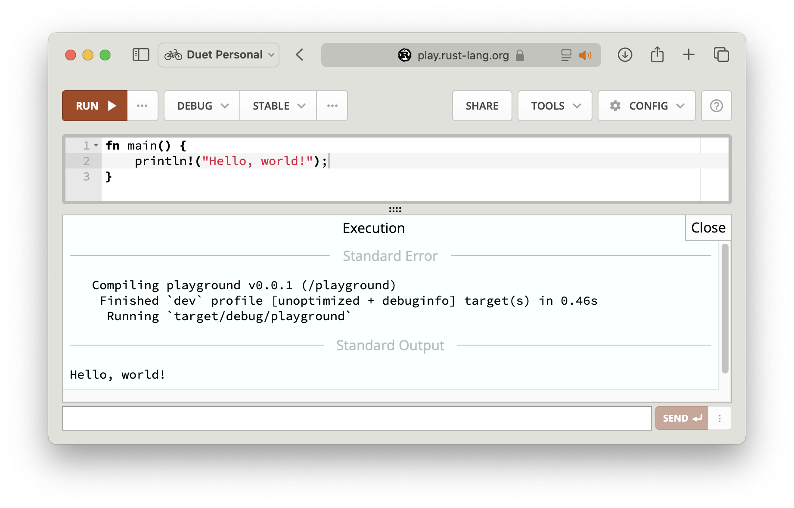
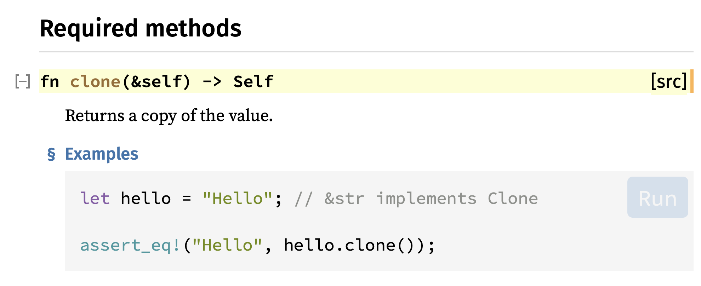
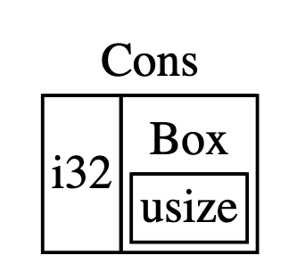
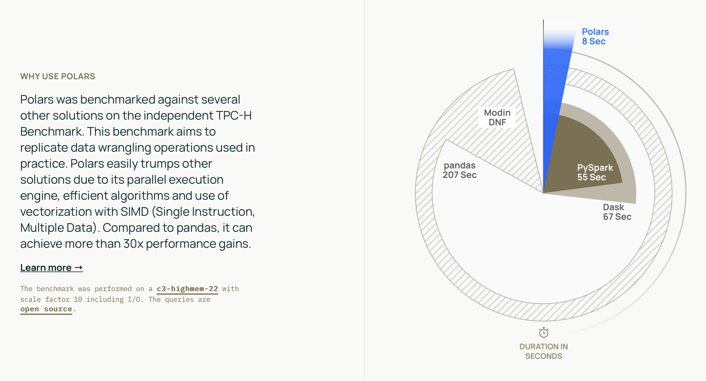

Rust Tiếng Việt

The book is published at https://rust-tieng-viet.github.io.
_~^~^~_
\) / o o \ (/
'_ _ _'
/ '-----' \
Rust là một ngôn ngữ nhanh, an toàn và được bình chọn là ngôn ngữ được ưa thích nhất trong nhiều năm liền theo Stack Overflow Survey. Rust có một hệ thống tài liệu và sách đồ sộ, chi tiết. Nhưng đôi khi nó sẽ khó tiếp cận với một số người bởi đa số tài liệu là Tiếng Anh. Với những ghi chép trong sách này, hy vọng có thể giúp cho mọi người (cũng như các thành viên trong team mình tại Fossil) có thể tiếp cận với ngôn ngữ này một cách nhanh chóng và dễ dàng hơn. Cũng như truyền cảm hứng và mở rộng cộng đồng sử dụng Rust tại Việt Nam.
Mục tiêu của sách này không phải là dịch từ các sách tiếng Anh.
Mà sẽ là những ghi chép, những lưu ý cho một người mới bắt đầu học Rust
cho đến lúc thành thạo, từ lúc hello world cho đến các dự án thực tế.
Bao gồm những khó khăn mà bạn sẽ phải gặp, những thuật ngữ, concepts mới,
những thói quen lập trình mới mà bạn sẽ phải làm quen.
Mình vẫn luôn prefer đọc sách tiếng Anh nếu bạn có thể. Vui lòng xem mục references ở cuối các trang nếu bạn muốn đào sâu hơn.
Links
Who is using Rust?
Công ty hoặc cộng đồng sử dụng Rust tại Việt Nam.
| Organization | Contact (GitHub User Name) | Environment | Description of Use |
|---|---|---|---|
| Fossil Vietnam | @duyet | Production | Data Platform |
Cài đặt Rust
Dưới đây là hướng dẫn chi tiết về cách cài đặt Rust trên hệ điều hành Windows, macOS và Linux. Bạn cũng có thể tự tham khảo trên trang chủ của Rust: https://www.rust-lang.org/tools/install
Cài đặt Rust trên macOS, Linux
Mở Terminal và chạy lệnh sau:
curl --proto '=https' --tlsv1.2 -sSf https://sh.rustup.rs | sh
Sau khi hoàn thành quá trình cài đặt, bạn có thể kiểm tra phiên bản Rust bằng cách mở Terminal và chạy lệnh sau:
rustc --version
Cài đặt Rust trên Windows
Để tải xuống trình cài đặt Rust, bạn cần truy cập vào trang web chính thức của Rust tại địa chỉ https://forge.rust-lang.org/infra/other-installation-methods.html
Chạy tập tin rustup-init.exe để bắt đầu quá trình cài đặt Rust trên máy tính của mình.
References
Rust Playground
https://play.rust-lang.org giúp chúng ta chạy Rust code trực tiếp trên trình duyệt mà không cần cài đặt Rust trên máy.

Một số tips:
- Bấm Run để chạy code. Có thể chuyển đổi giữa các version của Rust.
- Chọn Release thay vì Debug để chạy nhanh hơn (nhưng thiếu một số thông tin debug).
- Chọn Share để chia sẻ link đoạn code với người khác.
- Rustfmt sẽ tự động format code của bạn (như
cargo fmt). - Clippy sẽ kiểm tra code của bạn và đưa ra gợi ý (như
cargo clippy).
Project đầu tiên
Sau khi cài đặt Rust thành công, bạn có thể bắt đầu sử dụng Cargo (một công cụ quản lý gói mạnh mẽ được tích hợp sẵn trong Rust) để khởi tạo project hello world đầu tiên.
Bước 1: Tạo một package mới
Để bắt đầu với Cargo, bạn cần tạo một package mới bằng lệnh cargo new <name>. Ví dụ, để tạo một package mới với tên là hello_world, bạn chạy lệnh sau đây:
$ cargo new hello_world
# Created binary (application) `hello_world` package
Cargo sẽ tạo ra một package mới với một file Cargo.toml và một thư mục src. File Cargo.toml chứa tất cả các thông tin liên quan đến package của bạn.
$ tree .
.
├── Cargo.toml
└── src
└── main.rs
2 directories, 2 files
Hãy xem nội dung của src/main.rs
fn main() { println!("Hello, world!"); }
Bước 2: Biên dịch và chạy chương trình
Tiếp theo, để biên dịch chương trình của bạn, hãy chạy lệnh cargo build. Sau khi quá trình biên dịch kết thúc, Cargo sẽ tạo ra một thư mục mới có tên target, chứa tệp thực thi của chương trình.
$ cargo build
# Compiling hello_world v0.1.0 (/Users/duyet/project/hello_world)
# Finished dev [unoptimized + debuginfo] target(s) in 0.67s
Để chạy chương trình, bạn có thể sử dụng lệnh ./target/debug/<name>. Ví dụ, để chạy chương trình hello_world, bạn có thể chạy lệnh sau đây:
$ ./target/debug/hello_world
# Hello, world!
Kết quả sẽ hiển thị trên màn hình là "Hello, world!". Ngoài ra, bạn cũng có thể biên dịch và chạy chương trình chỉ trong một bước bằng cách sử dụng lệnh cargo run.
$ cargo run
# Hello, world!
References
Variables
Variables trong Rust có kiểu dữ liệu tĩnh. Ta khai báo kiểu dữ liệu trong lúc khai báo biến. Trong đa số các trường hợp compiler có thể đoán được kiểu dữ liệu nên đôi khi ta có thể bỏ qua.
fn main() { let an_integer = 1u32; let a_boolean = true; let unit = (); // copy `an_integer` into `copied_integer` let copied_integer = an_integer; }
Mọi biến đều phải được sử dụng, nếu không, compiler sẽ warning. Để skip warning, thêm dấu underscore ở đầu tên biến.
fn check_error() {} fn main() { // The compiler warns about unused variable bindings; these warnings can // be silenced by prefixing the variable name with an underscore let _unused_variable = 3u32; // Skip the result of function let _ = check_error(); }
mut
Mọi biến trong Rust mặc định là immutable, có nghĩa là không thể thay đổi, không thể gán bằng một giá trị khác.
fn main() { let a = 1; a = 2; } // error[E0384]: cannot assign twice to immutable variable `a` // --> src/main.rs:4:1 // | // 3 | let a = 1; // | - // | | // | first assignment to `a` // | help: consider making this binding mutable: `mut a` // 4 | a = 2; // | ^^^^^ cannot assign twice to immutable variable
Để có thể thay đổi giá trị của biến, ta thêm từ khóa mut sau let.
fn main() { let mut a = 1; a = 2; println!("a = {}", a); }
Ta cũng có thể khai báo lại biến đó để assign lại giá trị mới:
fn main() { let a = 1; let a = a + 1; }
Scope
Giá trị của variables có thể được xác định tùy theo scope.
Scope là một tập hợp các dòng code nằm trong {}.
let a = 1; { let a = 2; println!("inner: a = {}", a); // 2 } println!("outer: a = {}", a); // 1
Return trong scope
Ta cũng có thể return giá trị trong một scope cho một variable.
let a = { let y = 10; let z = 100; y + z }; println!("a = {}", a);
mut
Mọi biến trong Rust mặc định là immutable, có nghĩa là không thể thay đổi, không thể gán bằng một giá trị khác.
fn main() { let a = 1; a = 2; } // error[E0384]: cannot assign twice to immutable variable `a` // --> src/main.rs:4:1 // | // 3 | let a = 1; // | - // | | // | first assignment to `a` // | help: consider making this binding mutable: `mut a` // 4 | a = 2; // | ^^^^^ cannot assign twice to immutable variable
Để có thể thay đổi giá trị của biến, ta thêm từ khóa mut sau let.
fn main() { let mut a = 1; a = 2; println!("a = {}", a); }
Ta cũng có thể khai báo lại biến đó để assign lại giá trị mới:
fn main() { let a = 1; let a = a + 1; }
uninitialized variable
Variable mà chưa được gán giá trị được gọi là uninitialized variable.
fn main() { let my_variable; // ⚠️ }
Rust sẽ không compile và bạn sẽ không thể sử dụng cho đến khi my_variable được gán giá trị nào đó. Ta có thể lợi dụng điều này:
- Khai báo uninitialized variable.
- Gán giá trị cho nó trong 1 scope khác
- Vẫn giữ được giá trị của của variable đó khi ra khỏi scope.
fn main() { let my_number; { my_number = 100; } println!("{}", my_number); }
Hoặc phức tạp hơn
fn loop_then_return(mut counter: i32) -> i32 { loop { counter += 1; if counter % 50 == 0 { break; } } counter } fn main() { let my_number; { // Pretend we need to have this code block let number = { // Pretend there is code here to make a number // Lots of code, and finally: 57 }; my_number = loop_then_return(number); } println!("{}", my_number); // 100 }
Closure
Hay còn được gọi là anonymous functions hay lambda functions. Khác với function bình thường, kiểu dữ liệu của tham số đầu vào và kiểu dữ liệu trả ra là không bắt buộc.
Function bình thường:
fn get_square_value(i: i32) -> i32 { i * i } fn main() { let x = 2; println!("{}", get_square_value(x)); }
Closure:
fn main() { let x = 2; let square = |i: i32| -> i32 { i * i }; println!("{}", square(x)); }
Closure không cần data type
fn main() { let x = 2; let square = |i| { i * i }; println!("{}", square(x)); }
Tham số của của closure được đặt giữa 2 dấu: | và |.
Closure không có tham số
Với closure không có tham số, ta viết như sau:
#![allow(unused)] fn main() { let func = || { 1 + 1 }; }
Closure chỉ có một mệnh đề
Dấu ngoặc {} cũng không bắt buộc nếu nội dung của closure chỉ có một mệnh đề.
#![allow(unused)] fn main() { let func = || 1 + 1; }
Vừa định nghĩa, vừa thực thi
fn main() { let x = 2; let square = |i| -> i32 { // ⭐️ nhưng bắt buộc khai báo return type i * i }(x); println!("{}", square); }
Cargo
cargo là package management tool official của Rust.
cargo có rất nhiều tính năng hữu ích để improve code quality và nâng cao tốc độ của lập trình viên.
cargo có hẳn một quyển sách riêng: The Cargo Book
Những tính năng phổ biến mà bạn sẽ phải dùng hằng ngày:
cargo add <crate>: cài đặt crate mới từ https://crates.io, crate sẽ được thêm vàoCargo.toml.cargo rhoặccargo run: biên dịch và chạy chương trình (main.rs).cargo thoặccargo test: run mọi tests (unit tests, doc tests, integration tests).cargo fmt: format code.cargo clippy: lint để bắt các lỗi phổ biến trong lập trình, code đẹp hơn, chạy nhanh hơn, etc. https://github.com/rust-lang/rust-clippy
Packages và Crates
Package là một hoặc nhiều crates. Một package gồm một file Cargo.toml mô tả cách để build các crates đó.
Crate có thể là một binary crate hoặc library crate.
- binary crate có thể được compile thành binary và có thể thực thi được, ví dụ như một command-line hoặc server. Một binary crate bắt buộc phải có một hàm
main() - library crate không cần hàm
main(). Library crate dùng để share các tính năng cho các project khác.
Package layout
Được mô tả trong Cargo book, một crate trong Rust sẽ có layout như sau:
.
├── Cargo.lock
├── Cargo.toml
├── src/
│ ├── lib.rs
│ ├── main.rs
│ ├── helper.rs
│ ├── utils/
│ │ ├── mod.rs
│ │ └── math.rs
│ └── bin/
│ ├── named-executable.rs
│ └── another-executable.rs
├── benches/
│ ├── large-input.rs
│ └── multi-file-bench.rs
├── examples/
│ ├── simple.rs
│ └── complex.rs
└── tests/
├── some-integration-tests.rs
└── multi-file-test/
├── main.rs
└── test_module.rs
Cargo.tomlvàCargo.lockdược đặt ở thư mục gốc của package. Thường để sử dụng các library nào đó, người ta sẽ hướng dẫn bạn thêm một dòng ví dụlog = "0.6"bên dưới section[dependencies]hoặc[dev-dependencies]. Không nên đụng đến fileCargo.lockdo nó được generate tự động.- Source code được đặt trong thư mục
src. - File chính của library crate là
src/lib.rs. - File chính của binary crate là
src/main.rs. - Benchmark code được đặt trong thư mục
benches. - Code ví dụ (examples) được đặt trong thư mục
examples. - Integration tests được đặt trong thư mục
tests. helper.rsvàutils/được gọi là các module. Nếu module là một thư mục gồm nhiều file khác, filemod.rsđược coi như là file index của module đó. Xem thêm về modules tại đây.
Crate
Crate có thể là một binary crate hoặc library crate.
- binary crate có thể được compile thành binary và có thể thực thi được, ví dụ như một command-line hoặc server. Một binary crate bắt buộc phải có một hàm
main() - library crate không cần hàm
main(). Library crate dùng để share các tính năng cho các project khác.
Crate được publish trên https://crates.io.
Init crate
Để tạo một crate mới ta sử dụng cargo:
cargo new crate_name: binary crate.cargo new crate_name --lib: library crate.
Layout của binary crate và library crate
// Binary crate
├── Cargo.toml
└── src
└── main.rs
// Library crate
├── Cargo.toml
└── src
└── lib.rs
Một crate có thể vừa có lib.rs và main.rs.
Binary crate khi cargo build hoặc cargo run sẽ build ra một file binary bỏ trong ./target/debug/<crate_name>.
Khi build cho môi trường production, ta thêm --release lúc này cargo sẽ build thành binary bỏ trong ./target/release/<crate_name>.
debug hay release được gọi là các build target. Build trong release sẽ được apply nhiều optimization hơn, kích thước nhỏ hơn, chạy nhanh hơn nhưng compile lâu hơn.
use crate
Để sử dụng (import) một crate từ https://crates.io, ví dụ https://crates.io/crates/log.
1. Thêm crate vào Cargo.toml
Có 2 cách
Cách 1: Edit trực tiếp file Cargo.toml
[dependencies]
log = "0.4"
Cách 2: Sử dụng cargo add, cargo sẽ tự động update file Cargo.toml cho bạn
cargo add log
[dependencies]
log = "0.4.17"
Để thêm crate vào dev dependencies (dùng cho tests), ta thêm --dev vào lệnh:
cargo add --dev log
[dev-dependencies]
log = "0.4.17"
2. Sử dụng crate trong code
fn main() { log::info!("hello"); log::error!("oops"); }
Sử dụng keyword use. Chức năng chính của use là bind lại full path
của element vào một tên mới, để chúng ta không cần phải lặp lại một tên dài mỗi lần sử dụng.
use log::info; use log::error; fn main() { info!("hello"); error!("oops"); }
Nhóm các import lại với nhau:
use log::{info, error}; fn main() { info!("hello"); error!("oops"); }
Import mọi thứ được public trong crate/module. Cách này thường hay tránh bởi
sẽ khó biết được function, struct, ... nào đó đang thuộc crate nào, ngoại trừ các prelude::*.
use log::*; fn main() { info!("hello"); error!("oops"); }
use trong scope
use cũng thường được sử dụng import element vào trong scope hiện tại.
#![allow(unused)] fn main() { fn hello() -> String { "Hello, world!".to_string() } #[cfg(test)] mod tests { use super::hello; // Import the `hello()` function into the scope #[test] fn test_hello() { assert_eq!("Hello, world!", hello()); // If not using the above `use` statement, we can run same via `super::hello()` } } }
Bạn sẽ sẽ hay gặp:
#![allow(unused)] fn main() { // ... #[cfg(test)] mod tests { use super::*; use log::info; // ... } }
self::, super::
Mặc định thì use sẽ import đường dẫn tuyệt đối, bắt đầu từ crate root.
self và super thường dùng để import mod theo vị trí tương đối.
#![allow(unused)] fn main() { // src/level_1/level_2/mod.rs use self::hello_1; use super::super::level3::hello_2; }
Re-export
Một trường hợp đặt biệt là sử dụng pub use là re-exporting,
khi bạn thiết kế một module bạn có thể export một số thứ từ module khác (*) từ module của bạn.
Do đó người sử dụng có thể sử dụng các module khác đó ngay từ module của bạn.
Module khác (*) đó có thể là một internal module, internal crate hoặc external crate.
#![allow(unused)] fn main() { // src/utils.rs pub use log::*; }
// src/main.rs use crate::utils::info; fn main() { info!("..."); }
Pattern này được sử dụng khá nhiều ở các thư viện lớn. Nó giúp ẩn đi các internal module phức tạp của library đối với user. Bởi vì user sẽ không cần quan tâm đến cấu trúc directory phức tạp khi sử dụng một library nào đó.
self::, super::
Mặc định thì use sẽ import đường dẫn tuyệt đối, bắt đầu từ crate root.
self và super thường dùng để import mod theo vị trí tương đối.
#![allow(unused)] fn main() { // src/level_1/level_2/mod.rs use self::hello_1; use super::super::level3::hello_2; }
Re-export
Một trường hợp đặt biệt là sử dụng pub use là re-exporting,
khi bạn thiết kế một module bạn có thể export một số thứ từ module khác (*) từ module của bạn.
Do đó người sử dụng có thể sử dụng các module khác đó ngay từ module của bạn.
Module khác (*) đó có thể là một internal module, internal crate hoặc external crate.
#![allow(unused)] fn main() { // src/utils.rs pub use log::*; }
// src/main.rs use crate::utils::info; fn main() { info!("..."); }
Pattern này được sử dụng khá nhiều ở các thư viện lớn. Nó giúp ẩn đi các internal module phức tạp của library đối với user. Bởi vì user sẽ không cần quan tâm đến cấu trúc directory phức tạp khi sử dụng một library nào đó.
Preludes
Preludes là những thứ được định nghĩa trong std,
và được import sẵn, vì chúng thường sẽ phải được dùng trong mọi chương trình Rust.
Bạn có thể sử dụng mà không cần phải import, ví dụ như: Option,
Result, Ok, Err, ...
Mặc dù std của Rust có rất nhiều module và tính năng, nhưng không phải mọi thứ đều được preludes.
Đây là danh sách những thứ được preludes: https://doc.rust-lang.org/std/prelude/#prelude-contents
std::marker::{Copy,Send,Sized,Sync,Unpin}std::ops::{Drop,Fn,FnMut,FnOnce}().std::mem::dropstd::boxed::Boxstd::borrow::ToOwnedto_owned, the generic method for creating an owned type from a borrowed type.std::clone::Cloneclone, the method for producing a copy of a value.std::cmp::{PartialEq,PartialOrd,Eq,Ord}std::convert::{AsRef,AsMut,Into,From}std::default::Defaultstd::iter::{Iterator,Extend,IntoIterator,DoubleEndedIterator,ExactSizeIterator}std::option::Option::{self,Some,None}std::result::Result::{self,Ok,Err}Option, its variants are exported as well.std::string::{String,ToString}std::vec::Vec
The prelude used in Rust 2021, std::prelude::rust_2021, includes all of the above,
and in addition re-exports:
Ownership
Ownership là một trong những tính năng đặc trưng của Rust, đây là cách giúp Rust đảm bảo memory safety mà không cần đến garbage collector.
Ownership là gì?
Ownership là một khái niệm mới. Tất cả các chương trình đều cần phải quản lý bộ nhớ mà chúng sử dụng trong quá trình thực thi. Một số ngôn ngữ sử dụng garbage collection để tìm và giải phóng bộ nhớ trong thời gian chạy, trong khi một số ngôn ngữ khác yêu cầu lập trình viên tự cấp phát (allocate) và giải phóng (free) bộ nhớ. Rust đi theo một hướng khác, trong đó bộ nhớ được quản lý bởi một hệ thống ownership với các quy tắc mà trình biên dịch sử dụng để kiểm tra (check) trong quá trình biên dịch. Bằng cách này, Rust buộc chúng ta phải viết mã theo cách an toàn cho bộ nhớ, và sẽ phát hiện lỗi ngay trong quá trình biên dịch. Càng hiểu rõ về khái niệm ownership, chúng ta càng có thể viết mã an toàn và hiệu quả hơn.
Để tìm hiểu kỹ hơn về Ownership, bạn có thể đọc Rust Book tại đây cực kỳ chi tiết: https://doc.rust-lang.org/book/ch04-01-what-is-ownership.html
Ownership Rules
Nói đơn giản về ownership rules thì có một số điều cơ bản sau:
- Mỗi giá trị trong Rust đều có một biến gọi là owner của nó.
- Chỉ có một owner tại một thời điểm.
- Khi owner ra khỏi scope, giá trị sẽ bị hủy.
Borrow checker
Bằng cách theo dõi data sử dụng thông qua bộ rules,
borrow checker có thể xác định khi nào data cần được khởi tạo
(initialized) và khi nào cần được giải phóng (freed, or dropped).
Thực tế sẽ có một trong ba trường hợp sau khi bạn sử dụng variable:
tự move data và bỏ ownership; copy data sang một variable khác;
hoặc sử dụng reference (con trỏ) đến data và vẫn giữ ownership,
cho mượn (borrow) nó một thời gian.
Chỉ cần nhớ hai quy tắc quan trọng:
- Khi truyền một variable (thay vì reference tới variable) cho một function khác, ta sẽ mất quyền ownership. Function đó sẽ là owner của variable này và bạn không thể sử dụng lại được nữa ở context cũ.
- Khi truyền một reference tới variable, bạn có thể immutable borrow không giới hạn; hoặc mutable borrow một lần.
Ví dụ: đoạn chương trình sau sẽ không compile được
fn hold_my_vec<T>(_: Vec<T>) {} fn main() { let x = vec![1, 2, 3]; hold_my_vec(x); let z = x.get(0); println!("Got: {:?}", z); }
Compiler sẽ báo lỗi như sau: rustc main.rs
error[E0382]: borrow of moved value: `x` --> main.rs:7:13 | 4 | let x = vec![1, 2, 3]; | - move occurs because `x` has type `Vec<i32>`, which does not implement the `Copy` trait 5 | hold_my_vec(x); | - value moved here 6 | 7 | let z = x.get(0); | ^^^^^^^^ value borrowed here after move | = note: borrow occurs due to deref coercion to `[i32]`
Lỗi nói rằng Vec<i32> không implement
Copy trait,
vì thế data sẽ được di chuyển (move) hoặc mượn (borrow) vào function
hold_my_vec(). Do đó dòng 7 không thể thực hiện được do x được
được move vào trong function kia.
Mặc dùng không thể implement Copy trait, Vec vẫn có
Clone trait.
Chỉ để cho code chạy được thì đây là một cách nhanh để compiler ngưng báo lỗi.
Lưu ý thì việc clone thường sẽ tốn khá nhiều chi phí, nhất là đối với những object lớn.
fn hold_my_vec<T>(_: Vec<T>) {} fn main() { let x = vec![1, 2, 3]; hold_my_vec(x.clone()); // <-- x.clone() let z = x.get(0); println!("Got: {:?}", z); }
Trong trường hợp này, function hold_my_vec không làm gì ngoài việc nhận ownership.
Có một cách tốt hơn là references.
Thay vì để function nhận ownership, ta có thể cho nó mượn giá trị.
Chúng ta sẽ truyền vào một reference — một giá trị được mượn.
fn hold_my_vec<T>(_: &Vec<T>) {} fn main() { let x = vec![1, 2, 3]; hold_my_vec(&x); // <--- &x let z = x.get(0); println!("Got: {:?}", z); }
Với cách này thì chúng ta sẽ để function mượn trong khi vẫn có thể tiếp tục sử sử dụng trong chương trình.
Bạn có thể đọc thêm về Ownership, References and Borrowing và The Slice Type tại the Rust Book.
Struct
Struct được sử dụng trong Rust rất nhiều, hầu như là mọi lúc. Với struct ta có thể định nghĩa một kiểu dữ liệu riêng.
Tên của struct thường là UpperCamelCase. Nếu bạn định nghĩa tên struct là lowercase, compiler sẽ nhắc nhở ngay.
warning: type `duyet_struct` should have an upper camel case name
--> src/main.rs:1:8
|
1 | struct duyet_struct;
| ^^^^^^^^^^^^ help: convert the identifier to upper camel case: `DuyetStruct`
|
= note: `#[warn(non_camel_case_types)]` on by default
Có 3 loại struct:
Unit struct
Unit struct là một struct mà không có gì cả:
struct FileDirectory; fn main() {}
Tuple struct
Tuple struct hay còn gọi là Unnamed struct. Bạn chỉ cần định nghĩa kiểu dữ liệu, không cần định tên field name.
struct Colour(u8, u8, u8); fn main() { let my_colour = Colour(50, 0, 50); // Make a colour out of RGB (red, green, blue) println!("The first part of the colour is: {}", my_colour.0); println!("The second part of the colour is: {}", my_colour.1); } // The first part of the colour is: 50 // The second part of the colour is: 0
Named struct
Phổ biến nhất, bạn sẽ phải định nghĩa field name trong block {}
struct Colour(u8, u8, u8); // Declare the same Colour tuple struct struct SizeAndColour { size: u32, colour: Colour, // And we put it in our new named struct // The last comma is optional, but recommended } fn main() { let colour = Colour(50, 0, 50); let size_and_colour = SizeAndColour { size: 150, colour: colour }; }
colour: colour có thể được viết gọn lại thành:
let size_and_colour = SizeAndColour { size: 150, colour };
Xem về Trait
Trait
Rust có nhiều loại data types như primitives (i8, i32, str, ...), struct, enum và các loại kết hợp (aggregate) như tuples và array. Mọi types không có mối liên hệ nào với nhau. Các data types có các phương thức (methods) để tính toán hay convert từ loại này sang loại khác, nhưng chỉ để cho tiện lợi hơn, method chỉ là các function. Bạn sẽ làm gì nếu một tham số là nhiều loại kiểu dữ liệu? Một số ngôn ngữ như Typescript hay Python sẽ có cách sử dụng Union type như thế này:
function notify(data: string | number) {
if (typeof data == 'number') {
// ...
} else if (typeof data == 'number') {
// ...
}
}
Còn trong Rust thì sao?

Trait là gì?
Có thể bạn đã thấy qua trait rồi: Debug, Copy, Clone, ... là các trait.
Trait là một cơ chế abstract để thêm các tính năng (functionality) hay hành vi (behavior) khác nhau vào các kiểu dữ liệu (types) và tạo nên các mối quan hệ giữa chúng.
Trait thường đóng 2 vai trò:
- Giống như là interfaces trong Java hay C# (fun fact: lần đầu tiên nó được gọi là
interface). Ta có thể kế thừa (inheritance) interface, nhưng không kế thừa được implementation của interface*.* Cái này giúp Rust có thể hỗ trợ OOP. Nhưng có một chút khác biệt, nó không hẳn là interface. - Vai trò này phổ biến hơn, trait đóng vai trò là generic constraints. Dễ hiểu hơn, ví dụ, bạn định nghĩa một function, tham số là một kiểu dữ liệu bất kỳ nào đó, không quan tâm, miễn sau kiểu dữ liệu đó phải có phương thức
method_this(),method_that()nào đó cho tui. Kiểu dữ liệu nào đó gọi là genetic type. Function có chứa tham số generic type đó được gọi là generic function. Và việc ràng buộc phải cómethod_this(),method_that(), ... gọi là generic constraints. Mình sẽ giải thích rõ cùng với các ví dụ sau dưới đây.
Để gắn một trait vào một type, bạn cần implement nó.
Bởi vì Debug hay Copy quá phổ biến, nên Rust có attribute để tự động implement:
#![allow(unused)] fn main() { #[derive(Debug)] struct MyStruct { number: usize, } }
Nhưng một số trait phức tạp hơn bạn cần định nghĩa cụ thể
bằng cách impl nó. Ví dụ bạn có trait Add
(std::ops::Add)
để add 2 type lại với nhau. Nhưng Rust sẽ không biết cách bạn add 2
type đó lại như thế nào, bạn cần phải tự định nghĩa:
use std::ops::Add; #[derive(Debug, PartialEq)] struct MyStruct { number: usize, } impl Add for MyStruct { // <-- here type Output = Self; fn add(self, other: Self) -> Self { Self { number: self.number + other.number } } } fn main() { let a1 = MyStruct { number: 1 }; let a2 = MyStruct { number: 2 }; let a3 = MyStruct { number: 3 }; assert_eq!(a1 + a2, a3); }
Note: Mình sẽ gọi Define Trait là việc định nghĩa,
khai báo một trait mới trong Rust (trait Add).
Implement Trait là việc khai báo nội dung của function được
liệu kê trong Trait cho một kiểu dữ liệu cụ thể nào đó (impl Add for MyStruct).
Chi tiết
- Khai báo Trait
- Implement Trait cho một Type
- Default Implementations
- Traits as Parameters
- Trait Bound
- Multiple Trait Bound
whereClauses- Returning Types that Implement Traits
- Using Trait Bounds to Conditionally Implement Methods
- Blanket implementations
- Trait Inheritance
- Supertraits
- Auto Trait
- Copy, Clone
- String và &str
- FromStr
- Display
Kết
Compiler sử dụng trait bound để kiểm tra các kiểu dữ liệu được sử dụng trong code có đúng behavior không. Trong Python hay các ngôn ngữ dynamic typed khác, ta sẽ gặp lỗi lúc runtime nếu chúng ta gọi các method mà kiểu dữ liệu đó không có hoặc không được định nghĩa.
Bạn có chắc chắn là a dưới đây có method summarize() hay không?
Nhớ rằng typing hint của Python3 chỉ có tác dụng là nhắc nhở cho lập trình viên thôi.
# Python
func print_it(a: Union[NewsArticle, Tweet]):
print(a.summarize())
print_it(1)
print_it("what")
Do đó Rust bắt được mọi lỗi lúc compile time và force chúng ta phải fix hết trước khi chương trình chạy. Do đó chúng ta không cần phải viết thêm code để kiểm tra behavior (hay sự tồn tại của method) trước khi sử dụng lúc runtime nữa, tăng cường được performance mà không phải từ bỏ tính flexibility của generics.
Xem về Struct.
Khai báo / định nghĩa một Trait
Nhắc lại là Trait định nghĩa các hành vi (behavior). Các types khác nhau có thể chia sẻ cùng cá hành vi. Định nghĩa một trait giúp nhóm các hành vi để làm một việc gì đó.
Theo ví dụ của Rust Book, ví dụ ta các struct chứa nhiều loại text:
NewsArticlestruct chứa news story, vàTweetstruct có thể chứa tối đa 280 characters cùng với metadata.
Bây giờ chúng ta cần viết 1 crate name có tên là aggregator
có thể hiển thị summaries của data có thể store trên NewsArticle
hoặc Tweet instance. Chúng ta cần định nghĩa method summarize
trên mỗi instance. Để định nghĩa một trait, ta dùng trait theo sau
là trait name; dùng keyword pub nếu định nghĩa một public trait.
pub trait Summary { fn summarize(&self) -> String; }
Trong ngoặc, ta định nghĩa các method signatures để định nghĩa hành vi:
fn summarize(&self) -> String. Ta có thể định nghĩa nội dung của function.
Hoặc không, ta dùng ; kết thúc method signature, để bắt buộc type nào
implement trait Summary đều phải định nghĩa riêng cho nó,
bởi vì mỗi type (NewsArticle hay Tweet) đều có cách riêng để summarize. Mỗi trait có thể có nhiều method.
Implement Trait cho một Type
Bây giờ ta định implement các method của trait Summary cho từng type.
Ví dụ dưới đây ta có struct NewsArticle và struct Tweet,
và ta định nghĩa summarize cho 2 struct này.
pub trait Summary { fn summarize(&self) -> String; } pub struct NewsArticle { pub headline: String, pub location: String, pub author: String, pub content: String, } impl Summary for NewsArticle { fn summarize(&self) -> String { format!("{}, by {} ({})", self.headline, self.author, self.location) } } pub struct Tweet { pub username: String, pub content: String, pub reply: bool, pub retweet: bool, } impl Summary for Tweet { fn summarize(&self) -> String { format!("{}: {}", self.username, self.content) } }
Implement trait cho type giống như impl bình thường,
chỉ có khác là ta thêm trait name và keyword for sau impl.
Bây giờ Summary đã được implement cho NewsArticle và Tweet,
người sử dụng crate đã có thể sử dụng các phương thức của trait như các method function bình thường.
Chỉ một điều khác biệt là bạn cần mang trait đó vào cùng scope hiện tại cùng với type để có thể sử dụng.
Ví dụ:
use aggregator::{Summary, Tweet}; // <-- same scope fn main() { let tweet = Tweet { username: String::from("horse_ebooks"), content: String::from("of course, as you probably already know, people"), reply: false, retweet: false, }; println!("1 new tweet: {}", tweet.summarize()); // 1 new tweet: horse_ebooks: of course, as you probably already know, people }
Rust Playground: https://play.rust-lang.org/?version=stable&mode=debug&edition=2021&gist=dc563051aecebae4344776c06fb1b49d
Chúng ta có thể implement trait cho mọi type khác bất kỳ, ví dụ implement Summary cho Vec<T> trong scope của crate hiện tại.
pub trait Summary { fn summarize(&self) -> String; } impl<T> Summary for Vec<T> { // <-- local scope fn summarize(&self) -> String { format!("There are {} items in vec", self.len()) } } fn main() { let vec = vec![1i32, 2i32]; println!("{}", vec.summarize()); // There are 2 items in vec }
Rust Playground: https://play.rust-lang.org/?version=stable&mode=debug&edition=2021&gist=dcaa812fab222ec0c713a38b066bda20
Bạn sẽ không thể implement external traits trên external types.
Ví dụ ta không thể implement Display cho Vec<T> bởi vì
Display và Vec<T> được định nghĩa trong standard library,
trong trong crate hiện tại. Rule này giúp tránh chống chéo và chắc chắn
rằng không ai có thể break code của người khác và ngược lại.
Default Implementations
Đôi khi bạn cần có default behavior mà không cần phải implement content cho từng type mỗi khi cần sử dụng:
pub trait Summary { fn summarize(&self) -> String { String::from("(Read more...)") } } pub struct NewsArticle { pub headline: String, pub location: String, pub author: String, pub content: String, } impl Summary for NewsArticle {}; // <-- sử dụng {} fn main() { let article = NewsArticle { ... }; println!("New article: {}", article.summarize()); // New article: (Read more...) }
Traits as Parameters
Trở lại ví dụ Typescript ở đầu tiên, với Trait bạn đã có thể define một function chấp nhận tham số là nhiều kiểu dữ liệu khác nhau. Nói theo một cách khác, bạn không cần biết kiểu dữ liệu, bạn cần biết kiểu dữ liệu đó mang các behavior nào thì đúng hơn.
fn notify(data: &impl Summary) { println!("News: {}", data.summarize()); } fn main() { let news = NewsArticle {}; notify(news); }
Ở đây, thay vì cần biết data là type nào (NewsArticle hay Tweet?),
ta chỉ cần cho Rust compiler biết là notify sẽ chấp nhận mọi
type có implement trait Summary, mà trait Summary có behavior .summarize(),
do đó ta có thể sử dụng method .summary() bên trong function.
Trait Bound
Một syntax sugar khác mà ta có thể sử dụng thay cho &impl Summary ở trên,
gọi là trait bound, bạn sẽ bắt gặp nhiều trong Rust document:
pub fn notify<T: Summary>(item: &T) { println!("News: {}", item.summarize()); }
Đầu tiên chúng ta định nghĩa trait bound bằng cách định nghĩa
một generic type parameter trước, sau đó là : trong ngoặc < và >.
Ta có thể đọc là: item có kiểu generic là T và T phải được impl Summary.
notify<T>(khai báo generic typeTnotify<T: Summary>(generic type được implementtrait Summary
Cú pháp này có thể dài hơn và không dễ đọc như &impl Summary, nhưng hãy xem ví dụ dưới đây:
pub fn notify(item1: &impl Summary, item2: &impl Summary) {} // (1) pub fn notify<T: Summary>(item1: &T, item2: &T) {} // (2)
Dùng trait bound giúp ta tái sử dụng lại T,
mà còn giúp force item1 và item2 có cùng kiểu dữ liệu,
đây là cách duy nhất (cả 2 đều là NewsArticle hoặc cả 2 đều là Tweet) mà (1) không thể.
Specifying Multiple Trait Bounds with the + Syntax
Ta có cú pháp + nếu muốn generic T có được impl nhiều trait khác nhau.
Ví dụ ta muốn item phải có cả Summary lẫn Display
pub fn notify(item: &(impl Summary + Display)) {} pub fn notify<T: Summary + Display>(item: &T) {}
where Clauses
Đôi khi bạn sẽ có nhiều genenic type, mỗi generic type lại có nhiều trait bound,
khiến code khó đọc. Rust có một cú pháp where cho phép định nghĩa trait bound
phía sau function signature. Ví dụ:
fn some_function<T: Display + Clone, U: Clone + Debug>(t: &T, u: &U) -> i32 {
Với where clause:
fn some_function<T, U>(t: &T, u: &U) -> i32 where T: Display + Clone, U: Clone + Debug, {
Returning Types that Implement Traits
Chúng ta cũng có thể sử dụng impl Trait cho giá trị được trả về của function.
fn returns_summarizable() -> impl Summary { Tweet { username: String::from("horse_ebooks"), content: String::from("ahihi"), reply: false, retweet: false, } }
Được đọc là: function returns_summarizable() trả về bất kỳ kiểu dữ liệu nào có impl Summary.
Tuy nhiên bạn chỉ có thể return về hoặc Tweet
hoặc NewsArticle do cách implement của compiler. Code sau sẽ có lỗi:
fn returns_summarizable(switch: bool) -> impl Summary { if switch { NewsArticle {} } else { Tweet {} } }
Rust Book có một chương riêng để xử lý vấn đề này: Chapter 17: Using Trait Objects That Allow for Values of Different Types
Using Trait Bounds to Conditionally Implement Methods
Ta có thể implement 1 method có điều kiện cho bất kỳ type nào có implement một trait khác cụ thể. Ví dụ để dễ hiểu hơn dưới đây:
use std::fmt::Display; struct Pair<T> { x: T, y: T, } impl<T> Pair<T> { fn new(x: T, y: T) -> Self { Self { x, y } } } impl<T: Display + PartialOrd> Pair<T> { fn cmp_display(&self) { if self.x >= self.y { println!("The largest member is x = {}", self.x); } else { println!("The largest member is y = {}", self.y); } } }
impl<T> Pair<T> implement function new trả về kiểu dữ liệu Pair<T> với T là generic (bất kỳ kiểu dữ liệu nào.
impl<T: Display + PartialOrd> Pair<T> implement function cmp_display
cho mọi generic T với T đã được implement Display + PartialOrd
trước đó rồi (do đó mới có thể sử dụng các behavior của
Display (println!("{}")) và PartialOrd (>, <, ...) được.
Blanket implementations
Ta cũng có thể implement 1 trait có điều kiện cho bất kỳ kiểu dữ liệu nào có implement một trait khác rồi. Implementation của một trait cho 1 kiểu dữ liệu khác thỏa mãn trait bound được gọi là blanket implementations và được sử dụng rộng rãi trong Rust standard library. Hơi xoắn não nhưng hãy xem ví dụ dưới đây.
Ví dụ: ToString trait trong
Rust standard library,
nó được implement cho mọi kiểu dữ liệu nào có được implement Display trait.
impl<T: Display> ToString for T { // --snip-- }
Có nghĩa là, với mọi type có impl Display, ta có hiển nhiên thể sử dụng được các thuộc tính của trait ToString.
let s = 3.to_string(); // do 3 thoaỏa manãn Display
Do 3 thỏa mãn điều kiện là đã được impl Display for i32.
(https://doc.rust-lang.org/std/fmt/trait.Display.html#impl-Display-11)
Trait Inheritance
pub trait B: A {}
Cái này không hẳn gọi là Trait Inheritance, cái này đúng hơn gọi là "cái nào implement cái B thì cũng nên implement cái A". A và B vẫn là 2 trait độc lập nên vẫn phải implemenet cả 2.
impl B for Z {} impl A for Z {}
Inheritance thì không được khuyến khích sử dụng.
Supertraits
Rust không có khái niệm "kế thừa" như trong OOP. Nhưng bạn có thể định nghĩa một trait là một tập hợp của các trait khác.
#![allow(unused)] fn main() { trait Person { fn name(&self) -> String; } // Person là một supertrait của Student. // Implement Student yêu cầu bạn phải cũng phải impl Person. trait Student: Person { fn university(&self) -> String; } trait Programmer { fn fav_language(&self) -> String; } // CompSciStudent (computer science student) là một subtrait // của cả Programmer và Student. // // Implement CompSciStudent yêu cầu bạn phải impl tất cả supertraits. trait CompSciStudent: Programmer + Student { fn git_username(&self) -> String; } fn comp_sci_student_greeting(student: &dyn CompSciStudent) -> String { format!( "My name is {} and I attend {}. My favorite language is {}. My Git username is {}", student.name(), student.university(), student.fav_language(), student.git_username() ) } }
Auto Traits
Auto traits là các trait đánh dấu (marker trait) được tự động triển khai cho mọi kiểu dữ liệu,
trừ khi kiểu dữ liệu hoặc một kiểu dữ liệu mà nó chứa được khai báo tường minh là không impl bằng cách sử dụng negative_impls.
Ta cần bật feature auto_traits để khai báo auto trait.
#![allow(unused)] #![feature(auto_traits)] fn main() { auto trait Valid {} }
Sau đó, ta có thể triển khai trait Valid cho các kiểu dữ liệu khác nhau:
#![feature(auto_traits)] #![feature(negative_impls)] auto trait Valid {} struct True; struct False; // Negative impl // Có nghĩa là Valid không được auto impl cho struct False impl !Valid for False {} // Nếu T được impl trait Valid, thì MaybeValid<T> cũng được impl trait Valid struct MaybeValid<T>(T); fn must_be_valid<T: Valid>(_t: T) { } fn main() { // Hoạt động must_be_valid(MaybeValid(True)); // Báo lỗi - do `False` không được impl trait Valid // must_be_valid(MaybeValid(False)); }
Auto trait Valid, sẽ tự động impl cho mọi struct, enum, ...
References
- https://doc.rust-lang.org/beta/unstable-book/language-features/auto-traits.html
Copy, Clone
Có một số kiểu dữ liệu trong Rust rất đơn giản (simple types),
bao gồm integers, floats, booleans (true và false), và char.
Các simple types này nằm trên stack bởi vì complier biết chính xác size của nó.
Chúng được gọi là copy types. Bởi vì nó simple và nhỏ gọn nên dễ dàng để copy,
do đó compiler luôn copy nếu bạn bỏ nó vào function.
Làm sao để biết đọc một kiểu dữ liệu có được implement Copy hay không.
Bạn có thể xem trong Rust document. Ví dụ char:
https://doc.rust-lang.org/std/primitive.char.html
Nếu bạn thấy:
- Copy: có thể được copy nếu bạn bỏ nó vào function.
- Display: bạn có thể sử dụng
{}để print. - Debug: bạn có thể sử dụng
{:?}để print.
fn prints_number(number: i32) { println!("{}", number); } fn main() { let my_number = 8; prints_number(my_number); // Prints 8. prints_number gets a copy of my_number prints_number(my_number); // Prints 8 again. // No problem, because my_number is copy type! }
Do i32 được Copy nên chúng ta có thể sử dụng my_number nhiều lần mà không cần borrow & như struct.
Clone trait
Nếu bạn đọc document của String: https://doc.rust-lang.org/std/string/struct.String.html

String không được implement Copy, thay vào đó là Clone. Clone cũng giúp copy giá trị nhưng sẽ cần rất nhiều memory, và ta phải tự gọi method .clone() chứ Rust sẽ không tự Clone.
fn prints_country(country_name: String) { println!("{}", country_name); } fn main() { let country = String::from("Duyet"); prints_country(country); prints_country(country); // ⚠️ }
Sẽ báo lỗi, theo như compiler giải thích rằng country là String và không được implement Copy nên country bị move vào trong function. Do đó ta không thể sử dụng country được nữa.
error[E0382]: use of moved value: `country` --> src/main.rs:8:20 | 6 | let country = String::from("Duyet"); | ------- move occurs because `country` has type `String`, which does not implement the `Copy` trait 7 | prints_country(country); | ------- value moved here 8 | prints_country(country); // ⚠️ | ^^^^^^^ value used here after move For more information about this error, try `rustc --explain E0382`.
Có hai cách:
(1) Sử dụng .clone()
fn prints_country(country_name: String) { println!("{}", country_name); } fn main() { let country = String::from("Duyet"); prints_country(country.clone()); // <-- clone prints_country(country); }
String rất lớn, do đó .copy() sẽ tốn rất nhiều bộ nhớ. Sử dụng & để reference sẽ nhanh hơn, nếu có thể.
(2) Sử dụng & reference
fn prints_country(country_name: &String) { println!("{}", country_name); } fn main() { let country = String::from("Duyet"); prints_country(&country); prints_country(&country); }
Bonus: String và &str
Nếu bạn có một String và & reference, Rust sẽ convert nó thành &str khi bạn cần.
fn prints_country(country_name: &str) { println!("{}", country_name); } fn main() { let country = String::from("Duyet"); prints_country(&country); prints_country(&country); }
&str là một kiểu hơi phức tạp.
- Nó có thể vừa là String literals
let s = "I am &str";. Trường hợp nàyscó kiểu&'staticbởi vì nó được ghi trực tiếp vào binary. &strcũng có thể là borrowed củastrhoặcString.
Bonus: String và &str
Nếu bạn có một String và & reference, Rust sẽ convert nó thành &str khi bạn cần.
fn prints_country(country_name: &str) { println!("{}", country_name); } fn main() { let country = String::from("Duyet"); prints_country(&country); prints_country(&country); }
&str là một kiểu hơi phức tạp.
- Nó có thể vừa là String literals
let s = "I am &str";. Trường hợp nàyscó kiểu&'staticbởi vì nó được ghi trực tiếp vào binary. &strcũng có thể là borrowed củastrhoặcString.
FromStr
FromStr là một trait để khởi tạo instance từ string trong Rust, nó tương đương abstract class nếu bạn có background OOP.
pub trait FromStr { type Err; fn from_str(s: &str) -> Result<Self, Self::Err>; }
Thường phương thức from_str của FromStr thường được ngầm định
sử dụng thông qua phương thức
parse
của str. Ví dụ:
// Thay vì let one = u32::from_str("1"); // thì sử dụng phương thức parse let one: u32 = "1".parse().unwrap(); assert_eq!(1, one); // parse() sử dụng turbofish ::<> let two = "2".parse::<u32>(); assert_eq!(Ok(2), two); let nope = "j".parse::<u32>(); assert!(nope.is_err());
parse là một phương thức general nên thường được sử dụng với kiểu dữ liệu
như trên hoặc sử dụng turbofish ::<> để thuật toán inference
có thể hiểu để parse thành đúng kiểu bạn cần.
Parse str to Struct
Bạn có 1 struct và muốn parse 1 str thành struct đó, bạn sẽ cần impl trait FromStr
use std::str::FromStr; use std::num::ParseIntError; #[derive(Debug, PartialEq)] struct Point { x: i32, y: i32 } impl FromStr for Point { type Err = ParseIntError; fn from_str(s: &str) -> Result<Self, Self::Err> { let coords: Vec<&str> = s.trim_matches(|p| p == '(' || p == ')' ) .split(',') .collect(); let x_fromstr = coords[0].parse::<i32>()?; let y_fromstr = coords[1].parse::<i32>()?; Ok(Point { x: x_fromstr, y: y_fromstr }) } } // Có nhiều cách let p: Point = "(1,2)".parse(); let p = "(1,2)".parse::<Point>(); let p = Point::from_str("(1,2)"); assert_eq!(p.unwrap(), Point{ x: 1, y: 2} )
Parse str to Enum
Một điều mình nhận thấy để code dễ đọc, dễ maintain hơn là ta nên sử dụng Enum thay cho string để so sánh giá trị. Ví dụ:
fn print(color: &str, text: &str) { ... } print("Foobar", "blue");
Thay vì đó mà hãy sử dụng enum:
enum Color { Red, Green, CornflowerBlue } fn print(color: Color, text: &str) { ... } print(Green, "duyet");
Cũng nên hạn chế sử dụng quá nhiều Boolean, thực tế Boolean cũng chỉ là 1 enum
enum bool { true, false }
Thay vào đó hãy tự định nghĩa enum cho các ngữ cảnh khác nhau để code dễ đọc hơn:
enum EnvVars { Clear, Inherit } enum DisplayStyle { Color, Monochrome }
Chúng ta implement std::str::FromStr trait như sau:
use std::str::FromStr; #[derive(Debug, PartialEq)] enum Color { Red, Green, Blue } impl FromStr for Color { type Err = (); fn from_str(input: &str) -> Result<Color, Self::Err> { match input { "red" => Ok(Color::Red), "green" => Ok(Color::Green), "blue" => Ok(Color::Blue), _ => Err(()), } } } let c: Color = "red".parse().unwrap(); assert_eq!(c, Color::Red);
References
- Trait
- https://doc.rust-lang.org/nightly/std/primitive.str.html#method.parse
- https://doc.rust-lang.org/nightly/std/str/trait.FromStr.html
Enum
Giống như các ngôn ngữ khác, Enum là một kiểu giá trị đơn, chứa các biến thể (variants).
#![allow(unused)] fn main() { enum Day { Sunday, Monday, Tuesday, Wednesday, Thursday, Friday, Saturday } let today = Day::Sunday; }
Enum variant có thể là
- unit variant
- tuple variant
- struct variant
#![allow(unused)] fn main() { enum FlashMessage { Success, // unit variant Error(String), // tuple variant Warning { category: i32, message: String }, // struct variant } }
match Enum
match cực kỳ mạnh và được dùng trong Rust phổ biến.
Ví dụ sau là cách để kiểm tra một giá trị enum là variant nào.
enum Coin { Penny, Nickel, Dime, Quarter, } fn value_in_cents(coin: Coin) -> u8 { match coin { Coin::Penny => 1, Coin::Nickel => 5, Coin::Dime => 10, Coin::Quarter => 25, } } fn main() {}
match còn có thể trích xuất các giá trị từ tuple variant hoặc struct variant.
#![allow(unused)] fn main() { enum FlashMessage { Success, // unit variant Error(String), // tuple variant Warning { category: i32, message: String }, // struct variant } fn format_message(message: FlashMessage) -> String { match message { FlashMessage::Success => "success".to_string(), FlashMessage::Error(err) => format!("My error: {}", err), FlashMessage::Warning{ category, message } => format!("Warn: {} (category: {})", message, category), } } let m = format_message(FlashMessage::Error("something went wrong".to_string())); println!("{m}"); }
References
- https://doc.rust-lang.org/book/ch06-02-match.html
- https://blog.logrocket.com/rust-enums-and-pattern-matching/
use Enum::
Ta có thể mang variants ra ngoài scope của enum bằng use.
enum Coin { Penny, Nickel, Dime, Quarter, } // hoặc // use self::Coin::{Penny, Nickel, Dime, Quarter}; use Coin::*; fn value_in_cents(coin: Coin) -> u8 { match coin { Penny => 1, Nickel => 5, Dime => 10, Quarter => 25, } } fn main() { assert_eq!(value_in_cents(Penny), 1); assert_eq!(value_in_cents(Coin::Penny), 1); }
impl Enum
Ta cũng có thể impl cho enum giống như struct.
#![allow(unused)] fn main() { enum Day { Sunday, Monday, Tuesday, Wednesday, Thursday, Friday, Saturday } // impl enum impl Day { fn today(self) -> Self { self } } // Trait trait DayOff { fn day_off(self); } // impl trait for enum impl DayOff for Day { fn day_off(self) { match self.today() { Self::Sunday | Self::Saturday => println!("day off"), _ => println!("noooo"), } } } let today = Day::Sunday; today.day_off(); }
match Enum
match cực kỳ mạnh và được dùng trong Rust phổ biến.
Ví dụ sau là cách để kiểm tra một giá trị enum là variant nào.
enum Coin { Penny, Nickel, Dime, Quarter, } fn value_in_cents(coin: Coin) -> u8 { match coin { Coin::Penny => 1, Coin::Nickel => 5, Coin::Dime => 10, Coin::Quarter => 25, } } fn main() {}
match còn có thể trích xuất các giá trị từ tuple variant hoặc struct variant.
#![allow(unused)] fn main() { enum FlashMessage { Success, // unit variant Error(String), // tuple variant Warning { category: i32, message: String }, // struct variant } fn format_message(message: FlashMessage) -> String { match message { FlashMessage::Success => "success".to_string(), FlashMessage::Error(err) => format!("My error: {}", err), FlashMessage::Warning{ category, message } => format!("Warn: {} (category: {})", message, category), } } let m = format_message(FlashMessage::Error("something went wrong".to_string())); println!("{m}"); }
References
- https://doc.rust-lang.org/book/ch06-02-match.html
- https://blog.logrocket.com/rust-enums-and-pattern-matching/
use Enum::
Ta có thể mang variants ra ngoài scope của enum bằng use.
enum Coin { Penny, Nickel, Dime, Quarter, } // hoặc // use self::Coin::{Penny, Nickel, Dime, Quarter}; use Coin::*; fn value_in_cents(coin: Coin) -> u8 { match coin { Penny => 1, Nickel => 5, Dime => 10, Quarter => 25, } } fn main() { assert_eq!(value_in_cents(Penny), 1); assert_eq!(value_in_cents(Coin::Penny), 1); }
impl Enum
Ta cũng có thể impl cho enum giống như struct.
#![allow(unused)] fn main() { enum Day { Sunday, Monday, Tuesday, Wednesday, Thursday, Friday, Saturday } // impl enum impl Day { fn today(self) -> Self { self } } // Trait trait DayOff { fn day_off(self); } // impl trait for enum impl DayOff for Day { fn day_off(self) { match self.today() { Self::Sunday | Self::Saturday => println!("day off"), _ => println!("noooo"), } } } let today = Day::Sunday; today.day_off(); }
Option
Nhiều ngôn ngữ sử dụng kiểu dữ liệu null hoặc nil hoặc undefined
để đại diện cho các giá trị rỗng hoặc không tồn tại, và sử dụng Exception
để xử lý lỗi. Rust bỏ qua hai khái niệm này, để tránh gặp phải các lỗi phổ biến
như null pointer exceptions, hay lộ thông tin nhạy cảm thông qua exceptions, ...
Thay vào đó, Rust giới thiệu hai generic enums Option
và Result để giải quyết các vấn đề trên.
Trong hầu hết các ngôn ngữ họ C (C, C#, Java, ...), để xác định một cái gì đó failed
hay không tìm được giá trị thỏa mãn, chúng ta thường trả về một giá trị "đặc biệt" nào đó.
Ví dụ indexOf() của Javascript scan một phần tử trong mảng,
trả về vị trí của phần tử đó trong mảng. Và trả về -1 nếu không tìm thấy.
Dẫn đến, ta sẽ thường thấy một số đoạn code như sau đây:
// Typescript
let sentence = "The fox jumps over the dog";
let index = sentence.indexOf("fox");
if (index > -1) {
let result = sentence.substr(index);
console.log(result);
}
Như bạn thấy -1 là một trường hợp đặc biệt cần xử lý.
Có khi nào bạn đã từng mắc lỗi ngớ ngẫn vì tưởng giá trị đặc biệt đó là 0 chưa?
// Typescript
if (index > 0) {
// 3000 days of debugging
}
"" hay null hay None cũng là một trong những trường hợp đặc biệt đó.
Bạn đã từng nghe đến Null References: The Billion Dollar Mistake?
Lý do cơ bản là không có gì chắc chắn và có thể ngăn bạn lại việc ... quên xử lý mọi trường hợp giá trị đặc biệt, hoặc do chương trình trả về các giá trị đặc biệt không như mong đợi. Có nghĩa là ta có thể vô tình làm crash chương trình với một lỗi nhỏ ở bất kỳ đâu, ở bất kỳ thời điểm nào.
Rust làm điều này tốt hơn, chỉ với Option.
Một giá trị optional có thể mang một giá trị nào đó Some(something) hoặc không mang giá trị nào cả (None).
#![allow(unused)] fn main() { // An output can have either Some value or no value/ None. enum Option<T> { // T is a generic and it can contain any type of value. Some(T), None, } }
Theo thiết kế, mặc định bạn sẽ không bao giờ lấy được giá trị bạn cần nếu không xử lý
các trường hợp có thể xảy ra với Option, là None chẳng hạn.
Điều này được bắt buộc bởi compiler lúc compile code,
có nghĩa là nếu bạn quên check, code sẽ không bao giờ được compile.
#![allow(unused)] fn main() { let sentence = "The fox jumps over the dog"; let index = sentence.find("fox"); if let Some(fox) = index { let words_after_fox = &sentence[fox..]; println!("{}", words_after_fox); } }
Cách sử dụng Option
Option là standard library, do đã được
preludes
nên chúng ta không cần khai báo trước khi sử dụng. Ngoài enum
Option thì các variant của nó cũng đã được preludes
sẵn như Some
và None.
Ví dụ, ta có một function tính giá trị chia hai số, đôi khi sẽ không tìm ra được kết quả, ta sử dụng Some như sau:
fn get_id_from_name(name: &str) -> Option<i32> { if !name.starts_with('d') { return None; } Some(123) } fn main() { let name = "duyet"; match get_id_from_name(name) { Some(id) => println!("User = {}", id), _ => println!("Not found"), } }
Ta thường sử dụng match để bắt giá trị trả về (Some hoặc None).
Bạn sẽ bắt gặp rất nhiều method khác nhau để xử lý giá trị của Option
Option method overview: https://doc.rust-lang.org/std/option/#method-overview
.unwrap()
Trả về giá trị nằm trong Some(T). Nếu giá trị là None thì panic chương trình.
#![allow(unused)] fn main() { let x = Some("air"); assert_eq!(x.unwrap(), "air"); let x: Option<&str> = None; assert_eq!(x.unwrap(), "air"); // panic! }
.expect()
Giống .unwrap(), nhưng khi panic thì Rust sẽ kèm theo message
#![allow(unused)] fn main() { let x: Option<&str> = None; x.expect("fruits are healthy"); // panics: `fruits are healthy` }
.unwrap_or()
Trả về giá trị nằm trong Some, nếu không trả về giá trị nằm trong or
#![allow(unused)] fn main() { assert_eq!(Some("car").unwrap_or("bike"), "car"); }
.unwrap_or_default()
Trả về giá trị nằm trong Some, nếu không trả về giá default.
#![allow(unused)] fn main() { let good_year_from_input = "1909"; let bad_year_from_input = "190blarg"; let good_year = good_year_from_input.parse().ok().unwrap_or_default(); let bad_year = bad_year_from_input.parse().ok().unwrap_or_default(); assert_eq!(1909, good_year); assert_eq!(0, bad_year); }
.ok_or()
Convert Option<T> sang Result<T, E>,
mapping Some(v)
thành Ok(v)
và None
sang Err(err).
#![allow(unused)] fn main() { let x = Some("foo"); assert_eq!(x.ok_or(0), Ok("foo")); }
match
Chúng ta có thể sử dụng pattern matching để code dễ đọc hơn
#![allow(unused)] fn main() { fn get_name(who: Option<String>) -> String { match who { Some(name) => format!("Hello {}", name), None => "Who are you?".to_string(), } } get_name(Some("duyet")); }
if let Some(x) = x
Có thể bạn sẽ gặp pattern này nhiều khi đọc code Rust.
Nếu giá trị của x là Some thì sẽ destruct
giá trị đó bỏ vào biến x nằm trong scope của if.
#![allow(unused)] fn main() { fn get_data() -> Option<String> { Some("ok".to_string()) } if let Some(data) = get_data() { println!("data = {}", data); } else { println!("no data"); } }
.unwrap()
Trả về giá trị nằm trong Some(T). Nếu giá trị là None thì panic chương trình.
#![allow(unused)] fn main() { let x = Some("air"); assert_eq!(x.unwrap(), "air"); let x: Option<&str> = None; assert_eq!(x.unwrap(), "air"); // panic! }
.expect()
Giống .unwrap(), nhưng khi panic thì Rust sẽ kèm theo message
#![allow(unused)] fn main() { let x: Option<&str> = None; x.expect("fruits are healthy"); // panics: `fruits are healthy` }
.unwrap_or_default()
Trả về giá trị nằm trong Some, nếu không trả về giá default.
#![allow(unused)] fn main() { let good_year_from_input = "1909"; let bad_year_from_input = "190blarg"; let good_year = good_year_from_input.parse().ok().unwrap_or_default(); let bad_year = bad_year_from_input.parse().ok().unwrap_or_default(); assert_eq!(1909, good_year); assert_eq!(0, bad_year); }
if let Some(x) = x
Có thể bạn sẽ gặp pattern này nhiều khi đọc code Rust.
Nếu giá trị của x là Some thì sẽ destruct
giá trị đó bỏ vào biến x nằm trong scope của if.
#![allow(unused)] fn main() { fn get_data() -> Option<String> { Some("ok".to_string()) } if let Some(data) = get_data() { println!("data = {}", data); } else { println!("no data"); } }
Result
Tương tự như Option.
Một kết quả trả về (Result)
của một function thường sẽ có hai trường hợp:
Result là một phiên bản cao cấp hơn của Option.
Nó mô tả lỗi gì đang xảy ra thay vì khả năng tồn tại giá trị hay không.
#![allow(unused)] fn main() { enum Result<T, E> { Ok(T), Err(E), } }
Ví dụ
fn get_id_from_name(name: &str) -> Result<i32, &str> { if !name.starts_with('d') { return Err("not found"); } Ok(123) } fn main() -> Result<(), &'static str> { let name = "duyet"; match get_id_from_name(name) { Ok(id) => println!("User = {}", id), Err(e) => println!("Error: {}", e), }; Ok(()) }
Như bạn thấy thì main() cũng có thể return về Result<(), &'static str>
.unwrap()
Ví dụ trên nhưng sử dụng .unwrap() , chủ động panic (crash) dừng chương trình nếu gặp lỗi.
fn main() -> Result<(), &'static str> { let who = "duyet"; let age = get_age(who).unwrap(); println!("{} is {}", who, age); Ok(()) }
.expect()
Giống như unwrap(): chủ động panic (crash) dừng chương trình nếu gặp lỗi và kèm theo message. Sẽ rất có ích, nhất là khi có quá nhiều unwrap, bạn sẽ không biết nó panic ở đâu.
fn main() -> Result<(), &'static str> { let who = "ngan"; let age = get_age(who).expect("could not get age"); println!("{} is {}", who, age); Ok(()) }
Xem thêm mọi method khác của Result tại đây.
Convert Result -> Option
Đôi khi bạn sẽ cần convert từ:
Ok(v)-->Some(v)- hoặc ngược lại,
Err(e)-->Some(e)
.ok()
// .ok(v) = Some(v) let x: Result<u32, &str> = Ok(2); assert_eq!(x.ok(), Some(2)); let y: Result<u32, &str> = Err("Nothing here"); assert_eq!(y.ok(), None);
.err()
// .err() let x: Result<u32, &str> = Ok(2); assert_eq!(x.err(), None); let x: Result<u32, &str> = Err("Nothing here"); assert_eq!(x.err(), Some("Nothing here"));
Toán tử ?
Khi viết code mà có quá nhiều functions trả về Result, việc handle Err sẽ khá nhàm chán.
Toán tử chấm hỏi ? cho phép dừng function tại vị trí đó và return cho function cha nếu Result ở vị trí đó là Err.
Nó sẽ thay thế đoạn code sau:
#![allow(unused)] fn main() { use std::fs::File; use std::io::prelude::*; use std::io; struct Info { name: String, age: i32, rating: i32, } fn write_info(info: &Info) -> io::Result<()> { // Early return on error let mut file = match File::create("my_best_friends.txt") { Err(e) => return Err(e), Ok(f) => f, }; if let Err(e) = file.write_all(format!("name: {}\n", info.name).as_bytes()) { return Err(e) } if let Err(e) = file.write_all(format!("age: {}\n", info.age).as_bytes()) { return Err(e) } if let Err(e) = file.write_all(format!("rating: {}\n", info.rating).as_bytes()) { return Err(e) } Ok(()) } }
thành
#![allow(unused)] fn main() { use std::fs::File; use std::io::prelude::*; use std::io; struct Info { name: String, age: i32, rating: i32, } fn write_info(info: &Info) -> io::Result<()> { let mut file = File::create("my_best_friends.txt")?; // Early return on error file.write_all(format!("name: {}\n", info.name).as_bytes())?; file.write_all(format!("age: {}\n", info.age).as_bytes())?; file.write_all(format!("rating: {}\n", info.rating).as_bytes())?; Ok(()) } }
Gọn đẹp hơn rất nhiều.
Toán tử ? sẽ unwrap giá trị Ok, hoặc return giá trị Err ở vị trí gần toán tử đó.
? chỉ có thể được dùng trong function có kiểu dữ liệu trả về là Result.
Convert Result -> Option
Đôi khi bạn sẽ cần convert từ:
Ok(v)-->Some(v)- hoặc ngược lại,
Err(e)-->Some(e)
.ok()
// .ok(v) = Some(v) let x: Result<u32, &str> = Ok(2); assert_eq!(x.ok(), Some(2)); let y: Result<u32, &str> = Err("Nothing here"); assert_eq!(y.ok(), None);
.err()
// .err() let x: Result<u32, &str> = Ok(2); assert_eq!(x.err(), None); let x: Result<u32, &str> = Err("Nothing here"); assert_eq!(x.err(), Some("Nothing here"));
Toán tử ?
Khi viết code mà có quá nhiều functions trả về Result, việc handle Err sẽ khá nhàm chán.
Toán tử chấm hỏi ? cho phép dừng function tại vị trí đó và return cho function cha nếu Result ở vị trí đó là Err.
Nó sẽ thay thế đoạn code sau:
#![allow(unused)] fn main() { use std::fs::File; use std::io::prelude::*; use std::io; struct Info { name: String, age: i32, rating: i32, } fn write_info(info: &Info) -> io::Result<()> { // Early return on error let mut file = match File::create("my_best_friends.txt") { Err(e) => return Err(e), Ok(f) => f, }; if let Err(e) = file.write_all(format!("name: {}\n", info.name).as_bytes()) { return Err(e) } if let Err(e) = file.write_all(format!("age: {}\n", info.age).as_bytes()) { return Err(e) } if let Err(e) = file.write_all(format!("rating: {}\n", info.rating).as_bytes()) { return Err(e) } Ok(()) } }
thành
#![allow(unused)] fn main() { use std::fs::File; use std::io::prelude::*; use std::io; struct Info { name: String, age: i32, rating: i32, } fn write_info(info: &Info) -> io::Result<()> { let mut file = File::create("my_best_friends.txt")?; // Early return on error file.write_all(format!("name: {}\n", info.name).as_bytes())?; file.write_all(format!("age: {}\n", info.age).as_bytes())?; file.write_all(format!("rating: {}\n", info.rating).as_bytes())?; Ok(()) } }
Gọn đẹp hơn rất nhiều.
Toán tử ? sẽ unwrap giá trị Ok, hoặc return giá trị Err ở vị trí gần toán tử đó.
? chỉ có thể được dùng trong function có kiểu dữ liệu trả về là Result.
Generics
Generics là một khái niệm để tổng quát hóa các kiểu dữ liệu hoặc tính năng cho các trường hợp rộng hơn. Tổng quát hóa cực kỳ hữu ích trong việc giảm số lượng code duplication. Một trong những ví dụ phổ biến nhất của tổng quát hóa là tổng quát một function có thể input nhiều loại kiểu dữ liệu khác nhau (type parameters).
Generic type parameters thường được biểu diễn dưới dạng <T>.
Ví dụ, định nghĩa một generic function foo nhận một tham số T của mọi kiểu dữ liệu.
#![allow(unused)] fn main() { fn foo<T>(arg: T) { ... } }
Xem các trang sau để biết chi tiết về generic type được ứng dụng trong các trường hợp khác nhau như thế nào.
Generic Functions
Định nghĩa một generic function bằng cách khai báo generic type <T> sau tên của function.
#![allow(unused)] fn main() { fn foo<T>(x: T) {} // x có kiểu T, T là generic type fn bar<T>(x: T, y: T) {} // x và y đều có kiểu T fn baz<T, U>(x: T, y: U) {} // sử dụng nhiều generic type }
Gọi một generic function đôi khi yêu cầu chỉ định kiểu dữ liệu tường minh cho tham số đó. Đôi khi là do function được gọi trả về kiểu dữ liệu là generic, hoặc compiler không có đủ thông tin. Thực thi một function và chỉ định kiểu dữ liệu tường minh có cú pháp như sau:
#![allow(unused)] fn main() { function_name::<A, B>() }
Ví dụ:
fn print_me<T: ToString>(content: T) { println!("{}", content.to_string()); } fn main() { print_me::<i32>(100); print_me::<u64>(1_000_000); }
Cú pháp <T: ToString> có nghĩa là: function print_me chấp nhận mọi tham số có
kiểu T, miễn sau T được implement trait
ToString.
Một ví dụ khác phức tạp hơn từ Rust By Example
struct A; // Type tường minh `A`. struct S(A); // Type tường minh `S`. struct SGen<T>(T); // Type Generic `SGen`. // Các function sau sẽ take ownership của variable // sau đó thoát ra khỏi scope {}, sau đó giải phóng variable. // Định nghĩa function `reg_fn` nhận tham số `_s` có kiểu `S`. // Không có `<T>` vì vậy đây không phải là một generic function. fn reg_fn(_s: S) {} // Định nghĩa function `gen_spec_t` nhận tham số `_s` có kiểu `SGen<T>`. // Ở đây tường minh kiểu `A` cho `S`, và bởi vì `A` không được khai báo // như là một generic type parameter cho `gen_spec_t`, // nên đây cũng không phải là một generic function. fn gen_spec_t(_s: SGen<A>) {} // Định nghĩa function `gen_spec_i32` nhận tham số `_s` có kiểu `SGen<i32>`. // Giống như ở trên, ta khai báo tường minh `i32` cho `T`. // Bởi vì `i32` không phải là một a generic type, nên function này cũng không // phải là một genenic function. fn gen_spec_i32(_s: SGen<i32>) {} // Định nghĩa một `generic` function, nhận tham số `_s` có kiểu `SGen<T>`. // Bởi vì `SGen<T>` được đứng trước bởi `<T>`, nên function này generic bởi `T`. fn generic<T>(_s: SGen<T>) {} fn main() { // Gọi non-generic functions reg_fn(S(A)); // Concrete type. gen_spec_t(SGen(A)); // Implicitly specified type parameter `A`. gen_spec_i32(SGen(6)); // Implicitly specified type parameter `i32`. // Chỉ định cụ thể parameter `char` cho `generic()`. generic::<char>(SGen('a')); // Chỉ định cụ thể `char` to `generic()`. generic(SGen('c')); }
Generic Struct
Giống như function, ta cũng có thể sử dụng generic type cho Struct
struct Point<T> { x: T, y: T, } fn main() { let point_a = Point { x: 0, y: 0 }; // T is a int type let point_b = Point { x: 0.0, y: 0.0 }; // T is a float type }
Generic Enum
Option và Result là 2 ví dụ của generic struct.
#![allow(unused)] fn main() { enum Option<T> { Some(T), None, } enum Result<T, E> { Ok(T), Err(E), } }
Sử dụng Option<T>:
fn get_id_from_name(name: &str) -> Option<i32> { if !name.starts_with('d') { return None; } Some(123) } fn main() { let name = "duyet"; match get_id_from_name(name) { Some(id) => println!("User = {}", id), _ => println!("Not found"), } }
Xem thêm: Enum > Option
Sử dụng Result<T, E>:
fn get_id_from_name(name: &str) -> Result<i32, &str> { if !name.starts_with('d') { return Err("not found"); } Ok(123) } fn main() -> Result<(), &'static str> { let name = "duyet"; match get_id_from_name(name) { Ok(id) => println!("User = {}", id), Err(e) => println!("Error: {}", e), }; Ok(()) }
Xem tưhêm: Enum > Result<T, E>
Generic Implementation
Ta cũng có thể sử dụng generic type cho implementation.
Khai báo generic type sau từ khóa impl: impl<T, U> ....
struct S; // Kiểu tường minh `S` struct GenericVal<T>(T); // Generic type `GenericVal` // impl cho GenericVal, chúng ta có thể chỉ định cụ thể kiểu dữ liệu cho type parameters: impl GenericVal<f32> {} // `f32` impl GenericVal<S> {} // `S` được định nghĩa ở trên // cần khai báo `<T>` để duy trì tính tổng quát impl<T> GenericVal<T> {} fn main() {}
Một ví dụ khác
struct GenVal<T> { gen_val: T, } // impl of GenVal for a generic type `T` impl<T> GenVal<T> { fn value(&self) -> &T { &self.gen_val } } fn main() { let x = GenVal { gen_val: 3i32 }; let y = GenVal::<u32> { gen_val: 6 }; println!("{}, {}", x.value(), y.value()); }
Generic Trait
Trait cũng có thể được tổng quát hóa.
// Non-copyable types. struct Empty; struct Null; // A trait generic over `T`. trait DoubleDrop<T> { // Định nghĩa một method trên type hiện tại, method nhận // một giá trị khác cũng có kiểu `T` và không làm gì với nó. fn double_drop(self, _: T); } // Implement `DoubleDrop<T>` cho mọi generic parameter `T` và // caller `U`. impl<T, U> DoubleDrop<T> for U { // Method này take ownership của cả 2 arguments, // sau đó giải phóng bộ nhớ cho cả 2, do ra khỏi scope {} // mà không làm gì cả. fn double_drop(self, _: T) {} } fn main() { let empty = Empty; let null = Null; // Deallocate `empty` and `null`. empty.double_drop(null); // TODO: uncomment // empty; // null; }
Bounds
Cái này rất khó giải thích bằng tiếng Việt bằng một từ đơn giản. Khi sử dụng genenic, type parameter thường phải sử dụng các trait như các ràng buộc, giới hạn (bounds) để quy định chức năng (functionality) của kiểu đang được implement.
Trong ví dụ sau sử dụng trait Display để in, vì thế ta cần T bị ràng buộc (bound)
bởi Display. Có nghĩa là, ta cần tham số có kiểu T
và T bắt buộc phải đã được implement Display.
use std::fmt::Display; fn printer<T: Display>(t: T) { println!("{}", t); } fn main() {}
Bounding giới hạn lại generic type.
#![allow(unused)] fn main() { use std::fmt::Display; // T phải được impl `Display` struct S<T: Display>(T); // error[E0277]: `Vec<{integer}>` doesn't implement `std::fmt::Display` let s = S(vec![1]); }
T: Display + Debug
Để bounding nhiều trait, ta sử dụng +.
Ví dụ sau có nghĩa T phải được implement trait Display và Debug.
#![allow(unused)] fn main() { use std::fmt::Display; use core::fmt::Debug; fn printer<T: Display + Debug>(t: T) { println!("{:?}", t); } }
Mệnh đề where
Mệnh đề where được sử dụng để làm rõ ràng hơn trong việc định nghĩa các generic types và bounds.
Nó cho phép chúng ta chỉ định các bound một cách tường minh ngay trước hàm, giúp cho mã nguồn trở nên dễ đọc và hiểu hơn.
#![allow(unused)] fn main() { use std::fmt::Display; use core::fmt::Debug; fn printer<T>(t: T) where T: Display + Debug { println!("{:?}", t); } }
impl <A: TraitB + TraitC, D: TraitE + TraitF> MyTrait<A, D> for YourType {} // Expressing bounds with a `where` clause impl <A, D> MyTrait<A, D> for YourType where A: TraitB + TraitC, D: TraitE + TraitF {}
Vectors
Vector có để được xem là re-sizable array nhưng mọi phần tử trong vec phải có cùng kiểu dữ liệu.
Vector là một generic type: Vec<T>, T có thể là bất kỳ kiểu dữ liệu nào. Ví dụ một vector chứa i32 được viết là Vec<i32>.
Tạo vector
#![allow(unused)] fn main() { let a1: Vec<i32> = Vec::new(); let a2: Vec<i32> = vec![]; // Khai báo kiểu cho phần tử đầu tiên let b2 = vec![1i32, 2, 3]; // Vec chứa mười số 0 let b3 = vec![0; 10]; }
In vector
#![allow(unused)] fn main() { let c = vec![5, 4, 3, 2, 1]; println!("vec = {:?}", c); }
Push và Pop
#![allow(unused)] fn main() { let mut d: Vec<i32> = vec![]; d.push(1); d.push(2); d.pop(); }
Kiểm tra kích thước của vector
#![allow(unused)] fn main() { let d = vec![0; 10]; println!("len = {}", d.len()); }
Iterators
Iterator pattern cho phép bạn thực hiện một số tác vụ trên từng phần tử một cách tuần tự. Một iterator chịu trách nhiệm về logic của việc lặp qua từng phần tử và xác định khi nào chuỗi đã kết thúc. Khi bạn sử dụng iterators, bạn không cần phải tái hiện lại logic đó một lần nữa.
Trong Rust, iterators là lazy, nghĩa là chúng không có tác dụng gì cho đến khi bạn gọi các phương thức consume iterator (e.g. sum, count, ...).
#![allow(unused)] fn main() { let v1 = vec![1, 2, 3]; let v1_iter = v1.iter(); // lazy for val in v1_iter { println!("Got: {val}"); } // Got: 1 // Got: 2 // Got: 3 }
The Iterator Trait and the next Method
Tất cả iterators được implement một trait tên là Iterator được định nghĩa trong standard library. Định nghĩa của trait trông như sau:
#![allow(unused)] fn main() { pub trait Iterator { type Item; fn next(&mut self) -> Option<Self::Item>; // methods with default implementations elided } }
Consume the Iterator
Phương thức gọi next được gọi là consuming adaptors.
#![allow(unused)] fn main() { let v1 = vec![1, 2, 3]; let v1_iter = v1.iter(); // lazy let total: i32 = v1_iter.sum(); // Consume println!("Total: {}", &total); // Total: 6 }
v1_iter không thể sử dụng bởi vì sum đã takes ownership của iterator.
Produce Other Iterators
Iterator adaptors là các phương thức được định nghĩa trên trait Iterator không consume iterator.
Thay vào đó, chúng produce ra các iterator khác bằng cách thay đổi một ít từ iterator gốc.
#![allow(unused)] fn main() { let v1: Vec<i32> = vec![1, 2, 3]; v1.iter().map(|x| x + 1); // new iter }
#![allow(unused)] fn main() { let v1: Vec<i32> = vec![1, 2, 3]; let v2: Vec<_> = v1.iter().map(|x| x + 1).collect(); println!("{:?}", v2); // [2, 3, 4] }
References
/// code comment sao cho đúng
Comment sao cho đúng để đồng đội bớt chửi.
#![allow(unused)] fn main() { // hello, world }
Regular comments
Trong Rust comment bắt đầu bằng 2 slashes // được gọi là Regular comments,
chú thích cho một đoạn code hoặc biểu thức theo sau nó.
Compiler sẽ không quan tâm đến các Regular comments này.
fn main() { // I’m feeling lucky today let lucky_number = 7; }
Nếu comment có nhiều hơn một dòng, hãy ngắt nó thành nhiều dòng -.-
#![allow(unused)] fn main() { // So we’re doing something complicated here, long enough that we need // multiple lines of comments to do it! Whew! Hopefully, this comment will // explain what’s going on. }
Comment cũng có thể được đặt cuối dòng code, nếu nó ngắn gọn và đơn giản:
fn main() { let lucky_number = 7; // I’m feeling lucky today }
Doc comments
Doc comments sẽ được Compiler parse thành HTML documentation
khi render document bằng cargo doc.
#![allow(unused)] fn main() { /// Generate library docs for the following item. //! Generate library docs for the enclosing item. }
Doc comments sẽ cực kỳ hữu ích cho project lớn và cần một hệ thống document chính xác và up to date.
//! sẽ generate doc cho crate/mod trong file hiện tại.
#![crate_name = "playground"] /// A human being is represented here pub struct Person { /// A person must have a name, no matter how much Juliet may hate it name: String, } impl Person { /// Returns a person with the name given them /// /// # Arguments /// /// * `name` - A string slice that holds the name of the person /// /// # Examples /// /// ``` /// // You can have rust code between fences inside the comments /// // If you pass --test to `rustdoc`, it will even test it for you! /// use doc::Person; /// let person = Person::new("name"); /// ``` pub fn new(name: &str) -> Person { Person { name: name.to_string(), } } /// Gives a friendly hello! /// /// Says "Hello, [name]" to the `Person` it is called on. pub fn hello(&self) { println!("Hello, {}!", self.name); } } fn main() { let john = Person::new("John"); john.hello(); }
Chúng ta có thể thậm chí comment lại example code hoặc cách sử dụng một function nào đó, code này cũng sẽ được compile và test, đảm bảo được code và document luôn luôn chính xác với nhau, một giải pháp khá thông minh.
#![allow(unused)] fn main() { /// Adds one to the number given. /// /// # Examples /// /// ``` /// let arg = 5; /// let answer = my_crate::add_one(arg); /// /// assert_eq!(6, answer); /// ``` pub fn add_one(x: i32) -> i32 { x + 1 } }
Regular comments
Trong Rust comment bắt đầu bằng 2 slashes // được gọi là Regular comments,
chú thích cho một đoạn code hoặc biểu thức theo sau nó.
Compiler sẽ không quan tâm đến các Regular comments này.
fn main() { // I’m feeling lucky today let lucky_number = 7; }
Nếu comment có nhiều hơn một dòng, hãy ngắt nó thành nhiều dòng -.-
#![allow(unused)] fn main() { // So we’re doing something complicated here, long enough that we need // multiple lines of comments to do it! Whew! Hopefully, this comment will // explain what’s going on. }
Comment cũng có thể được đặt cuối dòng code, nếu nó ngắn gọn và đơn giản:
fn main() { let lucky_number = 7; // I’m feeling lucky today }
Doc comments
Doc comments sẽ được Compiler parse thành HTML documentation
khi render document bằng cargo doc.
#![allow(unused)] fn main() { /// Generate library docs for the following item. //! Generate library docs for the enclosing item. }
Doc comments sẽ cực kỳ hữu ích cho project lớn và cần một hệ thống document chính xác và up to date.
//! sẽ generate doc cho crate/mod trong file hiện tại.
#![crate_name = "playground"] /// A human being is represented here pub struct Person { /// A person must have a name, no matter how much Juliet may hate it name: String, } impl Person { /// Returns a person with the name given them /// /// # Arguments /// /// * `name` - A string slice that holds the name of the person /// /// # Examples /// /// ``` /// // You can have rust code between fences inside the comments /// // If you pass --test to `rustdoc`, it will even test it for you! /// use doc::Person; /// let person = Person::new("name"); /// ``` pub fn new(name: &str) -> Person { Person { name: name.to_string(), } } /// Gives a friendly hello! /// /// Says "Hello, [name]" to the `Person` it is called on. pub fn hello(&self) { println!("Hello, {}!", self.name); } } fn main() { let john = Person::new("John"); john.hello(); }
Chúng ta có thể thậm chí comment lại example code hoặc cách sử dụng một function nào đó, code này cũng sẽ được compile và test, đảm bảo được code và document luôn luôn chính xác với nhau, một giải pháp khá thông minh.
#![allow(unused)] fn main() { /// Adds one to the number given. /// /// # Examples /// /// ``` /// let arg = 5; /// let answer = my_crate::add_one(arg); /// /// assert_eq!(6, answer); /// ``` pub fn add_one(x: i32) -> i32 { x + 1 } }
Turbofish ::<>

Trong trường hợp bạn cần chỉ định kiểu dữ liệu cho một generic function, method, struct, hoặc enum, Rust có một cú pháp đặc biệt để làm điều này gọi là turbofish. Quy tắc là khi nào bạn thấy
$ident<T>
trong bất kỳ định nghĩa nào, thì bạn có thể sử dụng nó dưới dạng
$ident::<T>
để chỉ định kiểu dữ liệu cho generic parameter. Sau đây là một số ví dụ để làm rõ hơn.
Generic Function
Ví dụ function std::mem::size_of() có definition như sau:
pub fn size_of<T>() -> usize
Khi gọi size_of với turbofish:
std::mem::size_of::<u32>() // 4
sẽ cho ta biết size của u32 theo số bytes.
Generic Method
Phương thức parse() của str bạn cũng sẽ hay gặp cách sử dụng với cú pháp turbofish:
fn parse<F>(&self) -> Result<F, F::Err> where F: FromStr
Chúng ta có thể sử dụng turbofish để mô tả kiểu dữ liệu sẽ được parsed từ str
"1234".parse::<u32>()
Một ví dụ phổ biến nữa là collect() của Iterator
fn collect<B>(self) -> B where B: FromIterator<Self::Item>
Bởi vì compiler đã biết kiểu dữ liệu của Self::Item mà ta đang collect rồi,
chúng ta thường không cần ghi ra. Thay vào đó là sử dụng _ để compiler tự động infer ra. Ví dụ:
let a = vec![1u8, 2, 3, 4]; a.iter().collect::<Vec<_>>();
Sẵn tiện nói về Iterator chúng ta cũng có thể sử dụng turbofish syntax với sum() và product().
fn sum<S>(self) -> S where S: Sum<Self::Item> fn product<P>(self) -> P where P: Product<Self::Item>
Cú pháp như sau:
[1, 2, 3, 4].iter().sum::<u32>() [1, 2, 3, 4].iter().product::<u32>()
Generic Struct
Trong trường hợp compiler không có đủ thông tin để infer khi tạo generic struct,
chúng ta cũng có thể sử dụng turbofish syntax. Ví dụ struct Vec có định nghĩa như sau
pub struct Vec<T> { /* fields omitted */ }
Ví dụ để khởi tạo Vec mới với Vec::new() ta có thể viết
Vec::<u8>::new()
Nhớ là ta bỏ turbofish sau Vec:: không phải sau method new
bởi vì struct sử dụng generic type chứ không phải method new.
Hơi bựa nhưng nó vẫn thỏa quy tắc của turbofish. Một ví dụ khác
std::collections::HashSet::<u8>::with_capacity(10)
Ta đang tạo một Hashset với 10 phần tử, bởi vì Hashset struct có định nghĩa như sau
pub struct HashSet<T, S = RandomState> { /* fields omitted */ }
Chúng ta có thể sử dụng cú pháp này với mọi Rust collections.
Generic Enum
Tuy nhiên Enum lại không theo quy tắc trên, bởi vì enum trong Rust không được
scoped tại enum name, do đó ta đặt turbofish sau enum variant.
Ví dụ hãy xem enum Result được dùng rất nhiều trong Rust
#[must_use] pub enum Result<T, E> { Ok(T), Err(E), }
Chúng ta sử dụng như thế này:
Result::Ok::<u8, ()>(10) Result::Err::<u8, ()>(())
Và bởi vì Result thường được prelude (import sẵn)
trong Rust, thực tế mọi người sẽ viết như thế này:
Ok::<u8, ()>(10) Err::<u8, ()>(())
References
- Generic Types, Traits, and Lifetimes
- Generics in the rust book
- Rust syntax index
- https://matematikaadit.github.io/posts/rust-turbofish.html
- https://techblog.tonsser.com/posts/what-is-rusts-turbofish
macros!
Mới bắt đầu với Rust chúng ta thường sử dụng rất nhiều macro như println!.
Thực chất có 3 loại macro trong Rust.
- Custom
#[derive]macros that specify code added with the derive attribute used on structs and enums - Attribute-like macros that define custom attributes usable on any item
- Function-like macros that look like function calls but operate on the tokens specified as their argument
Nội dung:
Khác nhau giữa Macros và Functions
// Macros macro_rules! print_message { (msg: $msg:expr) => { println!("Message: {}", $msg); }; } fn main() { print_message!(msg: "Hello, world!"); }
/// Functions fn print_message(msg: &str) { println!("Message: {}", msg); } fn main() { print_message("Hello, world!"); }
Điểm khác biệt trong thời điểm biên dịch
- Functions được thực thi trong quá trình thực thi của chương trình, còn Macros được đánh giá và mở rộng trong quá trình biên dịch.
- Functions chỉ có thể được gọi khi chương trình đang chạy, trong khi Macros có thể được gọi bất kỳ lúc nào trong quá trình biên dịch.
AST (Abstract Syntax Tree)
- Macros có thể truy cập vào AST của code được viết, cho phép thay đổi code theo cách động.
- Functions không có quyền truy cập vào AST của code được viết.
Input / Output
| Rust Macros | Rust Functions | |
|---|---|---|
| Input | Token stream | Tham số và đối số của hàm |
| Output | Đoạn mã Rust được mở rộng | Giá trị hoặc hiệu ứng sẽ được trả về |
macro_rules! math { ($x:expr + $y:expr) => { $x * $y }; } fn main() { let result = math!(4 + 5); println!("4 * 5 = {}", result); }
Khi biên dịch, macro math! sẽ được mở rộng và tạo ra đoạn mã 4 * 5 được tính toán thành 20.
Tham số của macro lúc này là $x:expr + $y:expr là token stream, cho phép khả năng mở rộng cú pháp không giới hạn.
Sử dụng và ứng dụng
- Functions được sử dụng để đóng gói một khối lệnh nhất định, giúp tái sử dụng và quản lý code dễ dàng hơn.
- Macros được sử dụng để thay đổi code tại thời điểm biên dịch, giúp viết code ngắn gọn và hiệu quả hơn.
Standard Macros
Standard Macros được định nghĩa bởi compiler và std.
print!, println!, eprint!, eprintln!
format!, format_args!
write!, writeln!
concat!, concat_idents!, stringify // concat_idents: nightly-only experimental API
include!, include_bytes!, include_str!
assert!, assert_eq!, assert_ne!
debug_assert!, debug_assert_eq!, debug_assert_ne!
try!, panic!, compile_error!, unreachable!, unimplemented!
file!, line!, column!, module_path!
env!, option_env!
cfg!
select!, thread_local! // select: nightly-only experimental API
vec!
println!
Đây là một trong những macro được dùng nhiều nhất trong Rust. Giúp in nội dung ra standard output, với một dấu newline xuống dòng.
println! có cùng cú pháp với format!.
Ví dụ:
println!(); // prints just a newline println!("hello there!"); println!("format {} arguments", "some");
In một Struct
#[derive(Debug)] struct MyStruct { item: String, n: i32, } let my_struct = MyStruct { item: "duyet".to_string(), n: 99, }; println!("my struct = {:?}", my_struct); // my struct = MyStruct { item: "duyet", n: 99 }
format!
Đây là một trong những macro được dùng nhiều nhất trong Rust.
format!() giúp khởi tạo một String. Tham số đầu tiên của format! là chuỗi định dạng.
Sức mạnh của format string này ở trong các {}.
Xem các ví dụ sau:
fn main() { format!("test"); format!("hello {}", "world!"); format!("x = {}, y = {y}", 10, y = 30); let z = 100; format!("z = {z}"); }
.to_string() để convert một giá trị thành String
Để convert một giá trị thành String, thay vì sử dụng format!() thì người ta hay sử dụng
to_string.
Method này sẽ sử dụng Display formatting trait.
fn main() { // Thay vì format!("single string"); // Sử dụng "single string".to_string(); }
References
- https://doc.rust-lang.org/std/macro.format.html
todo!
Đôi khi bạn sẽ cần viết code một cách tổng quát, định nghĩa một loạt các function trước để hình dung ra flow của project, liệt kê sẵn một loạt các function mà bạn dự định sẽ implementent và sử dụng sau:
struct Book {} // Okay, first I need a book struct. // Nothing in there yet - will add later enum BookType { // A book can be hardcover or softcover, so add an enum HardCover, SoftCover, } fn get_book(book: &Book) -> Option<String> {} // ⚠️ get_book should take a &Book and return an Option<String> fn delete_book(book: Book) -> Result<(), String> {} // delete_book should take a Book and return a Result... // TODO: impl block and make these functions methods... fn check_book_type(book_type: &BookType) { // Let's make sure the match statement works match book_type { BookType::HardCover => println!("It's hardcover"), BookType::SoftCover => println!("It's softcover"), } } fn main() { let book_type = BookType::HardCover; check_book_type(&book_type); // Okay, let's check this function! }
Chúng ta chưa dùng đến, nhưng compiler vẫn sẽ không happy với get_book và delete_book.
error[E0308]: mismatched types
--> src\main.rs:32:29
|
32 | fn get_book(book: &Book) -> Option<String> {}
| -------- ^^^^^^^^^^^^^^ expected enum `std::option::Option`, found `()`
| |
| implicitly returns `()` as its body has no tail or `return` expression
|
= note: expected enum `std::option::Option<std::string::String>`
found unit type `()`
error[E0308]: mismatched types
--> src\main.rs:34:31
|
34 | fn delete_book(book: Book) -> Result<(), String> {}
| ----------- ^^^^^^^^^^^^^^^^^^ expected enum `std::result::Result`, found `()`
| |
| implicitly returns `()` as its body has no tail or `return` expression
|
= note: expected enum `std::result::Result<(), std::string::String>`
found unit type `()`
Khi này chúng ta sử dụng todo!(), Rust sẽ compile và không complain gì về những function dang dở này nữa.
struct Book {} fn get_book(book: &Book) -> Option<String> { todo!() // todo means "I will do it later, please be quiet" } fn delete_book(book: Book) -> Result<(), String> { todo!() } fn main() {}
References
macro_rules!
macro_rules! là một macro cho phép định nghĩa một macro khác. Với macro này, bạn có thể tạo ra các macros như println! hoặc vec!.
// This is a simple macro named `say_hello`. macro_rules! say_hello { // `()` indicates that the macro takes no argument. () => { // The macro will expand into the contents of this block. println!("Hello!"); }; } fn main() { // This call will expand into `println!("Hello");` say_hello!() }
Trong đó say_hello là tên của macro bạn đang định nghĩa.
Sau đó, bạn có thể xác định các rule cho macro trong các block code phía sau.
Các quy tắc này được xác định bằng cách sử dụng các pattern và các rule. Pattern được sử dụng để so khớp với các biểu thức mà macro được áp dụng. Rule được sử dụng để chỉ định mã được tạo ra bởi macro khi so khớp với pattern.
// This is a simple macro named `say_hello`. macro_rules! say_hello { // `()` indicates that the macro takes no argument. () => { // The macro will expand into the contents of this block. println!("Hello!"); }; ($name: expr) => { println!("Hello {}!", $name); }; } fn main() { // This call will expand into `println!("Hello {}", "Duyet");` say_hello!("Duyet") }
Trong ví dụ trên, khi gọi say_hello!("Duyet") được so khớp với pattern ($name: expr) do đó sau khi biên dịch,
đoạn mã được thực thi sẽ là println!("Hello {}!", "Duyet");
Repeat *, +
Dưới đây là một ví dụ khác về cách sử dụng macro_rules! để định nghĩa một macro trong Rust:
macro_rules! vec_of_strings { ( $( $x:expr ),* ) => { vec![ $( $x.to_string() ),* ] }; } fn main() { let fruits = vec_of_strings!["apple", "banana", "cherry"]; println!("{:?}", fruits); }
Trong đó, pattern $( $x:expr ),* so khớp với một danh sách các biểu thức được chuyển vào macro,
được phân tách bằng dấu phẩy ,. Rule vec![ $( $x.to_string() ),* ] được sử dụng để tạo ra một Vec
các chuỗi được chuyển đổi từ các biểu thức được truyền vào.
Khi biên dịch, macro vec_of_strings! được mở rộng và tạo ra một Vec chứa các chuỗi "apple", "banana", và "cherry".
Kết quả khi chạy chương trình sẽ là ["apple", "banana", "cherry"] .
Đệ quy macros
Dưới đây là một ví dụ về cách sử dụng đệ quy trong macro_rules! để tạo ra các macro phức tạp hơn:
macro_rules! countdown { ($x:expr) => { println!("{}", $x); }; ($x:expr, $($rest:expr),+) => { println!("{}", $x); countdown!($($rest),*); }; } fn main() { countdown!(5, 4, 3, 2, 1); }
Trong quy tắc macro countdown!, chúng ta sử dụng cấu trúc $x:expr
để lấy giá trị biểu thức được truyền vào và in ra nó bằng lệnh println!.
Sau đó, chúng ta sử dụng cấu trúc $($rest:expr),+ để lấy danh sách các biểu thức còn lại,
và gọi lại macro countdown! với danh sách này.
Quá trình đệ quy này sẽ tiếp tục cho đến khi danh sách các biểu thức truyền vào rỗng,
khi đó macro sẽ không còn gọi lại chính nó nữa.
References
- https://doc.rust-lang.org/rust-by-example/macros.html
match
match được dùng khá phổ biến trong Rust (Pattern Syntax).
Nội dung
Matching giá trị
Pattern matching với literals (giá trị cụ thể) là cách sử dụng phổ biến nhất của match trong Rust. Bạn có thể match trực tiếp với các giá trị cụ thể như số, ký tự, hay chuỗi.
Match với số nguyên
fn describe_number(x: i32) { match x { 1 => println!("Một"), 2 => println!("Hai"), 3 => println!("Ba"), _ => println!("Số khác"), } } fn main() { describe_number(1); // In ra: Một describe_number(5); // In ra: Số khác }
Pattern _ (underscore) là một wildcard pattern, match với mọi giá trị còn lại. Nó giống như default case trong switch của C/Java.
Match với ký tự
fn describe_char(c: char) { match c { 'a' => println!("Chữ a"), 'b' => println!("Chữ b"), '0'..='9' => println!("Một chữ số"), _ => println!("Ký tự khác"), } } fn main() { describe_char('a'); // In ra: Chữ a describe_char('5'); // In ra: Một chữ số describe_char('z'); // In ra: Ký tự khác }
Ở ví dụ trên, '0'..='9' là range pattern, match với mọi ký tự từ '0' đến '9'.
Match với boolean
fn is_true(b: bool) -> &'static str { match b { true => "Đúng rồi!", false => "Sai rồi!", } } fn main() { println!("{}", is_true(true)); // In ra: Đúng rồi! println!("{}", is_true(false)); // In ra: Sai rồi! }
Với boolean, bạn không cần dùng _ vì chỉ có 2 giá trị: true và false.
Match với range
fn categorize_age(age: u32) { match age { 0 => println!("Trẻ sơ sinh"), 1..=12 => println!("Trẻ em"), 13..=19 => println!("Thiếu niên"), 20..=64 => println!("Người trưởng thành"), 65..=u32::MAX => println!("Người cao tuổi"), } } fn main() { categorize_age(5); // In ra: Trẻ em categorize_age(25); // In ra: Người trưởng thành categorize_age(70); // In ra: Người cao tuổi }
Cú pháp 1..=12 là inclusive range (bao gồm cả 1 và 12). Nếu dùng 1..12 thì sẽ là exclusive range (từ 1 đến 11, không bao gồm 12).
Exhaustiveness Checking
Một điểm mạnh của match trong Rust là compiler sẽ kiểm tra xem bạn đã xử lý hết tất cả các trường hợp chưa. Điều này giúp tránh bugs.
#![allow(unused)] fn main() { fn check_number(x: i32) { match x { 1 => println!("Một"), 2 => println!("Hai"), // ❌ Compiler sẽ báo lỗi: pattern `i32::MIN..=0_i32` and `3_i32..=i32::MAX` not covered } } }
Bạn phải xử lý tất cả các trường hợp, hoặc sử dụng _ để bắt các trường hợp còn lại:
#![allow(unused)] fn main() { fn check_number(x: i32) { match x { 1 => println!("Một"), 2 => println!("Hai"), _ => println!("Số khác"), // ✅ OK } } }
So sánh với if-else
Trong một số ngôn ngữ khác như JavaScript hay Python, bạn có thể dùng if-else để làm việc tương tự:
// JavaScript
function describeNumber(x) {
if (x === 1) {
console.log("Một");
} else if (x === 2) {
console.log("Hai");
} else if (x === 3) {
console.log("Ba");
} else {
console.log("Số khác");
}
}
Tuy nhiên match trong Rust có nhiều ưu điểm hơn:
- Compiler kiểm tra exhaustiveness (đã xử lý hết tất cả trường hợp chưa)
- Dễ đọc và rõ ràng hơn với nhiều trường hợp
- Có thể match với pattern phức tạp (struct, enum, ...)
Trả về giá trị
match là một expression, có nghĩa là nó có thể trả về giá trị:
fn number_to_string(x: i32) -> String { match x { 1 => "một".to_string(), 2 => "hai".to_string(), 3 => "ba".to_string(), _ => format!("số {}", x), } } fn main() { let result = number_to_string(2); println!("{}", result); // In ra: hai }
Tất cả các arm (nhánh) của match phải trả về cùng một kiểu dữ liệu.
References
Matching Named Variables
Named variables trong pattern matching cho phép bạn bind (gán) giá trị vào một biến mới trong match arm. Đây là một tính năng mạnh mẽ giúp bạn trích xuất và sử dụng giá trị từ các kiểu dữ liệu phức tạp.
Cơ bản về Named Variables
Khi bạn sử dụng một tên biến trong pattern, Rust sẽ tạo một biến mới và gán giá trị match được vào biến đó:
fn main() { let x = 5; match x { value => println!("Giá trị là: {}", value), } // In ra: Giá trị là: 5 }
Ở ví dụ trên, value là một named variable, nó sẽ match với bất kỳ giá trị nào và bind giá trị đó vào biến value.
Shadowing trong Match
Một điểm cần lưu ý là named variable trong match có thể shadow (che khuất) biến bên ngoài:
fn main() { let x = Some(5); let y = 10; match x { Some(50) => println!("Bằng 50"), Some(y) => println!("Matched, y = {}", y), // y ở đây là biến mới! _ => println!("Default case, x = {:?}", x), } println!("Kết thúc: x = {:?}, y = {}", x, y); }
Output:
Matched, y = 5
Kết thúc: x = Some(5), y = 10
Lưu ý rằng y trong pattern Some(y) là một biến mới, không phải là biến y = 10 ở ngoài. Biến y trong match arm có giá trị là 5 (được extract từ Some(5)), còn biến y bên ngoài vẫn giữ nguyên giá trị 10.
Match với Struct
Named variables rất hữu ích khi destructure struct:
struct Point { x: i32, y: i32, } fn main() { let point = Point { x: 0, y: 7 }; match point { Point { x, y: 0 } => println!("Trên trục x tại x = {}", x), Point { x: 0, y } => println!("Trên trục y tại y = {}", y), Point { x, y } => println!("Tại ({}, {})", x, y), } // In ra: Trên trục y tại y = 7 }
Bạn có thể đặt tên khác cho biến:
struct Point { x: i32, y: i32, } fn main() { let point = Point { x: 5, y: 10 }; match point { Point { x: horizontal, y: vertical } => { println!("Tọa độ ngang: {}, tọa độ dọc: {}", horizontal, vertical); } } // In ra: Tọa độ ngang: 5, tọa độ dọc: 10 }
Match với Enum
Named variables cho phép extract giá trị từ enum variants:
enum Message { Quit, Move { x: i32, y: i32 }, Write(String), ChangeColor(i32, i32, i32), } fn process_message(msg: Message) { match msg { Message::Quit => println!("Thoát"), Message::Move { x, y } => println!("Di chuyển đến ({}, {})", x, y), Message::Write(text) => println!("Văn bản: {}", text), Message::ChangeColor(r, g, b) => println!("Đổi màu RGB({}, {}, {})", r, g, b), } } fn main() { let msg1 = Message::Move { x: 10, y: 20 }; let msg2 = Message::Write(String::from("Hello")); let msg3 = Message::ChangeColor(255, 0, 0); process_message(msg1); // In ra: Di chuyển đến (10, 20) process_message(msg2); // In ra: Văn bản: Hello process_message(msg3); // In ra: Đổi màu RGB(255, 0, 0) }
Match với Tuple
fn main() { let tuple = (1, 2, 3); match tuple { (0, y, z) => println!("Phần tử đầu là 0, y = {}, z = {}", y, z), (x, 0, z) => println!("Phần tử giữa là 0, x = {}, z = {}", x, z), (x, y, 0) => println!("Phần tử cuối là 0, x = {}, y = {}", x, y), (x, y, z) => println!("x = {}, y = {}, z = {}", x, y, z), } // In ra: x = 1, y = 2, z = 3 }
Sử dụng @ binding
@ operator cho phép bạn vừa test một giá trị với pattern, vừa bind giá trị đó vào một biến:
fn main() { let age = 25; match age { n @ 0..=12 => println!("Trẻ em, tuổi: {}", n), n @ 13..=19 => println!("Thiếu niên, tuổi: {}", n), n @ 20..=64 => println!("Người trưởng thành, tuổi: {}", n), n @ 65.. => println!("Người cao tuổi, tuổi: {}", n), } // In ra: Người trưởng thành, tuổi: 25 }
Không có @, bạn sẽ không có biến để sử dụng:
#![allow(unused)] fn main() { match age { 0..=12 => println!("Trẻ em"), // không biết tuổi cụ thể // ... } }
@ với enum
@ binding rất hữu ích khi làm việc với enum:
enum Message { Hello { id: i32 }, } fn main() { let msg = Message::Hello { id: 5 }; match msg { Message::Hello { id: id_var @ 3..=7 } => { println!("ID trong khoảng 3-7: {}", id_var); } Message::Hello { id: 10..=12 } => { println!("ID trong khoảng 10-12"); } Message::Hello { id } => { println!("ID khác: {}", id); } } // In ra: ID trong khoảng 3-7: 5 }
Phân biệt với _
Named variable sẽ match và bind giá trị, trong khi _ chỉ match mà không bind:
fn main() { let x = 5; match x { value => println!("Có giá trị: {}", value), // OK, có thể dùng value } match x { _ => println!("Có giá trị: {}", x), // Dùng x từ outer scope } }
Sử dụng _ khi bạn không quan tâm đến giá trị:
struct Point { x: i32, y: i32, z: i32, } fn main() { let point = Point { x: 0, y: 0, z: 8 }; match point { Point { x: 0, y: 0, z } => println!("Trên trục z tại z = {}", z), Point { x: 0, y, z: _ } => println!("Trên mặt phẳng yz, y = {}", y), Point { x, y: _, z: _ } => println!("x = {}, không quan tâm y và z", x), _ => println!("Điểm khác"), } }
Ví dụ thực tế: Parse kết quả
fn parse_config(input: &str) -> Result<(String, u16), String> { let parts: Vec<&str> = input.split(':').collect(); match parts.as_slice() { [host, port] => { match port.parse::<u16>() { Ok(port_num) => Ok((host.to_string(), port_num)), Err(_) => Err("Port không hợp lệ".to_string()), } } _ => Err("Format không đúng".to_string()), } } fn main() { match parse_config("localhost:8080") { Ok((host, port)) => println!("Server: {} trên port {}", host, port), Err(e) => println!("Lỗi: {}", e), } // In ra: Server: localhost trên port 8080 }
References
Matching Multiple
Trong Rust, bạn có thể match nhiều pattern trong cùng một arm của match expression. Điều này giúp code ngắn gọn và dễ đọc hơn khi nhiều giá trị cần được xử lý giống nhau.
Match nhiều giá trị với | (OR pattern)
Toán tử | (pipe) cho phép bạn match nhiều pattern trong cùng một arm:
fn describe_number(x: i32) { match x { 1 | 2 => println!("Một hoặc hai"), 3 | 4 | 5 => println!("Ba, bốn hoặc năm"), _ => println!("Số khác"), } } fn main() { describe_number(1); // In ra: Một hoặc hai describe_number(4); // In ra: Ba, bốn hoặc năm describe_number(7); // In ra: Số khác }
Kết hợp OR pattern với range
Bạn có thể kết hợp nhiều pattern và range trong cùng một arm:
fn categorize_number(x: i32) { match x { 0 => println!("Số không"), 1..=10 | 100 => println!("Từ 1 đến 10, hoặc 100"), -1 | -2 | -3 => println!("Số âm nhỏ"), _ => println!("Số khác"), } } fn main() { categorize_number(5); // In ra: Từ 1 đến 10, hoặc 100 categorize_number(100); // In ra: Từ 1 đến 10, hoặc 100 categorize_number(-2); // In ra: Số âm nhỏ }
Match với ký tự
fn is_vowel(c: char) -> bool { match c { 'a' | 'e' | 'i' | 'o' | 'u' => true, 'A' | 'E' | 'I' | 'O' | 'U' => true, _ => false, } } fn main() { println!("{}", is_vowel('a')); // true println!("{}", is_vowel('b')); // false println!("{}", is_vowel('E')); // true }
Hoặc ngắn gọn hơn:
#![allow(unused)] fn main() { fn is_vowel(c: char) -> bool { match c { 'a' | 'e' | 'i' | 'o' | 'u' | 'A' | 'E' | 'I' | 'O' | 'U' => true, _ => false, } } }
Match với enum
OR pattern rất hữu ích khi làm việc với enum:
enum Direction { North, South, East, West, } fn is_horizontal(dir: Direction) -> bool { match dir { Direction::East | Direction::West => true, Direction::North | Direction::South => false, } } fn main() { println!("{}", is_horizontal(Direction::East)); // true println!("{}", is_horizontal(Direction::North)); // false }
Ví dụ thực tế: HTTP status codes
fn handle_status_code(code: u16) { match code { 200 | 201 | 202 | 204 => println!("Success"), 301 | 302 | 303 | 307 | 308 => println!("Redirect"), 400 | 401 | 403 | 404 => println!("Client error"), 500 | 501 | 502 | 503 => println!("Server error"), _ => println!("Unknown status"), } } fn main() { handle_status_code(200); // In ra: Success handle_status_code(404); // In ra: Client error handle_status_code(500); // In ra: Server error }
Hoặc kết hợp với range để ngắn gọn hơn:
#![allow(unused)] fn main() { fn handle_status_code(code: u16) { match code { 200..=299 => println!("Success"), 300..=399 => println!("Redirect"), 400..=499 => println!("Client error"), 500..=599 => println!("Server error"), _ => println!("Unknown status"), } } }
So sánh với ngôn ngữ khác
Trong JavaScript, bạn có thể sử dụng multiple case statements mà không có break:
// JavaScript
function describeNumber(x) {
switch (x) {
case 1:
case 2:
console.log("Một hoặc hai");
break;
case 3:
case 4:
case 5:
console.log("Ba, bốn hoặc năm");
break;
default:
console.log("Số khác");
}
}
Trong Python (từ version 3.10), bạn có thể dùng | trong match:
# Python 3.10+
def describe_number(x):
match x:
case 1 | 2:
print("Một hoặc hai")
case 3 | 4 | 5:
print("Ba, bốn hoặc năm")
case _:
print("Số khác")
Rust's OR pattern (|) tương tự như Python, nhưng được kiểm tra tại compile time để đảm bảo type safety.
Match với tuple
Bạn cũng có thể sử dụng OR pattern với tuple:
fn describe_point(point: (i32, i32)) { match point { (0, 0) => println!("Gốc tọa độ"), (0, _) | (_, 0) => println!("Nằm trên trục"), (x, y) if x == y => println!("Nằm trên đường chéo"), _ => println!("Điểm thông thường"), } } fn main() { describe_point((0, 0)); // In ra: Gốc tọa độ describe_point((0, 5)); // In ra: Nằm trên trục describe_point((3, 0)); // In ra: Nằm trên trục describe_point((4, 4)); // In ra: Nằm trên đường chéo describe_point((2, 3)); // In ra: Điểm thông thường }
Lưu ý quan trọng
Khi sử dụng OR pattern, tất cả các pattern phải bind (gán) cùng một tập hợp các biến. Ví dụ sau sẽ không compile:
#![allow(unused)] fn main() { // ❌ Lỗi: variable `x` is not bound in all patterns match (1, 2) { (x, _) | (_, x) => println!("{}", x), // lỗi! } }
Lý do là trong pattern đầu tiên (x, _), x được bind với phần tử đầu tiên, nhưng trong pattern thứ hai (_, x), x được bind với phần tử thứ hai. Compiler không thể xác định x nên lấy giá trị nào.
References
#[attributes]
Attribute là metadata được apply cho một số module, crate hoặc item. Metadata này được dùng cho việc:
-
conditional compilation of code: compile code theo điều kiện, ví dụ một số code sẽ chỉ được compile cho tests, cho OS cụ thể, cho một số feature nào đó, etc.
// This function only gets compiled if the target OS is linux #[cfg(target_os = "linux")] fn are_you_on_linux() { println!("You are running linux!"); } // And this function only gets compiled if the target OS is *not* linux #[cfg(not(target_os = "linux"))] fn are_you_on_linux() { println!("You are *not* running linux!"); } -
set crate name, version and type (binary or library)
// This crate is a library #![crate_type = "lib"] // The library is named "rary" #![crate_name = "rary"] pub fn public_function() { println!("called rary's `public_function()`"); } -
disable lints (warnings)
-
bật một số tính năng của compiler (macros, glob imports, etc.)
-
link đến foreign library
-
đánh dấu các function là unit tests
#[test] fn test_hello() { assert!("hello"); } -
đánh dấu function là một phần của benchmark
Khi một attributes được apply cho cả crate, cú pháp là #![crate_attribute].
Khi apply cho một module hoặc item, cú pháp là #[item_attribute] (không có dấu !).
Attributes cũng có thể có tham số:
#[attribute = "value"]#[attribute(key = "value")]#[attribute(value)]
Attributes có thể có nhiều giá trị, có thể break thành nhiều dòng:
#[attribute(value, value2)] #[attribute(value, value2, value3, value4, value5)]
Xử lý lỗi
Có rất nhiều cách để deal với error trong Rust. Bạn vui lòng xem trong các trang tiếp theo, mặc dù có nhiều cách để xử lý tùy theo các trường hợp khác nhau, có một quy luật chung:
panichầu hết hữu ích trong khi tests (panic khi test fail) hoặc đối mặt với các lỗi không thể xử lý được.Optionkhi một giá trị nào đó là không bắt buộc hoặc thiếu các giá trị này vẫn không gây lỗi cho chương trình. Chỉ sử dụngunwrap()khi prototyping hoặc các trường hợp chắc chắn luôn luôn có giá trị. Tuy nhiênexpect()thì ổn hơn bởi nó giúp chúng ta bỏ thêm error message khi có biến.- Khi có khả năng một function nào đó có thể lỗi, và người gọi function bắt buộc phải xử lý lỗi đó, hãy sử dụng
Result. Vui lòng chỉ sử dụngunwrap()vàexpect()trong khi test hoặc prototype.
Nội dung
panic
Cơ chế đơn giản nhất để xử lý lỗi là panic!. Panic sẽ in error message
và thường sẽ thoát chương trình.
fn drink(beverage: &str) { if beverage == "lemonade" { panic!("AAAaaaaa!!!!"); } println!("Some refreshing {} is all I need.", beverage); } fn main() { drink("water"); drink("lemonade"); }
Option
Nhiều ngôn ngữ sử dụng kiểu dữ liệu null hoặc nil hoặc undefined
để đại diện cho các giá trị rỗng hoặc không tồn tại, và sử dụng Exception
để xử lý lỗi. Rust bỏ qua hai khái niệm này, để tránh gặp phải các lỗi phổ biến
như null pointer exceptions, hay lộ thông tin nhạy cảm thông qua exceptions, ...
Thay vào đó, Rust giới thiệu hai generic enums Option
và Result để giải quyết các vấn đề trên.
Trong hầu hết các ngôn ngữ họ C (C, C#, Java, ...), để xác định một cái gì đó failed
hay không tìm được giá trị thỏa mãn, chúng ta thường trả về một giá trị "đặc biệt" nào đó.
Ví dụ indexOf() của Javascript scan một phần tử trong mảng,
trả về vị trí của phần tử đó trong mảng. Và trả về -1 nếu không tìm thấy.
Dẫn đến, ta sẽ thường thấy một số đoạn code như sau đây:
// Typescript
let sentence = "The fox jumps over the dog";
let index = sentence.indexOf("fox");
if (index > -1) {
let result = sentence.substr(index);
console.log(result);
}
Như bạn thấy -1 là một trường hợp đặc biệt cần xử lý.
Có khi nào bạn đã từng mắc lỗi ngớ ngẫn vì tưởng giá trị đặc biệt đó là 0 chưa?
// Typescript
if (index > 0) {
// 3000 days of debugging
}
"" hay null hay None cũng là một trong những trường hợp đặc biệt đó.
Bạn đã từng nghe đến Null References: The Billion Dollar Mistake?
Lý do cơ bản là không có gì chắc chắn và có thể ngăn bạn lại việc ... quên xử lý mọi trường hợp giá trị đặc biệt, hoặc do chương trình trả về các giá trị đặc biệt không như mong đợi. Có nghĩa là ta có thể vô tình làm crash chương trình với một lỗi nhỏ ở bất kỳ đâu, ở bất kỳ thời điểm nào.
Rust làm điều này tốt hơn, chỉ với Option.
Một giá trị optional có thể mang một giá trị nào đó Some(something) hoặc không mang giá trị nào cả (None).
#![allow(unused)] fn main() { // An output can have either Some value or no value/ None. enum Option<T> { // T is a generic and it can contain any type of value. Some(T), None, } }
Theo thiết kế, mặc định bạn sẽ không bao giờ lấy được giá trị bạn cần nếu không xử lý
các trường hợp có thể xảy ra với Option, là None chẳng hạn.
Điều này được bắt buộc bởi compiler lúc compile code,
có nghĩa là nếu bạn quên check, code sẽ không bao giờ được compile.
#![allow(unused)] fn main() { let sentence = "The fox jumps over the dog"; let index = sentence.find("fox"); if let Some(fox) = index { let words_after_fox = &sentence[fox..]; println!("{}", words_after_fox); } }
Cách sử dụng Option
Option là standard library, do đã được
preludes
nên chúng ta không cần khai báo trước khi sử dụng. Ngoài enum
Option thì các variant của nó cũng đã được preludes
sẵn như Some
và None.
Ví dụ, ta có một function tính giá trị chia hai số, đôi khi sẽ không tìm ra được kết quả, ta sử dụng Some như sau:
fn get_id_from_name(name: &str) -> Option<i32> { if !name.starts_with('d') { return None; } Some(123) } fn main() { let name = "duyet"; match get_id_from_name(name) { Some(id) => println!("User = {}", id), _ => println!("Not found"), } }
Ta thường sử dụng match để bắt giá trị trả về (Some hoặc None).
Bạn sẽ bắt gặp rất nhiều method khác nhau để xử lý giá trị của Option
Option method overview: https://doc.rust-lang.org/std/option/#method-overview
.unwrap()
Trả về giá trị nằm trong Some(T). Nếu giá trị là None thì panic chương trình.
#![allow(unused)] fn main() { let x = Some("air"); assert_eq!(x.unwrap(), "air"); let x: Option<&str> = None; assert_eq!(x.unwrap(), "air"); // panic! }
.expect()
Giống .unwrap(), nhưng khi panic thì Rust sẽ kèm theo message
#![allow(unused)] fn main() { let x: Option<&str> = None; x.expect("fruits are healthy"); // panics: `fruits are healthy` }
.unwrap_or()
Trả về giá trị nằm trong Some, nếu không trả về giá trị nằm trong or
#![allow(unused)] fn main() { assert_eq!(Some("car").unwrap_or("bike"), "car"); }
.unwrap_or_default()
Trả về giá trị nằm trong Some, nếu không trả về giá default.
#![allow(unused)] fn main() { let good_year_from_input = "1909"; let bad_year_from_input = "190blarg"; let good_year = good_year_from_input.parse().ok().unwrap_or_default(); let bad_year = bad_year_from_input.parse().ok().unwrap_or_default(); assert_eq!(1909, good_year); assert_eq!(0, bad_year); }
.ok_or()
Convert Option<T> sang Result<T, E>,
mapping Some(v)
thành Ok(v)
và None
sang Err(err).
#![allow(unused)] fn main() { let x = Some("foo"); assert_eq!(x.ok_or(0), Ok("foo")); }
match
Chúng ta có thể sử dụng pattern matching để code dễ đọc hơn
#![allow(unused)] fn main() { fn get_name(who: Option<String>) -> String { match who { Some(name) => format!("Hello {}", name), None => "Who are you?".to_string(), } } get_name(Some("duyet")); }
if let Some(x) = x
Có thể bạn sẽ gặp pattern này nhiều khi đọc code Rust.
Nếu giá trị của x là Some thì sẽ destruct
giá trị đó bỏ vào biến x nằm trong scope của if.
#![allow(unused)] fn main() { fn get_data() -> Option<String> { Some("ok".to_string()) } if let Some(data) = get_data() { println!("data = {}", data); } else { println!("no data"); } }
Result
Tương tự như Option.
Một kết quả trả về (Result)
của một function thường sẽ có hai trường hợp:
Result là một phiên bản cao cấp hơn của Option.
Nó mô tả lỗi gì đang xảy ra thay vì khả năng tồn tại giá trị hay không.
#![allow(unused)] fn main() { enum Result<T, E> { Ok(T), Err(E), } }
Ví dụ
fn get_id_from_name(name: &str) -> Result<i32, &str> { if !name.starts_with('d') { return Err("not found"); } Ok(123) } fn main() -> Result<(), &'static str> { let name = "duyet"; match get_id_from_name(name) { Ok(id) => println!("User = {}", id), Err(e) => println!("Error: {}", e), }; Ok(()) }
Như bạn thấy thì main() cũng có thể return về Result<(), &'static str>
.unwrap()
Ví dụ trên nhưng sử dụng .unwrap() , chủ động panic (crash) dừng chương trình nếu gặp lỗi.
fn main() -> Result<(), &'static str> { let who = "duyet"; let age = get_age(who).unwrap(); println!("{} is {}", who, age); Ok(()) }
.expect()
Giống như unwrap(): chủ động panic (crash) dừng chương trình nếu gặp lỗi và kèm theo message. Sẽ rất có ích, nhất là khi có quá nhiều unwrap, bạn sẽ không biết nó panic ở đâu.
fn main() -> Result<(), &'static str> { let who = "ngan"; let age = get_age(who).expect("could not get age"); println!("{} is {}", who, age); Ok(()) }
Xem thêm mọi method khác của Result tại đây.
Convert Result -> Option
Đôi khi bạn sẽ cần convert từ:
Ok(v)-->Some(v)- hoặc ngược lại,
Err(e)-->Some(e)
.ok()
// .ok(v) = Some(v) let x: Result<u32, &str> = Ok(2); assert_eq!(x.ok(), Some(2)); let y: Result<u32, &str> = Err("Nothing here"); assert_eq!(y.ok(), None);
.err()
// .err() let x: Result<u32, &str> = Ok(2); assert_eq!(x.err(), None); let x: Result<u32, &str> = Err("Nothing here"); assert_eq!(x.err(), Some("Nothing here"));
Toán tử ?
Khi viết code mà có quá nhiều functions trả về Result, việc handle Err sẽ khá nhàm chán.
Toán tử chấm hỏi ? cho phép dừng function tại vị trí đó và return cho function cha nếu Result ở vị trí đó là Err.
Nó sẽ thay thế đoạn code sau:
#![allow(unused)] fn main() { use std::fs::File; use std::io::prelude::*; use std::io; struct Info { name: String, age: i32, rating: i32, } fn write_info(info: &Info) -> io::Result<()> { // Early return on error let mut file = match File::create("my_best_friends.txt") { Err(e) => return Err(e), Ok(f) => f, }; if let Err(e) = file.write_all(format!("name: {}\n", info.name).as_bytes()) { return Err(e) } if let Err(e) = file.write_all(format!("age: {}\n", info.age).as_bytes()) { return Err(e) } if let Err(e) = file.write_all(format!("rating: {}\n", info.rating).as_bytes()) { return Err(e) } Ok(()) } }
thành
#![allow(unused)] fn main() { use std::fs::File; use std::io::prelude::*; use std::io; struct Info { name: String, age: i32, rating: i32, } fn write_info(info: &Info) -> io::Result<()> { let mut file = File::create("my_best_friends.txt")?; // Early return on error file.write_all(format!("name: {}\n", info.name).as_bytes())?; file.write_all(format!("age: {}\n", info.age).as_bytes())?; file.write_all(format!("rating: {}\n", info.rating).as_bytes())?; Ok(()) } }
Gọn đẹp hơn rất nhiều.
Toán tử ? sẽ unwrap giá trị Ok, hoặc return giá trị Err ở vị trí gần toán tử đó.
? chỉ có thể được dùng trong function có kiểu dữ liệu trả về là Result.
Result map
Ta có thể xử lý giá trị bên trong Result mà không cần xử lý Err,
trong trường hợp bạn muốn trả Err cho hàm bên trên đó tự lý.
use std::num::ParseIntError; fn multiply(a: &str, b: &str) -> Result<i32, ParseIntError> { match a.parse::<i32>() { Ok(first) => { match b.parse::<i32>() { Ok(second) => Ok(first * second), Err(e) => Err(e), } }, Err(e) => Err(e), } } fn print(result: Result<i32, ParseIntError>) { match result { Ok(n) => println!("n is {}", n), Err(e) => println!("Error: {}", e), } } fn main() { let twenty = multiply("10", "2"); print(twenty); let tt = multiply("t", "2"); print(tt); }
Thay vào đó ta sử dụng .map(), .and_then() để đoạn code trên hiệu quả và dễ đọc hơn.
use std::num::ParseIntError; fn multiply(a: &str, b: &str) -> Result<i32, ParseIntError> { a.parse::<i32>().and_then(|first| { b.parse::<i32>().map(|second| first * second) }) } fn print(result: Result<i32, ParseIntError>) { match result { Ok(n) => println!("n is {}", n), Err(e) => println!("Error: {}", e), } } fn main() { let twenty = multiply("10", "2"); print(twenty); let tt = multiply("t", "2"); print(tt); }
Result alias
Rust cho phép chúng ta tạo alias.
Việc alias Result sẽ tiết kiệm chúng ta rất nhiều thời gian,
nhất là trong cùng một module và ta đang cố reuse Result nhiều lần.
use std::num::ParseIntError; // Define a generic alias for a `Result` with the error type `ParseIntError`. type AliasedResult<T> = Result<T, ParseIntError>; // Use the above alias to refer to our specific `Result` type. fn multiply(a: &str, b: &str) -> AliasedResult<i32> { a.parse::<i32>().and_then(|first| { b.parse::<i32>().map(|second| first * second) }) } fn print(result: AliasedResult<i32>) { match result { Ok(n) => println!("n is {}", n), Err(e) => println!("Error: {}", e), } } fn main() { print(multiply("10", "2")); print(multiply("t", "2")); }
Boxing error
Một cách để viết code đơn giản trong khi vẫn giữ lại các lỗi gốc là bằng cách sử dụng Box. Nhược điểm là lỗi gốc bên dưới chỉ được biết lúc runtime và không được xác định trước (statically determined).
use std::error; use std::fmt; // Change the alias to use `Box<dyn error::Error>`. type Result<T> = std::result::Result<T, Box<dyn error::Error>>; #[derive(Debug, Clone)] struct EmptyVec; impl fmt::Display for EmptyVec { fn fmt(&self, f: &mut fmt::Formatter) -> fmt::Result { write!(f, "invalid first item to double") } } impl error::Error for EmptyVec {} fn double_first(vec: Vec<&str>) -> Result<i32> { vec.first() .ok_or_else(|| EmptyVec.into()) // Converts to Box .and_then(|s| { s.parse::<i32>() .map_err(|e| e.into()) // Converts to Box .map(|i| 2 * i) }) } fn print(result: Result<i32>) { match result { Ok(n) => println!("The first doubled is {}", n), Err(e) => println!("Error: {}", e), } } fn main() { let numbers = vec!["42", "93", "18"]; let empty = vec![]; let strings = vec!["tofu", "93", "18"]; print(double_first(numbers)); print(double_first(empty)); print(double_first(strings)); }
References
Custom error
Một cách khác để boxing errors là wrap chúng vào một kiểu dữ liệu được định nghĩa cụ thể. Cách này hơi mất thời gian nhưng code tường minh, lời khuyên là sử dụng một số thư viện khác thay cho việc tự định nghĩa lỗi một, ví dụ như thiserror, anyhow, etc.
use std::error; use std::error::Error; use std::num::ParseIntError; use std::fmt; type Result<T> = std::result::Result<T, DoubleError>; #[derive(Debug)] enum DoubleError { EmptyVec, // We will defer to the parse error implementation for their error. // Supplying extra info requires adding more data to the type. Parse(ParseIntError), } impl fmt::Display for DoubleError { fn fmt(&self, f: &mut fmt::Formatter) -> fmt::Result { match *self { DoubleError::EmptyVec => write!(f, "please use a vector with at least one element"), // The wrapped error contains additional information and is available // via the source() method. DoubleError::Parse(..) => write!(f, "the provided string could not be parsed as int"), } } } impl error::Error for DoubleError { fn source(&self) -> Option<&(dyn error::Error + 'static)> { match *self { DoubleError::EmptyVec => None, // The cause is the underlying implementation error type. Is implicitly // cast to the trait object `&error::Error`. This works because the // underlying type already implements the `Error` trait. DoubleError::Parse(ref e) => Some(e), } } } // Implement the conversion from `ParseIntError` to `DoubleError`. // This will be automatically called by `?` if a `ParseIntError` // needs to be converted into a `DoubleError`. impl From<ParseIntError> for DoubleError { fn from(err: ParseIntError) -> DoubleError { DoubleError::Parse(err) } } fn double_first(vec: Vec<&str>) -> Result<i32> { let first = vec.first().ok_or(DoubleError::EmptyVec)?; // Here we implicitly use the `ParseIntError` implementation of `From` (which // we defined above) in order to create a `DoubleError`. let parsed = first.parse::<i32>()?; Ok(2 * parsed) } fn print(result: Result<i32>) { match result { Ok(n) => println!("The first doubled is {}", n), Err(e) => { println!("Error: {}", e); if let Some(source) = e.source() { println!(" Caused by: {}", source); } }, } } fn main() { let numbers = vec!["42", "93", "18"]; let empty = vec![]; let strings = vec!["tofu", "93", "18"]; print(double_first(numbers)); print(double_first(empty)); print(double_first(strings)); }
References
Viết Tests
Rust được thiết kế để đưa tính đúng đắn của chương trình lên hàng đầu. Như bạn đã thấy với những gì mà borrow checkers của compiler hay hệ thống type đã làm. Nhưng tính đúng đắn thì cực kỳ phức tạp và Rust không thể đảm bảo hết điều này.
Tuy nhiên, testing lại là một kỹ năng phức tạp. Mục tiêu của phần này mình sẽ không bàn đến việc viết good tests như thế nào, chúng ta sẽ bàn về những gì mà Rust cung cấp để giúp chúng ta viết tests, những công cụ, macros, chạy tests, cách tổ chức unit tests và integration tests.
Nội dung
Tổ chức Tests
Testing là một kỹ năng phức tạp. Nhiều lập trình viên sử dụng nhiều thuật ngữ khác nhau và tổ chức code tests khác nhau. Cộng đồng Rust đặt ra hai loại tests:
- Unit tests: nhỏ và tập trung vào một function, module độc lập tại một thời điểm.
- Integration tests: tests nằm ngoài thư viện của bạn, sử dụng thư viện của bạn để tests như thể là một chương trình thực tế sẽ thực sự sử dụng. Chỉ test trên public interface và tập trung vào cả 1 module cho một test.
Unit Tests
Unit tests được đặt trong thư mục src trong mỗi file code mà bạn đang test.
Có một convention là tạo một module tên tests trong mỗi file chứa function cần test,
annotate module này với attribute #[cfg(test)].
#[cfg(test)]
#[cfg(test)] báo cho compiler biết module này được dùng để compile thành test, chỉ được dùng
khi chạy cargo test, không dùng khi cargo build.
File: src/lib.rs
#![allow(unused)] fn main() { pub fn adder(a: i32, b: i32) -> i32 { a + b } #[cfg(test)] mod tests { use super::*; #[test] fn test_adder() { let expected = 4; let actual = adder(2, 2); assert_eq!(expected, actual); } } }
Trong module tests có thể sẽ có một vài helper function khác, do đó những function nào
là function test sẽ được đánh dấu là #[test] để compiler nhận biết.
Test private function
Ở ví dụ trên thì public function adder được import vào trong module tests theo đúng rule của Rust.
Vậy còn private function thì sao? Có một cuộc tranh cãi trong cộng đồng về việc này.
Cuối cùng thì Rust cho phép import private function vào tests module.
#![allow(unused)] fn main() { pub fn adder(a: i32, b: i32) -> i32 { adder_internal(a, b) } fn adder_internal(a: i32, b: i32) -> i32 { a + b } #[cfg(test)] mod tests { use super::*; #[test] fn test_adder() { let expected = 4; let actual = adder_internal(2, 2); assert_eq!(expected, actual); } } }
Integration Tests
Integration tests nằm hoàn toàn bên ngoài thư viện của bạn. Mục đích của integration tests nhằm kiểm tra các thành phần của thư viện của bạn hoạt động cùng với nhau có chính xác không.
Để bắt đầu viết integration tests, tạo thư mục tests nằm cùng cấp với src.
Trong thư mục tests, cargo sẽ compile mỗi file thành một thành một crate độc lập.
File: tests/integration_test.rs
#![allow(unused)] fn main() { use adder; #[test] fưn it_adds_two() { assert_eq!(4, adder::adder(2, 2)); } }
Ở đây chúng ta import use adder thay vì use crate::
do file integration test này là một crate độc lập.
Chạy cargo test
$ cargo test
Compiling adder v0.1.0 (file:///projects/adder)
Finished test [unoptimized + debuginfo] target(s) in 1.31s
Running unittests (target/debug/deps/adder-1082c4b063a8fbe6)
running 1 test
test tests::test_adder ... ok
test result: ok. 1 passed; 0 failed; 0 ignored; 0 measured; 0 filtered out; finished in 0.00s
Running tests/integration_test.rs (target/debug/deps/integration_test-1082c4b063a8fbe6)
running 1 test
test it_adds_two ... ok
test result: ok. 1 passed; 0 failed; 0 ignored; 0 measured; 0 filtered out; finished in 0.00s
Doc-tests adder
running 0 tests
test result: ok. 0 passed; 0 failed; 0 ignored; 0 measured; 0 filtered out; finished in 0.00sđ
Do integration tests phải import thư viện để chạy test code, crate bắt buộc phải có src/lib.rs.
Các binary crates không thể test theo cách này.
Do đó các project Rust họ thường tổ chức theo kiểu build binary từ src/main.rs và import trực tiếp logic từ src/lib.rs.
References
Doc Tests
Rust cũng hỗ trợ execute code ví dụ trên document như là một test. Đây là giải pháp cực kỳ thông minh giúp đảm bảo example code luôn up to date và nó có hoạt động.
#![allow(unused)] fn main() { /// Function that adding two number /// /// # Example /// /// ``` /// use adder::adder; /// /// assert_eq!(4, adder(2, 2)); /// ``` pub fn adder(a: i32, b: i32) -> i32 { a + b } }
Khi chạy cargo test hoặc cargo test --doc, cargo sẽ compile
phần example code này thành một crate test và thực thi nó.
Mặc định nếu không chỉ định ngôn ngữ cho block code thì rustdoc sẽ ngầm định nó là Rust code. Do đó
```
let x = 5;
```
sẽ tương đương với
```rust
let x = 5;
```
Ẩn một phần của example code
Đôi lúc bạn sẽ cần example code gọn hơn, ẩn bớt một số logic mà bạn chuẩn bị để code có thể chạy được, tránh làm distract của người xem.
/// ```
/// /// Some documentation.
/// # fn foo() {} // this function will be hidden
/// println!("Hello, World!");
/// ```
Chúng ta thêm # ở phần đầu của dòng code muốn ẩn đi trong generate doc,
nó vẫn sẽ được compile như mình thường.
Sử dụng ? trong doc tests
? chỉ có thể được sử dụng khi function trả về Result<T, E>. Hãy sử dụng cách sau:
/// A doc test using ?
///
/// ```
/// use std::io;
/// fn main() -> io::Result<()> {
/// let mut input = String::new();
/// io::stdin().read_line(&mut input)?;
/// Ok(())
/// }
/// ```
Cùng với việc sử dụng # như ở trên, chúng ta có thể ẩn đi bớt logic.
/// A doc test using ?
///
/// ```
/// # use std::io;
/// # fn main() -> io::Result<()> {
/// let mut input = String::new();
/// io::stdin().read_line(&mut input)?;
/// # Ok(())
/// # }
/// ```
References
Unit Tests
Unit tests được đặt trong thư mục src trong mỗi file code mà bạn đang test.
Có một convention là tạo một module tên tests trong mỗi file chứa function cần test,
annotate module này với attribute #[cfg(test)].
#[cfg(test)]
#[cfg(test)] báo cho compiler biết module này được dùng để compile thành test, chỉ được dùng
khi chạy cargo test, không dùng khi cargo build.
File: src/lib.rs
#![allow(unused)] fn main() { pub fn adder(a: i32, b: i32) -> i32 { a + b } #[cfg(test)] mod tests { use super::*; #[test] fn test_adder() { let expected = 4; let actual = adder(2, 2); assert_eq!(expected, actual); } } }
Trong module tests có thể sẽ có một vài helper function khác, do đó những function nào
là function test sẽ được đánh dấu là #[test] để compiler nhận biết.
Test private function
Ở ví dụ trên thì public function adder được import vào trong module tests theo đúng rule của Rust.
Vậy còn private function thì sao? Có một cuộc tranh cãi trong cộng đồng về việc này.
Cuối cùng thì Rust cho phép import private function vào tests module.
#![allow(unused)] fn main() { pub fn adder(a: i32, b: i32) -> i32 { adder_internal(a, b) } fn adder_internal(a: i32, b: i32) -> i32 { a + b } #[cfg(test)] mod tests { use super::*; #[test] fn test_adder() { let expected = 4; let actual = adder_internal(2, 2); assert_eq!(expected, actual); } } }
Integration Tests
Integration tests nằm hoàn toàn bên ngoài thư viện của bạn. Mục đích của integration tests nhằm kiểm tra các thành phần của thư viện của bạn hoạt động cùng với nhau có chính xác không.
Để bắt đầu viết integration tests, tạo thư mục tests nằm cùng cấp với src.
Trong thư mục tests, cargo sẽ compile mỗi file thành một thành một crate độc lập.
File: tests/integration_test.rs
#![allow(unused)] fn main() { use adder; #[test] fưn it_adds_two() { assert_eq!(4, adder::adder(2, 2)); } }
Ở đây chúng ta import use adder thay vì use crate::
do file integration test này là một crate độc lập.
Chạy cargo test
$ cargo test
Compiling adder v0.1.0 (file:///projects/adder)
Finished test [unoptimized + debuginfo] target(s) in 1.31s
Running unittests (target/debug/deps/adder-1082c4b063a8fbe6)
running 1 test
test tests::test_adder ... ok
test result: ok. 1 passed; 0 failed; 0 ignored; 0 measured; 0 filtered out; finished in 0.00s
Running tests/integration_test.rs (target/debug/deps/integration_test-1082c4b063a8fbe6)
running 1 test
test it_adds_two ... ok
test result: ok. 1 passed; 0 failed; 0 ignored; 0 measured; 0 filtered out; finished in 0.00s
Doc-tests adder
running 0 tests
test result: ok. 0 passed; 0 failed; 0 ignored; 0 measured; 0 filtered out; finished in 0.00sđ
Do integration tests phải import thư viện để chạy test code, crate bắt buộc phải có src/lib.rs.
Các binary crates không thể test theo cách này.
Do đó các project Rust họ thường tổ chức theo kiểu build binary từ src/main.rs và import trực tiếp logic từ src/lib.rs.
References
Doc Tests
Rust cũng hỗ trợ execute code ví dụ trên document như là một test. Đây là giải pháp cực kỳ thông minh giúp đảm bảo example code luôn up to date và nó có hoạt động.
#![allow(unused)] fn main() { /// Function that adding two number /// /// # Example /// /// ``` /// use adder::adder; /// /// assert_eq!(4, adder(2, 2)); /// ``` pub fn adder(a: i32, b: i32) -> i32 { a + b } }
Khi chạy cargo test hoặc cargo test --doc, cargo sẽ compile
phần example code này thành một crate test và thực thi nó.
Mặc định nếu không chỉ định ngôn ngữ cho block code thì rustdoc sẽ ngầm định nó là Rust code. Do đó
```
let x = 5;
```
sẽ tương đương với
```rust
let x = 5;
```
Ẩn một phần của example code
Đôi lúc bạn sẽ cần example code gọn hơn, ẩn bớt một số logic mà bạn chuẩn bị để code có thể chạy được, tránh làm distract của người xem.
/// ```
/// /// Some documentation.
/// # fn foo() {} // this function will be hidden
/// println!("Hello, World!");
/// ```
Chúng ta thêm # ở phần đầu của dòng code muốn ẩn đi trong generate doc,
nó vẫn sẽ được compile như mình thường.
Sử dụng ? trong doc tests
? chỉ có thể được sử dụng khi function trả về Result<T, E>. Hãy sử dụng cách sau:
/// A doc test using ?
///
/// ```
/// use std::io;
/// fn main() -> io::Result<()> {
/// let mut input = String::new();
/// io::stdin().read_line(&mut input)?;
/// Ok(())
/// }
/// ```
Cùng với việc sử dụng # như ở trên, chúng ta có thể ẩn đi bớt logic.
/// A doc test using ?
///
/// ```
/// # use std::io;
/// # fn main() -> io::Result<()> {
/// let mut input = String::new();
/// io::stdin().read_line(&mut input)?;
/// # Ok(())
/// # }
/// ```
References
Xung đột biến môi trường
Các unit tests trong cùng một module được thực thi song song nhau, trong cùng một process. Một trường hợp mà mình đã gặp phải là xung đột do 2 tests cùng sử dụng một biến môi trường hoặc biến môi trường ảnh hưởng đến kết quả của tests khác.
#![allow(unused)] fn main() { use std::env; #[test] fn test_one() { env::set_var("KEY", "value_one"); assert_eq!(env::var("KEY"), Ok("value_one".to_string())); } #[test] fn test_one() { env::set_var("KEY", "value_two"); assert_eq!(env::var("KEY"), Ok("value_two".to_string())); } }
Giải pháp ổn nhất hiện tại mình dùng để giải quyết là
serial_test
File: Cargo.toml
[dev-dependencies]
serial_test = "0.9"
#![allow(unused)] fn main() { use std::env; #[test] #[serial] fn test_one() { env::set_var("KEY", "value_one"); assert_eq!(env::var("KEY"), Ok("value_one".to_string())); } #[test] #[serial] fn test_one() { env::set_var("KEY", "value_two"); assert_eq!(env::var("KEY"), Ok("value_two".to_string())); } }
Các tests có #[serial] sẽ được thực hiện tuần tự nhau, tránh trường hợp xung đột như trước.
References
Viết Docs
Rust mặc định được phát hành cùng với một công cụ gọi là rustdoc hay cargo doc.
Giúp generate document cho Rust project.
Cơ bản
Thử viết 1 crate đơn giản và document nó:
cargo new duyet_lib --lib
cd duyet_lib
Trong src/lib.rs, Cargo đã generate sẵn 1 đoạn code, hãy xóa và thay nó bằng:
#![allow(unused)] fn main() { /// foo is a function fn foo() {} }
Bây giờ hãy dùng lệnh sau để generate document và xem nó trên trình duyệt:
cargo doc --open
rustdoc đọc mọi comment ///, //! và generate document theo cấu trúc của project.
Nôi dung của document được viết bằng Markdown.
Hãy xem trang viết comment sao cho đúng và Doc comments để biết thêm về cách viết comment doc sao cho chuẩn.
References
Sử dụng README.md làm crate document
Nội dung comment dưới đây trong src/lib.rs được gọi là crate document,
được render thành nội dung trong trang chủ doc của library.
File: src/lib.rs
#![allow(unused)] fn main() { //! This is crate document //! //! # Usage //! //! ``` //! [dependencies] //! duyet_lib = "0.9" //! ``` //! ... }
Và nội dung này cũng thường sẽ giống với README.md để hiển thị trên Github.
Một cách để tránh lặp lại nội dung và đồng bộ với nhau là rustdoc render trực tiếp
nội dung từ README.md.
File: src/lib.rs
#![allow(unused)] fn main() { #[doc = include_str!("../README.md")] }
File: README.md
This is crate document
# Usage
```
[dependencies]
duyet_lib = "0.9"
```
...
Smart Pointers
Con trỏ (pointer) là một khái niệm chung cho một biến chứa một địa chỉ trong bộ nhớ. Địa chỉ này tham chiếu đến (reference), hoặc "trỏ đến" ("points at"), một số dữ liệu khác.
Loại pointer phổ biến nhất trong Rust là reference, được biểu thị bằng ký hiệu & và mượn giá trị chúng trỏ đến. Chúng không có bất kỳ khả năng đặc biệt nào ngoài việc tham chiếu đến dữ liệu, không tốn bất kỳ chi phí (overhead) nào.
Smart pointers là các kiểu dữ liệu hoạt động như một con trỏ nhưng có thêm metadata và method. Khái niệm về smart pointers không phải là đặc thù riêng của Rust: smart pointers xuất phát từ C++ và tồn tại trong các ngôn ngữ khác nữa.
Rust có nhiều loại Smart Pointers được định nghĩa trong standard library. Khác với reference, Smart Pointers sở hữu (own) luôn dữ liệu, bạn sẽ thường thấy smart pointers có kiểu Rc<T>, Box<T> với T là kiểu dữ liệu gốc nó chứa bên trong.
Để khám phá khái niệm chung, chúng ta sẽ xem xét một số ví dụ khác nhau của smart points, chẳng hạn như
- Reference counting (
Rc<T>): loại con trỏ này cho phép dữ liệu có nhiều owner bằng cách theo dõi số lượng owner và, khi không còn owner nào nữa, clean up giá trị đó. Box<T>allocation giá trị trên heap.Ref<T>vàRefMut<T>cho phép kiểu được borrow lúc runtime thay vì compile time.
Box<T>
Tất cả giá trị trên Rust mặc định đều được allocated trên stack. Giá trị có thể được boxed, allocated trên heap bằng cách sử dụng Box<T>.
Box<T> là một smart pointer của Rust cho phép allocated trên heap giá trị có kiểu T, còn pointer trỏ đến giá trị đó sẽ nằm trên stack.
Xem thêm về stack và heap tại đây.
Khi một Box nằm ngoài scope, destructor sẽ được gọi để giải phóng bộ nhớ. Sử dụng Box không ảnh hưởng nhiều đến performance do Box không bổ sung thêm thông tin metadata nào khác.
fn main() { let b = Box::new(5); println!("b = {}", b); }
Ở ví dụ trên, chúng ta định nghĩa b có giá trị của Box đang trỏ đến giá trị 5 và 5 đang được allocated trên heap. Chương trình sẽ in ra b = 5 , cách truy cập giống hệt cách allocated trên stack. Giống như owned value, khi box out of scope, cuối hàm main sẽ được giải phóng.
Lưu một giá trị đơn giản trên Box không mang lại lợi ích gì cả. Chúng ta sẽ thường dùng Box trong các trường hợp sau:
- Khi bạn có một type mà không biết trước size ở compile time, và bạn cần sử dụng type đó trong một số ngữ cảnh cần biết trước chính xác data size (ví dụ như recursive type).
- Bạn cần xử lý các kiểu dữ liệu nhưng chỉ muốn quan tâm đến type đó được implement trait nào.
- Khi bạn có một lượng lớn data cần transfer ownership nhưng muốn chắc là data sẽ không bị copy, sẽ ảnh hưởng đến hiệu năng và làm tăng bộ nhớ.
Chúng ta sẽ làm rõ ngay sau đây.
1. Recursive types với Box
Tại compile time, Rust cần biết cần phải biết cần bao nhiêu bộ nhớ. Một trong những kiểu dữ liệu mà Rust không biết trước được size là recursive type. Giá trị có thể là một phần của giá trị khác có cùng một kiểu. Bởi vì nesting of values theo lý thuyết có thể kéo dài đến vô hạn. Trong trường hợp này ta có thể dùng Box.
Cons list là một kiểu dữ liệu phổ biến trong các ngôn ngữ functional programming, là một ví dụ của recursive type. Cons là viết tắt của "construct function". Mỗi item trong cons list có 2 thành phần: giá trị của item hiện tại và next item. Item cuối cùng có giá trị Nil và không có next item.
#![allow(unused)] fn main() { enum List { Cons(i32, List), Nil, } }
Bây giờ hãy sử dụng List type để lưu list 1, 2, 3 như sau
enum List { Cons(i32, List), Nil, } use List::{Cons, Nil}; fn main() { let list = Cons(1, Cons(2, Cons(3, Nil))); }
Nếu chúng ta compile đoạn code trên, compiler sẽ báo như sau:
$ cargo run
Compiling cons-list v0.1.0 (file:///duyet/cons-list)
error[E0072]: recursive type `List` has infinite size
--> src/main.rs:1:1
|
1 | enum List {
| ^^^^^^^^^ recursive type has infinite size
2 | Cons(i32, List),
| ---- recursive without indirection
|
help: insert some indirection (e.g., a `Box`, `Rc`, or `&`) to make `List` representable
|
2 | Cons(i32, Box<List>),
| ++++ +
error[E0391]: cycle detected when computing drop-check constraints for `List`
--> src/main.rs:1:1
|
1 | enum List {
| ^^^^^^^^^
|
= note: ...which immediately requires computing drop-check constraints for `List` again
= note: cycle used when computing dropck types for `Canonical { max_universe: U0, variables: [], value: ParamEnvAnd { param_env: ParamEnv { caller_bounds: [], reveal: UserFacing }, value: List } }`
Some errors have detailed explanations: E0072, E0391.
For more information about an error, try `rustc --explain E0072`.
error: could not compile `cons-list` due to 2 previous errors
Compiler nói rằng kiểu dữ liệu này has infinite size. Bởi vì List có variant là List::Cons chứa trực tiếp một List khác trong chính nó. Do đó Rust sẽ không biết được sẽ cần bao nhiêu bộ nhớ để lưu giá trị của List.
Dừng lại một chút để xem Rust tính toán bộ nhớ của một kiểu dữ liệu bình thường như thế nào:
#![allow(unused)] fn main() { enum Message { Quit, Move { x: i32, y: i32 }, Write(String), ChangeColor(i32, i32, i32), } }
Để xác định bao nhiêu bộ nhớ cần để allocate cho Message, Rust sẽ kiểm tra từng variant (biến thể của enum) để xem variant nào cần bộ nhớ nhiều nhất. Rust thấy rằng Message::Quit không cần, Message::Move phải cần ít nhất bộ nhớ để lưu hai giá trị i32. Tương tự với các variant còn lại. Bởi vì một thời điểm cho có một variant được sử dụng, do đó bộ nhớ tối đa mà Message cần sẽ là một nhớ cần để lưu trữ variant lớn nhất.
Quay lại với Cons List, bộ nhớ mà Rust tính toán được có thể đến vô tận.

Theo như gợi ý của compiler, chúng ta có thể sử dụng Box<T> để có một Recursive Type với một kích thước bộ nhớ xác định:
help: insert some indirection (e.g., a `Box`, `Rc`, or `&`) to make `List` representable
|
2 | Cons(i32, Box<List>),
| ++++ +
Bởi vì Box<T> là một pointer, Rust luôn biết chính xác bao nhiêu bộ nhớ mà một Box<T> pointer cần.

Chương trình của chúng ta lúc này sẽ là:
enum List { Cons(i32, Box<List>), Nil, } use List::{Cons, Nil}; fn main() { let list = Cons(1, Box::new(Cons(2, Box::new(Cons(3, Box::new(Nil)))))); }
2. Sử dụng trait objects cho phép sử dụng giá trị từ nhiều kiểu dữ liệu khác nhau
Một giới hạn của Vec là chỉ có thể lưu trữ các thành phần có kiểu dữ liệu giống nhau mà thôi. Ta có thể lách luật trong một số trường hợp bằng cách sử dụng enum có nhiều variant giữ nhiều kiểu dữ liệu khác nhau
#![allow(unused)] fn main() { enum Cell { Int(i32), Float(f64), Text(String), } let row = vec![ Cell::Int(3), Cell::Text(String::from("blue")), Cell::Float(10.12), ]; }
Tuy nhiên, trong một số trường hợp mong muốn thư viện của chúng ta có thể dễ dàng được mở rộng một số trường hợp khác. Chúng ta đã biết được định nghĩa Trait cho các Common Behavior. Trong Rust, trait định nghĩa các hành vi, và các hành vi này có thể được impl cho struct hoặc enum, để giúp một struct hoặc enum mang đặc tính các hành vi đó.
#![allow(unused)] fn main() { pub trait Draw { fn draw(&self); } pub struct Screen { pub components: Vec<Box<dyn Draw>>, } impl Screen { pub fn run(&self) { for component in self.components.iter() { component.draw(); } } } }
Hãy xem ví dụ trên, ta có components có kiểu dữ liệu là Vec<T> với <T> là một Box<dyn Draw>. Chúng ta đã định nghĩa một vector chứa kiểu dữ liệu là một trait object.
Một trait object được định nghĩa bằng cách định nghĩa pointer, ví dụ như &dyn T hoặc Box<dyn T> smart pointer.
Một trait object sẽ trỏ đến:
- một instance của một kiểu dữ liệu có implement trait của chúng ta
- và một bảng ghi look up đến các trait methods lúc runtime.
Sử dụng trait object, Rust type system sẽ chắc chắn là tại thời điểm compile, tất cả các giá trị sử dụng tại ngữ cảnh đó đều phải được implement trai của trait object đó. Nói tóm lại, chúng ta sẽ không cần quan tâm đó là kiểu dữ liệu gì, chỉ cần biết kiểu dữ liệu đó phải được implement trait chúng ta cần là được.
Lý do cần sử dụng pointer reference & hoặc smart pointer Box<T> bởi vì compiler không biết chính xác về kiểu dữ liệu, Rust sẽ dùng pointer của trait object để biết được method nào để cần được gọi. Xem thêm về Trait Objects Perform Dynamic Dispatch.
References
- Using Box
to Point to Data on the Heap - Box, stack and heap - Rust By Example
- Using Trait Objects That Allow for Values of Different Types
- Advanced Types - The Rust Programming Language
- The Stack and the Heap
Rc<T>, Reference Counted
Rc<T> cung cấp giá trị shared ownership của một giá trị kiểu T, được cấp phát trên heap. Nếu ta gọi .clone() trên Rc tạo ra một con trỏ mới đến cùng một phần cấp phát trên heap.
Về lý thuyết Rc<T> cho phép chúng ta có nhiều "owner" pointer cho cùng một giá trị, thường là giá trị có kích thước lớn.
Về kỹ thuật, Rc<T> chứa một bộ counter, tự động tăng mỗi khi Rc được clone và giảm khi giá trị giữ con bỏ bị huỷ hoặc out of scope. Khi con trỏ Rc cuối cùng đến allocation thì con trỏ tự động bị huỷ (destroyed), giá trị được lưu trữ trong phần cấp phát đó (thường được gọi là “inner value”) cũng sẽ bị hủy.
#![allow(unused)] fn main() { use std::rc::Rc; let rc = Rc::new(vec![1.0, 2.0, 3.0]); // Method-call syntax let rc2 = rc.clone(); }
Shared references trong Rust mặc định không cho phép mutation, Rc cũng thế. Nếu muốn chúng ta phải đặt Cell hoặc RefCell bên trong Rc, xem ví dụ.
use std::rc::Rc; struct Data { name: String, // ...other fields } fn main() { // Create a reference-counted `Owner`. let p1: Rc<Data> = Rc::new( Data { name: "Duyet".to_string(), } ); let p2 = p1.clone(); let p3 = p1.clone(); // Drop p1 drop(p1); // Mặc dù đã drop p1 nhưng chúng ta vẫn có thể truy cập đến // các giá trị của p2 và p3. Bởi p1 là Rc<Data> tức chỉ chứa // con trỏ đến Data. Data sẽ chỉ bị drop sau khi không còn con // trỏ nào đến nó nữa. println!("p2 {}", p2.name); println!("p3 {}", p3.name); }
Cow - clone-on-write smart pointer
Cow là một smart pointer enum cực kỳ tiện dụng, được định nghĩa là "clone on write".
Nó sẽ trả về &str nếu bạn không cần một String, hoặc trả về một
String nếu bạn cần String. Tương tự với array &[] và Vec, v.v.
Đây là định nghĩa của Cow:
#![allow(unused)] fn main() { pub enum Cow<'a, B> where B: 'a + ToOwned + ?Sized, { Borrowed(&'a B), Owned(<B as ToOwned>::Owned), } }
Hãy phân tích B:
'a có nghĩa là Cow làm việc được với references.
Trait ToOwned có nghĩa type này có thể convert thành owned type.
Ví dụ, str thường là một reference (&str) hoặc bạn có thể convert nó thành owned String.
?Sized, có nghĩa là có thể có Sized hoặc là không.
Hầu hết mọi type trong Rust đều là Sized, nhưng type như là str thì không.
Vì thế chúng ta cần & cho str, bởi vì compiler không biết kích thước của str.
Nếu bạn cần một trait có thể sử dụng giá trị nào tương tư như str, bạn thêm ?Sized.
Tiếp theo là enum variant: một giá trị Cow có thể là Borrowed hoặc Owned.
Ví dụ bạn có một function trả về giá trị Cow<'static, str>.
#![allow(unused)] fn main() { fn cow_function() -> Cow<'static, str> { // ... } }
Nếu bạn yêu cầu function đó trả về "My message".into(),
nó sẽ xem "My message" là một str. Đây là một Borrowed type,
do đó variant sẽ là Cow::Borrowed(&'static str).
#![allow(unused)] fn main() { fn cow_function() -> Cow<'static, str> { "My message".into() } }
Còn nếu bạn trả về
#![allow(unused)] fn main() { fn cow_function() -> Cow<'static, str> { format!("{}", "My message").into() } }
lúc này kết quả trả về sẽ là String, bởi vì format!() trả về String.
Variant sẽ là Cow::Owned.
Lợi ích của Cow
Copy on write là một kỹ thuật giúp tối ưu hoá, nhất là trong các trường hợp reading nhiều hơn writing. Ý tưởng chính là không copy object ngay lập tức, mà chỉ reference (borrow) đến object gốc, khi cần một lượng lớn tác vụ reading. Và chỉ khi cần đến tác vụ writing (ít xảy ra hơn), object mới được copy và thay đổi. Tác vụ để thay đổi giá trị object sẽ copy, di chuyển object trong bộ nhớ là một tác vụ nặng, tốn kém. Do đó, ưu điểm của kỹ thuật này là các tác vụ reading object rất nhanh do chỉ sử dụng reference (borrow) đến giá trị gốc.
References
Ref<T>
#![allow(unused)] fn main() { use std::cell::{RefCell, Ref}; let c = RefCell::new((5, 'b')); let b1: Ref<'_, (u32, char)> = c.borrow(); let b2: Ref<'_, u32> = Ref::map(b1, |t| &t.0); assert_eq!(*b2, 5) }
https://doc.rust-lang.org/std/cell/struct.Ref.html
RefMut<T>
#![allow(unused)] fn main() { use std::cell::{RefCell, RefMut}; let c = RefCell::new((5, 'b')); { let b1: RefMut<'_, (u32, char)> = c.borrow_mut(); let mut b2: RefMut<'_, u32> = RefMut::map(b1, |t| &mut t.0); assert_eq!(*b2, 5); *b2 = 42; } assert_eq!(*c.borrow(), (42, 'b')); }
https://doc.rust-lang.org/std/cell/struct.RefMut.html
Saturating<T>
Khi nhìn vào ví dụ này, khi cộng (+) hoặc trừ (-) hai số unsigned u8 có thể dẫn đến tràn số (overflow) (playground):
fn main() { println!("{:?}", 10_u8 - 20_u8); }
--> src/main.rs:2:22
|
2 | println!("{:?}", 10_u8 - 20_u8);
| ^^^^^^^^^^^^^ attempt to compute `10_u8 - 20_u8`, which would overflow
Tương tự, nếu ta cố gắng cộng hai int, điều này cũng có thể gây ra lỗi tương tự. Ví dụ (playground):
fn main() { println!("{:?}", i32::MAX + 1); }
--> src/main.rs:2:22
|
2 | println!("{:?}", i32::MAX + 1);
| ^^^^^^^^^^^^ attempt to compute `i32::MAX + 1_i32`, which would overflow
Saturating<T> là một bọc toán học với chức năng bão hòa. Các phép toán như + trên các giá trị u32 được thiết kế để không bao giờ tràn số, và trong một số cấu hình debug, tràn số được phát hiện và dẫn đến một sự cố. Trong khi hầu hết các phép toán thuộc loại này, một số mã cụ thể mong muốn và phụ thuộc vào toán học bão hòa.
use std::num::Saturating; fn main() { let a = Saturating(10_u8); let b = Saturating(20_u8); println!("{:?}", a - b); // 0 // Giá trịgốc có thể được truy xuất thông qua `.0` let res = (a - b).0; // 0 }
Một ví dụ khác là cố gắng + gây tràn số khi giá trị kết quả lớn hơn giá trị tối đa của kiểu dữ liệu số đó (playground):
use std::num::Saturating; fn main() { let max = Saturating(u32::MAX); let one = Saturating(1u32); assert_eq!(u32::MAX, (max + one).0); }
Một số methods hữu ích khác
Saturating<T>::MIN và Saturating<T>::MAX trả về giá trị nhỏ nhất và lớn nhất có thể được biểu diễn bởi kiểu số nguyên này:
#![allow(unused)] fn main() { use std::num::Saturating; assert_eq!(<Saturating<usize>>::MIN, Saturating(usize::MIN)); assert_eq!(<Saturating<usize>>::MAX, Saturating(usize::MAX)); }
pow:
#![allow(unused)] fn main() { use std::num::Saturating; assert_eq!(Saturating(3usize).pow(4), Saturating(81)); assert_eq!(Saturating(3i8).pow(5), Saturating(127)); }
Behavioural Patterns
Theo Wikipedia:
Behavioural Patterns: Design patterns that identify common communication patterns among objects. By doing so, these patterns increase flexibility in carrying out communication.
Một số Behavioural Patterns trong Rust
Strategy Pattern
Strategy design pattern là một technique nhằm mục đích phân tách nhiều vấn đề, tách software modules thông qua Dependency Inversion.
Ý tưởng cơ bản của Strategy pattern là chỉ cần define skeleton ở abstract level, chúng ta tách biệt phần implementation của logic thành nhiều phần. Client sử dụng có thể tự implement 1 số method theo cách riêng của nó nhưng vẫn giữ được cấu trúc của logic workflow gốc.
Abstract class không không phụ thuộc vào implementation của lớp dẫn xuất (derived class), nhưng implementation của lớp dẫn xuất phải tuân thủ theo đặc tả của lớp abstract. Cho nên chúng có tên gọi là Dependency Inversion.
Một thứ mình thấy rõ là các project Rust rất hay sử dụng Strategy Design Pattern này.
Ví dụ, chúng ta có 1 struct Data và implement một số phương thức để generate ra
nhiều dạng format khác nhau (ví dụ JSON, YAML, Plain Text, ...).
Ta gọi mỗi format ở đây là một strategy.
use std::collections::HashMap; type Data = HashMap<String, u32>; impl Data { fn generate(&self, format: &str) { match format { "json" => { ... } "yaml" => { ... } "text" => { ... } _ => { ... } } } }
Mọi thứ thay đổi theo thời gian, và khó đoán được trong tương lai chương trình
của chúng ta có thể sửa đổi hoặc bổ sung thêm các loại format nào nữa
trong tương lai hay không (ví dụ JSONLine, CSV, Parquet, ...)
Nếu thiết kế sử dụng Strategy Pattern:
use std::collections::HashMap; // Data type Data = HashMap<String, u32>; impl Data { // f: T chap nhan moi struct co impl Formatter fn generate<T: Formatter>(f: T) -> String { f.format(&self) } } // Formatter trait Formatter { fn format(&self, data: &Data) -> String; } // Formatter -> Json struct Json; impl Formatter for Json { fn format(&self, data: &Data) -> String { // res = { "a": 1, "b": 2. /// } res } } // Formatter -> Text struct Text; impl Formatter for Text { fn format(&self, data: &Data) -> String { // res = "a = 1, b = 2, ..." res } } fn main() { let mut data = Data::new(); data.insert("a".to_string(), 1); data.insert("b".to_string(), 2); let s = data.generate(Text); assert!(s.contains("a = b, b = 2")); let s = data.generate(Json); assert!(s.contains(r#"{"a":1, "b":2}"#)); }
Theo chúng ta có thể thấy, Data::generate có thể không cần quan tâm implementation
của f: T. Chỉ cần biết nó là một dẫn xuất của trait Formatter và có method format.
Nhược điểm là mỗi strategy cần được implement ít nhất một module, vì thế số lượng module có thể tăng cùng với số lượng strategy. Có quá nhiều strategy đòi hỏi user phải biết sự khác nhau giữa các strategy để sử dụng.
Ưu điểm là chúng ta có thể tách việc xử lý Json, Text, ... ra thành nhiều bài toán (strategy) nhỏ hơn theo như ví dụ trên.
Ở ví dụ trên các strategy được đặt chung ở một file,
thực tế người ta thưởng đặt ở nhiều module khác nhau hoặc mỗi strategy một file
(formatter::json, formatter::csv, ...). Việc tách này còn cho phép sử dụng compiler feature flags.
Còn nếu chúng ta đang implement một crate, thì crate ở ví dụ trên user có thể dễ dàng custom một Formatter mới:
use crate::example::{Data, Formatter}; struct CustomFormatter; impl Formatter for CustomFormatter { fn format(&self, data: &Data) -> String { ... } }
serde là một ví dụ hay của Strategy pattern, serde cho phép
full customization serialization
behavior bằng cách implement Serialize và Deserialize traits cho kiểu dữ liệu riêng của chúng ta.
Command Pattern
Ý tưởng cơ bản của Command Pattern là tách các actions thành các object riêng và gọi chúng thông qua parameters.
Khi nào dùng
Giả sử ta có một chuỗi các actions hoặc transactions. Chúng ta muốn các actions hoặc commands được thực thi theo thứ tự khác nhau. Các commands có thể được trigger bởi kết quả của một event nào đó. Ví dụ, khi user nhấn 1 nút, hoặc khi nhận được 1 data event nào đó. Ngoài ra thì các commands này có thể khôi phục (undo). Ví dụ như ta store các chuỗi thực thi (executed) của các commands, khi hệ thống gặp vấn đề ta có thể phục hồi lại bằng cách chạy lại từng commands một.
Ví dụ
Ta define hai database operations create table và add field.
Mỗi operation là một command. Các command này có thể undo được, ví dụ drop table, drop field.
Khi user invoke database migration, mỗi command được thực thi theo thứ tự, khi user muốn rollback, tất cả command được undo theo thứ tự ngược lại.
Cách 1: sử dụng trait objects
Chúng ta định nghĩa một common trait cho command
với hai operation là exec và rollback.
Các struct command phải được implement trait này.
pub trait Migration { fn execute(&self) -> &str; fn rollback(&self) -> &str; } pub struct CreateTable; impl Migration for CreateTable { fn execute(&self) -> &str { "create table" } fn rollback(&self) -> &str { "drop table" } } pub struct AddField; impl Migration for AddField { fn execute(&self) -> &str { "add field" } fn rollback(&self) -> &str { "remove field" } } struct Schema { commands: Vec<Box<dyn Migration>>, } impl Schema { fn new() -> Self { Self { commands: vec![] } } fn add_migration(&mut self, cmd: Box<dyn Migration>) { self.commands.push(cmd); } fn execute(&self) -> Vec<&str> { self.commands.iter().map(|cmd| cmd.execute()).collect() } fn rollback(&self) -> Vec<&str> { self.commands .iter() .rev() // reverse iterator's direction .map(|cmd| cmd.rollback()) .collect() } } fn main() { let mut schema = Schema::new(); let cmd = Box::new(CreateTable); schema.add_migration(cmd); let cmd = Box::new(AddField); schema.add_migration(cmd); assert_eq!(vec!["create table", "add field"], schema.execute()); assert_eq!(vec!["remove field", "drop table"], schema.rollback()); }
Cách 2: sử dụng function pointers
Chúng ta có thể thực hiện theo một cách khác là tách mỗi command thành một function và lưu lại function pointer để thực thi sau.
type FnPtr = fn() -> String; struct Command { execute: FnPtr, rollback: FnPtr, } struct Schema { commands: Vec<Command>, } impl Schema { fn new() -> Self { Self { commands: vec![] } } fn add_migration(&mut self, execute: FnPtr, rollback: FnPtr) { self.commands.push(Command { execute, rollback }); } fn execute(&self) -> Vec<String> { self.commands.iter().map(|cmd| (cmd.execute)()).collect() } fn rollback(&self) -> Vec<String> { self.commands .iter() .rev() .map(|cmd| (cmd.rollback)()) .collect() } } fn add_field() -> String { "add field".to_string() } fn remove_field() -> String { "remove field".to_string() } fn main() { let mut schema = Schema::new(); schema.add_migration(|| "create table".to_string(), || "drop table".to_string()); schema.add_migration(add_field, remove_field); assert_eq!(vec!["create table", "add field"], schema.execute()); assert_eq!(vec!["remove field", "drop table"], schema.rollback()); }
Cách 3: sử dụng Fn trait objects
Thay vì định nghĩa một command trait theo cách 1,
ta có thể lưu tất cả command được implement trait Fn trong một vector.
type Migration<'a> = Box<dyn Fn() -> &'a str>; struct Schema<'a> { executes: Vec<Migration<'a>>, rollbacks: Vec<Migration<'a>>, } impl<'a> Schema<'a> { fn new() -> Self { Self { executes: vec![], rollbacks: vec![], } } fn add_migration<E, R>(&mut self, execute: E, rollback: R) where E: Fn() -> &'a str + 'static, R: Fn() -> &'a str + 'static, { self.executes.push(Box::new(execute)); self.rollbacks.push(Box::new(rollback)); } fn execute(&self) -> Vec<&str> { self.executes.iter().map(|cmd| cmd()).collect() } fn rollback(&self) -> Vec<&str> { self.rollbacks.iter().rev().map(|cmd| cmd()).collect() } } fn add_field() -> &'static str { "add field" } fn remove_field() -> &'static str { "remove field" } fn main() { let mut schema = Schema::new(); schema.add_migration(|| "create table", || "drop table"); schema.add_migration(add_field, remove_field); assert_eq!(vec!["create table", "add field"], schema.execute()); assert_eq!(vec!["remove field", "drop table"], schema.rollback()); }
Thảo luận
Trong các ví dụ trên thì command của chúng ta khá nhỏ,
nên thường được define dưới dạng function hoặc closure
rồi bỏ thẳng function pointer vào Vec, rồi thực thi theo thứ tự.
Trong thực tế các command có thể phức tạp hơn,
có thể là một struct với hàng loạt các function và variable
trong các module khác nhau, việc sử dụng trait và Box ở cách 1 sẽ hiệu quả hơn.
References
- https://en.wikipedia.org/wiki/Command_pattern
- https://web.archive.org/web/20210223131236/https://chercher.tech/rust/command-design-pattern-rust
Creational Patterns
Theo Wikipedia:
Creational Patterns: Design patterns that deal with object creation mechanisms, trying to create objects in a manner suitable to the situation. The basic form of object creation could result in design problems or in added complexity to the design. Creational design patterns solve this problem by somehow controlling this object creation.
Một số Creational Patterns trong Rust
Rust Builder Design Pattern
Rust không có overloading, do đó bạn cần phải viết nhiều construct cho tất cả các trường hợp có thể có, với các method name khác nhau. Việc này sẽ cực kỳ mất thời gian nếu struct có quá nhiều fields hoặc constructor phức tạp.
impl Foo { pub fn new(a: String) -> Self {} pub fn new(a: String, b: String) -> Self {} // <-- không thể pub fn new(a: i32) -> Self {} // <-- không thể } // Thay vào đó impl Foo { pub fn new(a: String) -> Self {} pub fn new_from_two(a: String, b: String) -> Self {} pub fn new_from_int(a: i32) -> Self {} }
Do đó, builder được sử dụng cực kỳ phổ biến trong Rust so với các ngôn ngữ khác.
Builder cho phép construct một object bằng cách gọi build().
Ví dụ
#[derive(Debug, PartialEq)] pub struct Foo { // Lots of complicated fields. bar: String, } impl Foo { // This method will help users to discover the builder pub fn builder() -> FooBuilder { FooBuilder::default() } } #[derive(Default)] pub struct FooBuilder { // Probably lots of optional fields. bar: String, } impl FooBuilder { pub fn new(/* ... */) -> FooBuilder { // Set the minimally required fields of Foo. FooBuilder { bar: "x".to_string(), } } pub fn name(mut self, bar: String) -> FooBuilder { // Set the name on the builder itself, and return the builder by value. self.bar = bar; self } // If we can get away with not consuming the Builder here, that is an // advantage. It means we can use the FooBuilder as a template for constructing // many Foos. pub fn build(self) -> Foo { // Create a Foo from the FooBuilder, applying all settings in FooBuilder // to Foo. Foo { bar: self.bar } } } #[test] fn builder_test() { let foo = Foo { bar: "y".to_string() }; let foo_from_builder = FooBuilder::new().name("y".to_string()).build(); assert_eq!(foo, foo_from_builder); }
Khi nào dùng
Hữu ích khi bạn muốn có nhiều loại constructors khác nhau hoặc khi constructor có side effects.
Ưu điểm
- Tách biệt các methods của builder và các method khác của object.
- Không cần phải viết quá nhiều constructor nếu struct có quá nhiều fields hoặc quá nhiều cách để khởi tạo một object.
- One-liner initialization:
FooBuilder::new().a().b().c().build()
Nhược điểm
Phức tạp hơn so với việc init object trực tiếp, hoặc so với object có constructor đơn giản.
References
- https://doc.rust-lang.org/1.0.0/style/ownership/builders.html
- derive_builder, một crate cho phép tự động tạo builder.
- Builder pattern (wikipedia)
Structural Patterns
Theo Wikipedia:
Structual Patterns: Design patterns that ease the design by identifying a simple way to realize relationships among entities.
Một số Structural Patterns trong Rust
Prefer Small Crates
Không hẳn là một Design pattern, mình thấy đây là một tư tưởng khi viết các project bằng Rust.
Cargo và crates.io giúp quản lý crate cực kỳ dễ dàng. Hơn nữa, crate trên crates.io không thể sửa hoặc xóa được sau khi publish, bất kỳ bản build nào đang hoạt động chắc chắn sẽ hoạt động được tiếp trong tương lai. Điều này bắt buộc để có được sự hiệu quả, mọi crate phải được thiết kế tốt, lựa chọn dependencies kỹ càng và càng nhỏ càng tốt.
Prefer small crates that do one thing well.
Ưu điểm
- Small crate sẽ giúp ta dễ hiểu và dễ sử dụng hơn, code dễ module hóa hơn.
- Đơn vị compilation nhỏ nhất của Rust là crate, tách nhỏ project thành nhiều crate giúp code build parallel.
- Crate giúp tái sử dụng giữa nhiều project khác nhau.
- Ví dụ, crate
urllà một phần của Servo browser engine, nhưng được sử dụng cực kỳ rộng rãi ở các project khác, do nó độc lập và giải quyết một vấn đề cụ thể. - Ví dụ, AWS SDK Rust được tách thành rất nhiều crate nhỏ, và các crate nhỏ này được sử dụng ở khắp nơi không chỉ ở AWS SDK Rust.
aws-sdk-*aws-configaws_smithy_clientaws_types
- Ví dụ, crate
- Tách nhỏ crate độc lập giúp việc chia tasks trong một project lớn của team hiệu quả hơn.
Nhược điểm
- Có dễ dẫn đến “dependency hell”, một project depends vào cùng 1 crate nhưng version khác nhau cùng một lúc. Và các versions này xung đột nhau.
- Hai crate quá nhỏ có thể kém hiệu quả hơn một crate lớn, bởi vì compiler mặc định không thực hiện link-time optimization (LTO).
Một số small crates điển hình
- url: crate xử lý url.
- ref_slice: crate giúp convert từ
&Tsang&[T]. Crate này từng nằm trong standard library nhưng đã tách ra. - num_cpus: trả về số lượng cpu trên máy hiện tại.
- rand: random number generators.
regex
Regular expressions cho Rust.
Cài đặt
cargo add regex
Hoặc
# File: Cargo.toml
[dependencies]
regex = "1"
Sử dụng
use regex::Regex; fn main() { let re = Regex::new(r"(\d{4})-(\d{2})-(\d{2})").unwrap(); let hay = "On 2010-03-14, foo happened. On 2014-10-14, bar happened."; let mut dates = vec![]; for (_, [year, month, day]) in re.captures_iter(hay).map(|c| c.extract()) { dates.push((year, month, day)); } assert_eq!(dates, vec![ ("2010", "03", "14"), ("2014", "10", "14"), ]); }
References
- https://docs.rs/regex
- https://crates.io/crates/regex
chrono
chrono có hầu hết mọi thứ giúp bạn xử lý dates và times. chrono_tz không được ship bên trong chrono vì lý do binary size nên chúng ta có thể cài đặt riêng nếu cần thiết.
File: Cargo.toml
[dependencies]
chrono = "*"
chrono-tz = "*"
Ví dụ:
#![allow(unused)] fn main() { use chrono::prelude::*; let utc: DateTime<Utc> = Utc::now(); println!("{}", utc); }
Ví dụ:
#![allow(unused)] fn main() { use chrono::prelude::*; let dt: DateTime<Local> = Local::now(); println!("{}", dt); // 2024-06-20 09:05:39.051849711 +00:00 println!("{}", dt.format("%A, %B %e, %Y %r")); // Thursday, June 20, 2024 09:06:36 AM println!("year = {}", dt.year()); // year = 2024 }
Khởi tạo naive datetime và convert thành timezone-aware datetime
#![allow(unused)] fn main() { use chrono::{TimeZone, NaiveDate}; use chrono_tz::Asia::Ho_Chi_Minh; let naive_dt = NaiveDate::from_ymd(2038, 1, 19).and_hms(3, 14, 08); let tz_aware = Ho_Chi_Minh.from_local_datetime(&naive_dt).unwrap(); println!("{}", tz_aware.to_string()); }
Parse datetime
#![allow(unused)] fn main() { use chrono::prelude::*; // method 1 let dt = "2014-11-28T12:00:09Z".parse::<DateTime<Utc>>(); println!("{:?}", dt); }
DateTime::parse_from_str:
#![allow(unused)] fn main() { use chrono::prelude::*; let dt = DateTime::parse_from_str("2014-11-28 21:00:09 +09:00", "%Y-%m-%d %H:%M:%S %z"); println!("{:?}", dt); }
DateTime::parse_from_rfc2822, DateTime::parse_from_rfc3339, etc:
#![allow(unused)] fn main() { use chrono::prelude::*; let dt = DateTime::parse_from_rfc2822("Tue, 1 Jul 2003 10:52:37 +0200"); println!("{:?}", dt); }
Documentation
Xem docs.rs nhiều ví dụ hơn và API reference.
async_trait
Rust chưa hỗ trợ async cho trait. Trait dưới đây sẽ báo lỗi:
#![allow(unused)] fn main() { trait MyTrait { async fn f() {} } }
error[E0706]: trait fns cannot be declared `async`
--> src/main.rs:4:5
|
4 | async fn f() {}
| ^^^^^^^^^^^^^^^
async_trait cung cấp attribute macro để giúp async có thể hoạt động với trait.
File: Cargo.toml
[dependencies]
async_trait = "0.1"
Ví dụ:
#![allow(unused)] fn main() { use async_trait::async_trait; #[async_trait] trait Advertisement { async fn run(&self); } struct Modal; #[async_trait] impl Advertisement for Modal { async fn run(&self) { self.render_fullscreen().await; for _ in 0..4u16 { remind_user_to_join_mailing_list().await; } self.hide_for_now().await; } } struct AutoplayingVideo { media_url: String, } #[async_trait] impl Advertisement for AutoplayingVideo { async fn run(&self) { let stream = connect(&self.media_url).await; stream.play().await; // Video probably persuaded user to join our mailing list! Modal.run().await; } } }
References
- Doc: https://docs.rs/anyhow
- Github: https://github.com/dtolnay/anyhow
- why async fn in traits are hard
lazy_static
lazy_static là một macro cho phép khởi tạo biến static nhưng chứa giá trị
được thực thi lúc runtime. Các giá trị này có thể là bất kỳ cái gì cần heap allocations,
ví dụ như Vec, HashMap hoặc function call.
Cài đặt
cargo add lazy_static
Hoặc
# File: Cargo.toml
[dependencies]
lazy_static = "1"
Ví dụ
use lazy_static::lazy_static; use std::collections::HashMap; lazy_static! { static ref HASHMAP: HashMap<u32, &'static str> = { let mut m = HashMap::new(); m.insert(0, "foo"); m.insert(1, "bar"); m.insert(2, "baz"); m }; static ref COUNT: usize = HASHMAP.len(); static ref NUMBER: u32 = times_two(21); } fn times_two(n: u32) -> u32 { n * 2 } fn main() { println!("The map has {} entries.", *COUNT); println!("The entry for `0` is \"{}\".", HASHMAP.get(&0).unwrap()); println!("A expensive calculation on a static results in: {}.", *NUMBER); }
References
serde
A generic serialization/deserialization framework
Cài đặt
cargo add serde
Hoặc
# File: Cargo.toml
[dependencies]
serde = "*"
Sử dụng
use serde::{Deserialize, Serialize}; #[derive(Serialize, Deserialize, Debug)] struct Point { x: i32, y: i32, } fn main() { let point = Point { x: 1, y: 2 }; // Convert the Point to a JSON string. let serialized = serde_json::to_string(&point).unwrap(); // Prints serialized = {"x":1,"y":2} println!("serialized = {}", serialized); // Convert the JSON string back to a Point. let deserialized: Point = serde_json::from_str(&serialized).unwrap(); // Prints deserialized = Point { x: 1, y: 2 } println!("deserialized = {:?}", deserialized); }
Data formats
References
- http://serde.rs
serde_json
JSON đã trở thành một trong những định dạng trao đổi dữ liệu phổ biến, đa số các ngữ lập trình server-side đều có thể xử lý chúng. Nhờ vào serde và serde_json việc xử lý JSON cũng vô cùng dễ dàng với Rust. Các crate này cũng đã được test một cách kỹ càng và nhiều examples vô cùng phong phú dễ sử dụng.
[dependencies]
serde = "1"
serde_json = "1"
Parse chuỗi JSON thành Rust
Giả sử chúng ta có đoạn JSON như sau:
{
"name": "Duyet Le",
"age": 27,
"phones": [
"+60 1234567",
"+84 2345678"
]
}
Chúng ta sẽ parse thành một giá trị trong Rust:
#![allow(unused)] fn main() { use serde_json::{Result, Value}; fn untyped_example() -> Result<()> { // Some JSON input data as a &str. Maybe this comes from the user. let data = r#" { "name": "Duyet Le", "age": 27, "phones": [ "+60 1234567", "+84 2345678" ] }"#; // Parse the string of data into serde_json::Value. let v: Value = serde_json::from_str(data)?; // Access parts of the data by indexing with square brackets. println!("Please call {} at the number {}", v["name"], v["phones"][0]); Ok(()) } }
v được parse từ JSON là một enum serde_json::Value cho phép biểu diễn mọi thuộc tính của JSON.
#![allow(unused)] fn main() { enum Value { Null, Bool(bool), Number(Number), String(String), Array(Vec<Value>), Object(Map<String, Value>), } }
Để truy xuất đến từng thuộc tính:
#![allow(unused)] fn main() { v["name"] v["phones"] v["phones"][0 ] }
Parse JSON into Strongly Typed
Serde cho phép chúng ta map một JSON data vào một kiểu dữ liệu của Rust và có thể do chúng ta tự định nghĩa, một cách tự động:
#![allow(unused)] fn main() { use serde::{Deserialize, Serialize}; use serde_json::Result; #[derive(Serialize, Deserialize)] struct Person { name: String, age: u8, phones: Vec<String>, } fn typed_example() -> Result<()> { let data = r#" { "name": "Duyet Le", "age": 27, "phones": [ "+60 1234567", "+84 2345678" ] }"#; // Parse the string of data into a Person object. This is exactly the // same function as the one that produced serde_json::Value above, but // now we are asking it for a Person as output. let p: Person = serde_json::from_str(data)?; // Do things just like with any other Rust data structure. println!("Please call {} at the number {}", p.name, p.phones[0]); Ok(()) } }
Constructing JSON values
json! macro giúp chúng ta khởi tạo serde_json::Value objects với cú pháp giống hệt JSON string:
use serde_json::json; fn main() { // The type of `john` is `serde_json::Value` let duyet = json!({ "name": "Duyet Le", "age": 27, "phones": [ "+60 1234567", "+84 2345678" ] }); println!("first phone number: {}", duyet["phones"][0]); // Convert to a string of JSON and print it out println!("{}", duyet.to_string()); }
Convert a Struct to JSON
Một kiểu dữ liệu có thể được convert thành JSON string bởi serde_json::to_string. Kiểu dữ liệu này có thể là Struct hoặc Enum có có implement #[derive(Serialize)]:
#![allow(unused)] fn main() { use serde::{Deserialize, Serialize}; use serde_json::Result; #[derive(Serialize, Deserialize)] struct Address { street: String, city: String, } fn print_an_address() -> Result<()> { // Some data structure. let address = Address { street: "Dist 1 Street".to_owned(), city: "Ho Chi Minh".to_owned(), }; // Serialize it to a JSON string. let j = serde_json::to_string(&address)?; // Print, write to a file, or send to an HTTP server. println!("{}", j); Ok(()) } }
References
serde- JSON API documentation
- Serde API documentation
- Detailed documentation about Serde
- Setting up
#[derive(Serialize, Deserialize)]
serde_toml
serde đọc và xử lý TOML file.
File: Cargo.toml
[dependencies]
serde = "1"
toml = "1"
Ví dụ deserialize từ TOML file:
#![allow(unused)] fn main() { use serde::Deserialize; #[derive(Deserialize)] struct Config { ip: String, port: Option<u16>, keys: Keys, } #[derive(Deserialize)] struct Keys { github: String, travis: Option<String>, } let config: Config = toml::from_str(r#" ip = '127.0.0.1' [keys] github = 'xxxxxxxxxxxxxxxxx' travis = 'yyyyyyyyyyyyyyyyy' "#).unwrap(); assert_eq!(config.ip, "127.0.0.1"); assert_eq!(config.port, None); assert_eq!(config.keys.github, "xxxxxxxxxxxxxxxxx"); assert_eq!(config.keys.travis.as_ref().unwrap(), "yyyyyyyyyyyyyyyyy"); }
Ví dụ serialize sang TOML file:
#![allow(unused)] fn main() { use serde::Serialize; #[derive(Serialize)] struct Config { ip: String, port: Option<u16>, keys: Keys, } #[derive(Serialize)] struct Keys { github: String, travis: Option<String>, } let config = Config { ip: "127.0.0.1".to_string(), port: None, keys: Keys { github: "xxxxxxxxxxxxxxxxx".to_string(), travis: Some("yyyyyyyyyyyyyyyyy".to_string()), }, }; let toml = toml::to_string(&config).unwrap(); println!("{}", toml); }
Reference
serde_toml
serde đọc và xử lý CSV file.
File: Cargo.toml
[dependencies]
serde = "1"
csv = "1"
Ví dụ parse file CSV:
#![allow(unused)] fn main() { use std::io; let mut rdr = csv::Reader::from_reader(io::stdin()); for result in rdr.records() { // An error may occur, so abort the program in an unfriendly way. // We will make this more friendly later! let record = result.expect("a CSV record"); // Print a debug version of the record. println!("{:?}", record); } }
Ví dụ:
use std::{error::Error, io, process}; #[derive(Debug, serde::Deserialize)] struct Record { city: String, region: String, country: String, population: Option<u64>, } fn example() -> Result<(), Box<dyn Error>> { let mut rdr = csv::Reader::from_reader(io::stdin()); for result in rdr.deserialize() { // Notice that we need to provide a type hint for automatic // deserialization. let record: Record = result?; println!("{:?}", record); } Ok(()) } fn main() { if let Err(err) = example() { println!("error running example: {}", err); process::exit(1); } }
Reference
serde_yaml
serde đọc và xử lý file YAML.
File: Cargo.toml
[dependencies]
serde = { version = "1", features = ["derive"] }
serde_yaml = "*"
Ví dụ
use std::collections::BTreeMap; fn main() -> Result<(), serde_yaml::Error> { // You have some type. let mut map = BTreeMap::new(); map.insert("x".to_string(), 1.0); map.insert("y".to_string(), 2.0); // Serialize it to a YAML string. let yaml = serde_yaml::to_string(&map)?; assert_eq!(yaml, "x: 1.0\ny: 2.0\n"); // Deserialize it back to a Rust type. let deserialized_map: BTreeMap<String, f64> = serde_yaml::from_str(&yaml)?; assert_eq!(map, deserialized_map); println!("BTreeMap:\n{}", yaml); Ok(()) }
Structs serialize in the obvious way:
use serde::{Serialize, Deserialize}; #[derive(Debug, PartialEq, Serialize, Deserialize)] struct Point { x: f64, y: f64, } fn main() -> Result<(), serde_yaml::Error> { let point = Point { x: 1.0, y: 2.0 }; let yaml = serde_yaml::to_string(&point)?; assert_eq!(yaml, "x: 1.0\ny: 2.0\n"); let deserialized_point: Point = serde_yaml::from_str(&yaml)?; assert_eq!(point, deserialized_point); Ok(()) }
tokio
tokio là một asynchronous runtime, giúp viết ứng dụng async trong Rust.
Cài đặt
cargo add tokio --features full
Hoặc
# File: Cargo.toml
[dependencies]
tokio = { version = "1", features = ["full"] }
Ví dụ
#[tokio::main] async fn main() { // This is running on a core thread. let blocking_task = tokio::task::spawn_blocking(|| { // This is running on a blocking thread. // Blocking here is ok. }); // We can wait for the blocking task like this: // If the blocking task panics, the unwrap below will propagate the // panic. blocking_task.await.unwrap(); }
Ví dụ: Socket server
Ví dụ sau lấy từ document của tokio, một server đơn giản nhận kết nối từ client và trả về một thông báo.
use tokio::net::{TcpListener, TcpStream}; use mini_redis::{Connection, Frame}; #[tokio::main] async fn main() { // Bind the listener to the address let listener = TcpListener::bind("127.0.0.1:6379").await.unwrap(); loop { // The second item contains the IP and port of the new connection. let (socket, _) = listener.accept().await.unwrap(); process(socket).await; } } async fn process(socket: TcpStream) { // The `Connection` lets us read/write redis **frames** instead of // byte streams. The `Connection` type is defined by mini-redis. let mut connection = Connection::new(socket); if let Some(frame) = connection.read_frame().await.unwrap() { println!("GOT: {:?}", frame); // Respond with an error let response = Frame::Error("unimplemented".to_string()); connection.write_frame(&response).await.unwrap(); } }
Trên terminal:
cargo run
Trên một terminal khác:
(printf "PING\r\n";) | nc localhost 6379
References
anyhow
anyhow là thư viện giúp đơn giản hóa việc handle lỗi trong Rust application.
File: Cargo.toml
[dependencies]
anyhow = "1"
Cách sử dụng
-
Sử dụng
anyhow::Result<T>thay choResultcủastd. Ta không cần định nghĩa Error trả về. Trong function sử dụng?để trả mọi error đã được implstd::error::Errorlên level cao hơn.#![allow(unused)] fn main() { use anyhow::Result; fn get_cluster_info() -> Result<ClusterMap> { let config = std::fs::read_to_string("cluster.json")?; let map: ClusterMap = serde_json::from_str(&config)?; Ok(map) } } -
Thêm context để debug dễ hơn:
use anyhow::{Context, Result}; fn main() -> Result<()> { ... it.detach().context("Failed to detach the important thing")?; let content = std::fs::read(path) .with_context(|| format!("Failed to read instrs from {}", path))?; ... }Error: Failed to read instrs from ./path/to/instrs.json Caused by: No such file or directory (os error 2) -
Return lỗi nhanh hơn với macros
anyhow!,bail!,ensure!#![allow(unused)] fn main() { return Err(anyhow!("Missing attribute: {}", missing)); }#![allow(unused)] fn main() { bail!("Missing attribute: {}", missing); }#![allow(unused)] fn main() { ensure!(user == 0, "only user 0 is allowed"); }
References
- Doc: https://docs.rs/anyhow
- Github: https://github.com/dtolnay/anyhow
log
log là thư viện logging lightweight cho Rust application.
File: Cargo.toml
[dependencies]
log = "0.4"
Cách sử dụng
#![allow(unused)] fn main() { use log::{info, trace, warn}; pub fn shave_the_yak(yak: &mut Yak) { trace!("Commencing yak shaving"); loop { match find_a_razor() { Ok(razor) => { info!("Razor located: {}", razor); yak.shave(razor); break; } Err(err) => { warn!("Unable to locate a razor: {}, retrying", err); } } } } }
env_logger
log thường được sử dụng với env_logger để cấu hình logging
thông qua biến môi trường.
Mặc định, env_logger ghi log ra stderr.
File: Cargo.toml
[dependencies]
log = "0.4.0"
env_logger = "0.8.4"
Ví dụ:
File: src/main.rs
fn main() { env_logger::init(); info!("starting up"); error!("this is error!"); debug!("this is debug {}!", "message"); }
$ RUST_LOG=error cargo run
[2022-07-11T02:12:24Z ERROR main] this is error
$ RUST_LOG=info cargo run
[2022-07-11T02:12:24Z INFO main] starting up
[2022-07-11T02:12:24Z ERROR main] this is error
$ RUST_LOG=debug cargo run
[2022-07-11T02:12:24Z INFO main] starting up
[2022-07-11T02:12:24Z ERROR main] this is error
[2022-07-11T02:12:24Z DEBUG main] this is debug message!
Filter log theo module name:
$ RUST_LOG=main=info cargo run
[2022-07-11T02:12:24Z INFO main] starting up
[2022-07-11T02:12:24Z ERROR main] this is error
Hiện mọi log level cho module main:
$ RUST_LOG=main cargo run
[2022-07-11T02:12:24Z INFO main] starting up
[2022-07-11T02:12:24Z ERROR main] this is error
[2022-07-11T02:12:24Z DEBUG main] this is debug message!
References
- Doc: https://docs.rs/env_logger
- Github: https://github.com/env-logger-rs/env_logger/
- https://docs.rs/env_logger/
References
- Doc: https://docs.rs/log
- Github: https://github.com/rust-lang/log
env_logger
log thường được sử dụng với env_logger để cấu hình logging
thông qua biến môi trường.
Mặc định, env_logger ghi log ra stderr.
File: Cargo.toml
[dependencies]
log = "0.4.0"
env_logger = "0.8.4"
Ví dụ:
File: src/main.rs
fn main() { env_logger::init(); info!("starting up"); error!("this is error!"); debug!("this is debug {}!", "message"); }
$ RUST_LOG=error cargo run
[2022-07-11T02:12:24Z ERROR main] this is error
$ RUST_LOG=info cargo run
[2022-07-11T02:12:24Z INFO main] starting up
[2022-07-11T02:12:24Z ERROR main] this is error
$ RUST_LOG=debug cargo run
[2022-07-11T02:12:24Z INFO main] starting up
[2022-07-11T02:12:24Z ERROR main] this is error
[2022-07-11T02:12:24Z DEBUG main] this is debug message!
Filter log theo module name:
$ RUST_LOG=main=info cargo run
[2022-07-11T02:12:24Z INFO main] starting up
[2022-07-11T02:12:24Z ERROR main] this is error
Hiện mọi log level cho module main:
$ RUST_LOG=main cargo run
[2022-07-11T02:12:24Z INFO main] starting up
[2022-07-11T02:12:24Z ERROR main] this is error
[2022-07-11T02:12:24Z DEBUG main] this is debug message!
References
- Doc: https://docs.rs/env_logger
- Github: https://github.com/env-logger-rs/env_logger/
- https://docs.rs/env_logger/
indoc
indoc là một crate nhỏ nhưng hữu ích giúp canh lề (indented documents).
indoc!() macro nhận multiline string và un-indents lúc compile time,
xoá tất cả khoảng trắng đầu tiên trên cách dòng dựa theo dòng đầu tiên.
Cài đặt
cargo add indoc
Hoặc
# File: Cargo.toml
[dependencies]
indoc = "1"
Ví dụ
use indoc::indoc; fn main() { let testing = indoc! {" def hello(): print('Hello, world!') hello() "}; let expected = "def hello():\n print('Hello, world!')\n\nhello()\n"; assert_eq!(testing, expected); }
indoc cũng hoạt động với raw string r# ... # và byte string b" ... ".
References
rayon
rayon là thư viện data-parallelism cho Rust, gọn nhẹ và dễ dàng convert từ
code tính toán tuần tự sang song song mà vẫn đảm bảo không lỗi data-race.
Cài đặt
cargo add rayon
Hoặc
# File: Cargo.toml
[dependencies]
rayon = "1.5"
Ví dụ
#![allow(unused)] fn main() { use rayon::prelude::*; fn sum_of_squares(input: &[i32]) -> i32 { input.par_iter() // <-- chỉ cần sử dụng `par_iter()` thay vì `iter()`! .map(|&i| i * i) .sum() } }
Parallel iterators
sẽ phụ trách việc chia data thành nhiều tasks nhỏ như thế nào và sẽ
đáp ứng linh hoạt để đạt maximum performance.
Ngoài ra, Rayon cũng cung cấp 2 function join và scope để bạn
có thể chủ động điều khiển việc parallel tasks.
Để tìm hiểu thêm về cách rayon hoạt động bạn có thể đọc thêm bài blog từ tác giả:
https://smallcultfollowing.com/babysteps/blog/2015/12/18/rayon-data-parallelism-in-rust/
demo & bench
Trong repo của rayon có rất nhiều demo và bench, để xem danh sách demo hoặc bench:
$ git clone https://github.com/rayon-rs/rayon && cd rayon/rayon-demo
$ cargo run --release -- --help
Usage: rayon-demo bench
rayon-demo <demo-name> [ options ]
rayon-demo --help
A collection of different benchmarks of Rayon. You can run the full
benchmark suite by executing `cargo bench` or `rayon-demo bench`.
Alternatively, you can run individual benchmarks by running
`rayon-demo foo`, where `foo` is the name of a benchmark. Each
benchmark has its own options and modes, so try `rayon-demo foo
--help`.
Benchmarks:
- life : Conway's Game of Life.
- nbody: A physics simulation of multiple bodies attracting and repelling
one another.
- sieve: Finding primes using a Sieve of Eratosthenes.
- matmul: Parallel matrix multiplication.
- mergesort: Parallel mergesort.
- noop: Launch empty tasks to measure CPU usage.
- quicksort: Parallel quicksort.
- tsp: Traveling salesman problem solver (sample data sets in `data/tsp`).
Quicksort benchmark:
$ cargo run --release quicksort bench
seq: sorted 250000000 ints: 22.268583 s
par: sorted 250000000 ints: 4.172599 s
speedup: 5.34x
Demo nbody visualize: gõ s để chạy tuần tự và p để parallel
cargo run --release -- nbody visualize

References
- Rayon: data parallelism in Rust
- https://www.youtube.com/watch?v=gof_OEv71Aw
- https://github.com/rayon-rs/rayon
polars
Xử lý DataFrame lớn, dễ sử dụng, hiệu năng cao và có nhiều ưu điểm giống với Pandas nổi tiếng. Polars cũng được hỗ trợ trên Python.

Cài đặt
cargo add polars
Hoặc
# File: Cargo.toml
[dependencies]
polars = { version = "x", features = ["lazy", ...]}
Ví dụ
#![allow(unused)] fn main() { use std::fs::File; use chrono::prelude::*; use polars::prelude::*; let mut df: DataFrame = df!( "integer" => &[1, 2, 3], "date" => &[ NaiveDate::from_ymd_opt(2025, 1, 1).unwrap().and_hms_opt(0, 0, 0).unwrap(), NaiveDate::from_ymd_opt(2025, 1, 2).unwrap().and_hms_opt(0, 0, 0).unwrap(), NaiveDate::from_ymd_opt(2025, 1, 3).unwrap().and_hms_opt(0, 0, 0).unwrap(), ], "float" => &[4.0, 5.0, 6.0], "string" => &["a", "b", "c"], ) .unwrap(); println!("{}", df); }
References
- https://pola.rs
Using Rust for efficient data processing and analysis
Data format
- arrow: Native Rust implementation of Apache Arrow and Apache Parquet
Data Processing
- polars: xử lý Dataframe với hiệu năng cao, khá tương đồng và có thể thay thế Pandas.
- serde: Serializing và Deserializing nhiều loại data (JSON, CSV, ...) thành các kiểu dữ liệu trong Rust.
- rayon: Framework xử lý dữ liệu parallel.
- datafusion: query execution framework, sử dụng Apache Arrow.
- ballista: Distributed SQL Query Engine, sử dụng Apache Arrow
Data Ingestion
- reqwest: Rust HTTP client.
- vector.dev: ultra-fast tool for building observability pipelines.
References
- https://blog.duyet.net/2023/01/data-engineering-rust-tools.html
- https://arewedatayet.com
First high-performance data pipelines in Rust
Xây dựng data pipeline hiệu năng cao là một trong những use case phổ biến của Rust trong lĩnh vực data engineering. Với tốc độ gần như C/C++, memory safety, và hệ sinh thái phong phú, Rust là lựa chọn tuyệt vời để xây dựng các data pipeline xử lý lượng lớn dữ liệu.
Trong bài này, chúng ta sẽ xây dựng một data pipeline đơn giản nhưng mạnh mẽ để:
- Đọc dữ liệu từ CSV file
- Xử lý và transform dữ liệu
- Ghi kết quả ra Parquet format (columnar storage hiệu năng cao)
Cài đặt dependencies
Tạo project mới:
cargo new data-pipeline
cd data-pipeline
Thêm dependencies vào Cargo.toml:
[dependencies]
polars = { version = "0.43", features = ["lazy", "parquet", "csv"] }
anyhow = "1.0"
polars: DataFrame library hiệu năng cao, tương tự như Pandasanyhow: Error handling đơn giản và tiện lợi
Ví dụ 1: Pipeline cơ bản
Tạo file src/main.rs:
use polars::prelude::*; use anyhow::Result; fn main() -> Result<()> { // Đọc CSV file let df = CsvReader::from_path("sales_data.csv")? .has_header(true) .finish()?; println!("Dữ liệu gốc:"); println!("{:?}", df); // Transform: tính tổng revenue theo category let result = df .lazy() .group_by([col("category")]) .agg([ col("revenue").sum().alias("total_revenue"), col("quantity").sum().alias("total_quantity"), col("revenue").mean().alias("avg_revenue"), ]) .sort("total_revenue", Default::default()) .collect()?; println!("\nKết quả sau khi xử lý:"); println!("{:?}", result); // Ghi ra Parquet file let mut file = std::fs::File::create("output.parquet")?; ParquetWriter::new(&mut file).finish(&mut result.clone())?; println!("\n✅ Đã ghi kết quả vào output.parquet"); Ok(()) }
Tạo file dữ liệu mẫu sales_data.csv:
category,product,revenue,quantity
Electronics,Laptop,1200,2
Electronics,Mouse,25,10
Books,Novel,15,5
Books,Textbook,80,3
Electronics,Keyboard,75,4
Books,Magazine,5,20
Chạy pipeline:
cargo run
Ví dụ 2: Pipeline với Lazy Evaluation
Lazy evaluation giúp tối ưu performance bằng cách chỉ thực hiện computation khi cần thiết:
use polars::prelude::*; use anyhow::Result; fn process_large_dataset() -> Result<()> { let lazy_df = LazyCsvReader::new("large_dataset.csv") .has_header(true) .finish()?; // Định nghĩa pipeline (chưa thực thi) let result = lazy_df .filter(col("revenue").gt(100)) // Lọc revenue > 100 .select([ col("date"), col("category"), col("revenue"), (col("revenue") * lit(0.1)).alias("tax"), // Tính 10% tax (col("revenue") * lit(0.9)).alias("net_revenue"), ]) .group_by([col("category")]) .agg([ col("net_revenue").sum().alias("total_net_revenue"), col("revenue").count().alias("transaction_count"), ]) .sort("total_net_revenue", SortOptions::default().with_order_descending(true)) .collect()?; // Thực thi tại đây println!("{:?}", result); Ok(()) } fn main() -> Result<()> { process_large_dataset()?; Ok(()) }
Ưu điểm của lazy evaluation:
- Polars tự động tối ưu query plan
- Chỉ đọc columns cần thiết
- Có thể parallel processing tự động
- Giảm memory usage
Ví dụ 3: Pipeline với Error Handling
Trong production, error handling rất quan trọng:
use polars::prelude::*; use anyhow::{Context, Result}; fn read_and_validate_data(path: &str) -> Result<DataFrame> { let df = CsvReader::from_path(path) .context(format!("Không thể đọc file: {}", path))? .has_header(true) .finish() .context("Lỗi parse CSV")?; // Validate schema if !df.get_column_names().contains(&"revenue") { anyhow::bail!("Thiếu column 'revenue'"); } Ok(df) } fn transform_data(df: DataFrame) -> Result<DataFrame> { df.lazy() .select([ col("category"), col("revenue"), col("quantity"), ]) .filter(col("revenue").gt(0)) // Lọc bỏ invalid data .filter(col("quantity").gt(0)) .collect() .context("Lỗi transform data") } fn save_to_parquet(df: &mut DataFrame, path: &str) -> Result<()> { let file = std::fs::File::create(path) .context(format!("Không thể tạo file: {}", path))?; ParquetWriter::new(&file) .finish(df) .context("Lỗi ghi Parquet file")?; Ok(()) } fn main() -> Result<()> { println!("🚀 Bắt đầu data pipeline..."); let df = read_and_validate_data("sales_data.csv")?; println!("✅ Đọc dữ liệu thành công: {} rows", df.height()); let mut result = transform_data(df)?; println!("✅ Transform thành công: {} rows", result.height()); save_to_parquet(&mut result, "output.parquet")?; println!("✅ Đã lưu vào output.parquet"); Ok(()) }
Ví dụ 4: Parallel Processing với Rayon
Xử lý nhiều files cùng lúc:
use polars::prelude::*; use rayon::prelude::*; use anyhow::Result; use std::path::PathBuf; fn process_file(path: PathBuf) -> Result<DataFrame> { let df = CsvReader::from_path(&path)? .has_header(true) .finish()?; let result = df .lazy() .group_by([col("category")]) .agg([col("revenue").sum()]) .collect()?; Ok(result) } fn main() -> Result<()> { let files = vec![ PathBuf::from("data1.csv"), PathBuf::from("data2.csv"), PathBuf::from("data3.csv"), ]; // Xử lý parallel let results: Vec<Result<DataFrame>> = files .into_par_iter() .map(process_file) .collect(); // Kết hợp kết quả let mut combined = DataFrame::default(); for result in results { match result { Ok(df) => { if combined.is_empty() { combined = df; } else { combined = combined.vstack(&df)?; } } Err(e) => eprintln!("Lỗi xử lý file: {}", e), } } println!("Tổng hợp: {:?}", combined); Ok(()) }
So sánh với Python
Pipeline tương tự trong Python với Pandas:
import pandas as pd
# Đọc CSV
df = pd.read_csv('sales_data.csv')
# Transform
result = df.groupby('category').agg({
'revenue': ['sum', 'mean'],
'quantity': 'sum'
}).reset_index()
# Ghi Parquet
result.to_parquet('output.parquet')
Ưu điểm của Rust + Polars:
- Nhanh hơn 5-10x so với Pandas
- Memory efficient hơn nhiều
- Type safety tại compile time
- Không cần GIL (Global Interpreter Lock) như Python
- Binary nhỏ gọn, dễ deploy
Nhược điểm:
- Compile time lâu hơn
- Ecosystem nhỏ hơn Python (nhưng đang phát triển nhanh)
- Learning curve cao hơn
Best Practices
-
Sử dụng Lazy Evaluation khi làm việc với large datasets:
#![allow(unused)] fn main() { let result = LazyCsvReader::new("large.csv") .finish()? .filter(...) .select(...) .collect()?; } -
Streaming cho data quá lớn:
#![allow(unused)] fn main() { let reader = CsvReader::from_path("huge.csv")? .has_header(true) .with_chunk_size(10_000); // Đọc từng chunk } -
Sử dụng Parquet thay vì CSV cho storage:
- Nhanh hơn nhiều khi đọc
- Tiết kiệm storage (compressed)
- Preserve data types
-
Error handling với
anyhowhoặcthiserror:#![allow(unused)] fn main() { fn process() -> Result<()> { let df = read_csv("data.csv") .context("Failed to read CSV")?; Ok(()) } }
Monitoring và Logging
Thêm logging để theo dõi pipeline:
use polars::prelude::*; use anyhow::Result; fn main() -> Result<()> { let start = std::time::Instant::now(); let df = CsvReader::from_path("data.csv")? .has_header(true) .finish()?; println!("⏱️ Đọc CSV: {:?}", start.elapsed()); let transform_start = std::time::Instant::now(); let result = df.lazy() .group_by([col("category")]) .agg([col("revenue").sum()]) .collect()?; println!("⏱️ Transform: {:?}", transform_start.elapsed()); println!("📊 Số rows: {}", result.height()); Ok(()) }
Tổng kết
Rust + Polars là một stack mạnh mẽ để xây dựng data pipeline:
- ✅ Performance cao
- ✅ Memory safe
- ✅ Dễ deploy (single binary)
- ✅ Ecosystem đang phát triển mạnh
Bắt đầu với các pipeline đơn giản, sau đó mở rộng với streaming, parallel processing, và distributed computing với các tools như DataFusion và Ballista.
References
Building scalable data-driven applications using Rust
Data-driven applications cần xử lý, phân tích và serve dữ liệu một cách nhanh chóng và đáng tin cậy. Rust với performance cao, memory safety và concurrency mạnh mẽ là lựa chọn tuyệt vời để xây dựng các ứng dụng data-driven có khả năng scale.
Trong bài này, chúng ta sẽ tìm hiểu cách xây dựng một ứng dụng data-driven hoàn chỉnh với các thành phần:
- Data ingestion và processing
- Storage và indexing
- Query engine
- API để serve data
Kiến trúc ứng dụng Data-Driven
┌─────────────┐
│ Data Sources│ (CSV, JSON, API, Database)
└──────┬──────┘
│
▼
┌─────────────┐
│ Ingestion │ (tokio, reqwest, async-std)
└──────┬──────┘
│
▼
┌─────────────┐
│ Processing │ (polars, arrow, datafusion)
└──────┬──────┘
│
▼
┌─────────────┐
│ Storage │ (parquet, sled, rocksdb)
└──────┬──────┘
│
▼
┌─────────────┐
│ Query Engine│ (datafusion, tantivy)
└──────┬──────┘
│
▼
┌─────────────┐
│ API Server │ (actix-web, axum, rocket)
└─────────────┘
Ví dụ 1: Data Ingestion với Tokio
Xây dựng service để ingest data từ nhiều nguồn:
use tokio::fs::File; use tokio::io::AsyncReadExt; use reqwest; use anyhow::Result; /// Đọc data từ file async fn ingest_from_file(path: &str) -> Result<Vec<u8>> { let mut file = File::open(path).await?; let mut contents = Vec::new(); file.read_to_end(&mut contents).await?; Ok(contents) } /// Fetch data từ HTTP API async fn ingest_from_api(url: &str) -> Result<String> { let response = reqwest::get(url).await?; let body = response.text().await?; Ok(body) } /// Ingest data từ nhiều nguồn đồng thời async fn ingest_all() -> Result<()> { // Chạy parallel let (file_data, api_data) = tokio::join!( ingest_from_file("data.csv"), ingest_from_api("https://api.example.com/data") ); println!("File data size: {}", file_data?.len()); println!("API data: {}", api_data?); Ok(()) } #[tokio::main] async fn main() -> Result<()> { ingest_all().await?; Ok(()) }
Ví dụ 2: Processing với DataFusion
DataFusion là SQL query engine sử dụng Apache Arrow, cực kỳ nhanh:
[dependencies]
datafusion = "43.0"
tokio = { version = "1.48", features = ["full"] }
use datafusion::prelude::*; use anyhow::Result; #[tokio::main] async fn main() -> Result<()> { // Tạo SessionContext let ctx = SessionContext::new(); // Đăng ký Parquet file như một table ctx.register_parquet("sales", "sales_data.parquet", ParquetReadOptions::default()) .await?; // Chạy SQL query let df = ctx.sql( "SELECT category, SUM(revenue) as total_revenue, AVG(revenue) as avg_revenue, COUNT(*) as num_transactions FROM sales WHERE revenue > 100 GROUP BY category ORDER BY total_revenue DESC" ).await?; // Hiển thị kết quả df.show().await?; // Hoặc lưu lại thành Parquet df.write_parquet("output.parquet", None, None).await?; Ok(()) }
Ưu điểm của DataFusion:
- Tốc độ cực nhanh (columnar processing)
- Hỗ trợ SQL standard
- Có thể scale đến hàng TB dữ liệu
- Zero-copy reads với Arrow
Ví dụ 3: Storage với Parquet
Parquet là format columnar storage rất hiệu quả:
use polars::prelude::*; use anyhow::Result; fn save_to_parquet(df: &mut DataFrame, path: &str) -> Result<()> { let file = std::fs::File::create(path)?; ParquetWriter::new(&file) .with_compression(ParquetCompression::Snappy) // Nén data .finish(df)?; Ok(()) } fn read_from_parquet(path: &str) -> Result<DataFrame> { let df = ParquetReader::new(std::fs::File::open(path)?) .finish()?; Ok(df) } fn main() -> Result<()> { // Tạo sample data let mut df = df! { "id" => &[1, 2, 3, 4, 5], "name" => &["Alice", "Bob", "Charlie", "David", "Eve"], "revenue" => &[1200.50, 800.30, 1500.75, 950.20, 1100.00], }?; // Lưu save_to_parquet(&mut df, "users.parquet")?; println!("✅ Đã lưu data"); // Đọc lại let loaded = read_from_parquet("users.parquet")?; println!("{:?}", loaded); Ok(()) }
Ví dụ 4: Full-text Search với Tantivy
Tantivy là full-text search engine tương tự Lucene/Elasticsearch:
[dependencies]
tantivy = "0.22"
use tantivy::schema::*; use tantivy::{doc, Index, IndexWriter, ReloadPolicy}; use tantivy::collector::TopDocs; use tantivy::query::QueryParser; use anyhow::Result; fn main() -> Result<()> { // Định nghĩa schema let mut schema_builder = Schema::builder(); schema_builder.add_text_field("title", TEXT | STORED); schema_builder.add_text_field("body", TEXT); let schema = schema_builder.build(); // Tạo index let index = Index::create_in_ram(schema.clone()); let mut index_writer: IndexWriter = index.writer(50_000_000)?; // Index documents let title = schema.get_field("title").unwrap(); let body = schema.get_field("body").unwrap(); index_writer.add_document(doc!( title => "Rust Programming", body => "Rust is a systems programming language that runs blazingly fast" ))?; index_writer.add_document(doc!( title => "Data Engineering", body => "Building scalable data pipelines with Rust and Polars" ))?; index_writer.commit()?; // Search let reader = index .reader_builder() .reload_policy(ReloadPolicy::OnCommitWithDelay) .try_into()?; let searcher = reader.searcher(); let query_parser = QueryParser::for_index(&index, vec![title, body]); let query = query_parser.parse_query("Rust")?; let top_docs = searcher.search(&query, &TopDocs::with_limit(10))?; println!("Tìm thấy {} kết quả:", top_docs.len()); for (_score, doc_address) in top_docs { let retrieved_doc = searcher.doc(doc_address)?; println!("{}", schema.to_json(&retrieved_doc)); } Ok(()) }
Ví dụ 5: API Server với Axum
Xây dựng REST API để serve data:
[dependencies]
axum = "0.7"
tokio = { version = "1.48", features = ["full"] }
serde = { version = "1.0", features = ["derive"] }
serde_json = "1.0"
datafusion = "43.0"
use axum::{ extract::{Query, State}, http::StatusCode, routing::get, Json, Router, }; use datafusion::prelude::*; use serde::{Deserialize, Serialize}; use std::sync::Arc; use anyhow::Result; #[derive(Clone)] struct AppState { ctx: Arc<SessionContext>, } #[derive(Deserialize)] struct QueryParams { category: Option<String>, min_revenue: Option<f64>, } #[derive(Serialize)] struct SalesRecord { category: String, total_revenue: f64, num_transactions: i64, } async fn query_sales( State(state): State<AppState>, Query(params): Query<QueryParams>, ) -> Result<Json<Vec<SalesRecord>>, StatusCode> { // Build SQL query dựa trên params let mut sql = String::from( "SELECT category, SUM(revenue) as total_revenue, COUNT(*) as num_transactions FROM sales WHERE 1=1" ); if let Some(cat) = params.category { sql.push_str(&format!(" AND category = '{}'", cat)); } if let Some(min_rev) = params.min_revenue { sql.push_str(&format!(" AND revenue >= {}", min_rev)); } sql.push_str(" GROUP BY category"); // Execute query let df = state.ctx.sql(&sql) .await .map_err(|_| StatusCode::INTERNAL_SERVER_ERROR)?; // Convert to JSON (simplified) let records = vec![ SalesRecord { category: "Electronics".to_string(), total_revenue: 5000.0, num_transactions: 100, } ]; Ok(Json(records)) } async fn health_check() -> &'static str { "OK" } #[tokio::main] async fn main() -> Result<()> { // Setup DataFusion let ctx = SessionContext::new(); ctx.register_parquet("sales", "sales_data.parquet", ParquetReadOptions::default()) .await?; let state = AppState { ctx: Arc::new(ctx), }; // Build router let app = Router::new() .route("/health", get(health_check)) .route("/api/sales", get(query_sales)) .with_state(state); // Run server println!("🚀 Server chạy tại http://localhost:3000"); let listener = tokio::net::TcpListener::bind("0.0.0.0:3000").await?; axum::serve(listener, app).await?; Ok(()) }
Test API:
# Health check
curl http://localhost:3000/health
# Query với params
curl "http://localhost:3000/api/sales?category=Electronics&min_revenue=100"
Ví dụ 6: Real-time Processing với Channels
Xử lý data streaming real-time:
use tokio::sync::mpsc; use tokio::time::{Duration, sleep}; use anyhow::Result; #[derive(Debug, Clone)] struct DataPoint { timestamp: i64, value: f64, } async fn producer(tx: mpsc::Sender<DataPoint>) { let mut counter = 0; loop { let data = DataPoint { timestamp: counter, value: (counter as f64) * 1.5, }; if tx.send(data).await.is_err() { println!("Receiver dropped"); break; } counter += 1; sleep(Duration::from_millis(100)).await; } } async fn processor(mut rx: mpsc::Receiver<DataPoint>) { let mut buffer = Vec::new(); let batch_size = 10; while let Some(data) = rx.recv().await { buffer.push(data); if buffer.len() >= batch_size { // Process batch let sum: f64 = buffer.iter().map(|d| d.value).sum(); let avg = sum / buffer.len() as f64; println!("📊 Batch processed: {} records, avg = {:.2}", buffer.len(), avg); buffer.clear(); } } } #[tokio::main] async fn main() -> Result<()> { let (tx, rx) = mpsc::channel(100); // Spawn producer và processor let producer_handle = tokio::spawn(producer(tx)); let processor_handle = tokio::spawn(processor(rx)); // Chạy 5 giây sleep(Duration::from_secs(5)).await; producer_handle.abort(); processor_handle.await?; Ok(()) }
Best Practices
1. Sử dụng Columnar Format
#![allow(unused)] fn main() { // ✅ Tốt: Parquet (columnar) ParquetWriter::new(&file).finish(&mut df)?; // ❌ Tránh: CSV cho large datasets // CSV rất chậm và tốn memory }
2. Lazy Evaluation
#![allow(unused)] fn main() { // ✅ Tốt: Lazy evaluation let result = df.lazy() .filter(...) .select(...) .collect()?; // Chỉ execute 1 lần // ❌ Tránh: Eager evaluation let df = df.filter(...)?; // Execute ngay let df = df.select(...)?; // Execute lại }
3. Batch Processing
#![allow(unused)] fn main() { // ✅ Tốt: Process theo batch for chunk in data.chunks(10_000) { process_chunk(chunk); } // ❌ Tránh: Process từng item for item in data { process_item(item); // Chậm! } }
4. Connection Pooling
#![allow(unused)] fn main() { use deadpool_postgres::{Config, Pool}; // ✅ Tốt: Dùng connection pool let pool = config.create_pool(None, NoTls)?; let client = pool.get().await?; // ❌ Tránh: Tạo connection mỗi lần query }
Monitoring và Observability
use std::time::Instant; fn main() -> Result<()> { let start = Instant::now(); // Process data let df = process_data()?; println!("⏱️ Processing time: {:?}", start.elapsed()); println!("📊 Records processed: {}", df.height()); println!("💾 Memory used: {} MB", df.estimated_size() / 1_000_000); Ok(()) }
So sánh Performance
| Operation | Python/Pandas | Rust/Polars | Speedup |
|---|---|---|---|
| Read CSV (1GB) | 5.2s | 0.8s | 6.5x |
| GroupBy + Agg | 3.1s | 0.4s | 7.8x |
| Join (10M rows) | 12.5s | 1.2s | 10.4x |
| Write Parquet | 2.8s | 0.5s | 5.6x |
Tổng kết
Rust cung cấp ecosystem mạnh mẽ để xây dựng data-driven applications:
- ✅ DataFusion: SQL query engine cực nhanh
- ✅ Polars: DataFrame library như Pandas nhưng nhanh hơn nhiều
- ✅ Tantivy: Full-text search engine
- ✅ Arrow: Columnar format chuẩn công nghiệp
- ✅ Tokio: Async runtime cho concurrent processing
- ✅ Axum/Actix: Web frameworks để serve data
Với Rust, bạn có thể xây dựng ứng dụng vừa nhanh, vừa safe, vừa dễ maintain và scale.
References
Rust as an alternative to Python for data engineering tasks
Python đã thống trị lĩnh vực data engineering trong nhiều năm với các tools như Pandas, Spark, và Airflow. Tuy nhiên, Rust đang nổi lên như một lựa chọn thay thế hấp dẫn với performance vượt trội, memory safety, và khả năng concurrent processing mạnh mẽ.
Bài này sẽ so sánh chi tiết giữa Python và Rust trong các use case phổ biến của data engineering, giúp bạn quyết định khi nào nên dùng Rust thay vì Python.
So sánh tổng quan
| Tiêu chí | Python | Rust |
|---|---|---|
| Performance | Chậm (interpreted) | Rất nhanh (compiled, gần C++) |
| Memory Usage | Cao (GIL, GC overhead) | Thấp (no GC, zero-cost abstractions) |
| Type Safety | Dynamic typing (runtime errors) | Static typing (compile-time checks) |
| Concurrency | Hạn chế (GIL) | Excellent (no GIL, fearless concurrency) |
| Ecosystem | Rất lớn (mature) | Đang phát triển nhanh |
| Learning Curve | Dễ học | Khó hơn (ownership, lifetimes) |
| Development Speed | Nhanh (scripting) | Chậm hơn (compile time) |
1. DataFusion vs Apache Spark
Apache Spark (Python/Scala)
from pyspark.sql import SparkSession
spark = SparkSession.builder.appName("example").getOrCreate()
# Đọc data
df = spark.read.parquet("sales.parquet")
# Transform
result = df.groupBy("category") \
.agg({"revenue": "sum", "quantity": "count"}) \
.orderBy("sum(revenue)", ascending=False)
result.show()
Nhược điểm:
- Overhead của JVM
- GC pauses
- Slow startup time
- Resource hungry (cần nhiều RAM)
DataFusion (Rust)
use datafusion::prelude::*; #[tokio::main] async fn main() -> Result<()> { let ctx = SessionContext::new(); // Đọc data ctx.register_parquet("sales", "sales.parquet", ParquetReadOptions::default()) .await?; // Transform với SQL let df = ctx.sql( "SELECT category, SUM(revenue) as total_revenue, COUNT(quantity) as num_transactions FROM sales GROUP BY category ORDER BY total_revenue DESC" ).await?; df.show().await?; Ok(()) }
Ưu điểm:
- Nhanh hơn Spark 2-10x (tùy workload)
- Memory efficient hơn nhiều
- Không cần JVM
- Startup gần như instant
- Single binary, dễ deploy
Benchmark:
- Query 1GB Parquet: DataFusion ~0.8s vs Spark ~5s
- GroupBy + Aggregation: DataFusion ~0.4s vs Spark ~3s
2. Polars vs Pandas
Pandas (Python)
import pandas as pd
# Đọc CSV
df = pd.read_csv('sales.csv')
# Transform
result = df.groupby('category').agg({
'revenue': ['sum', 'mean', 'count'],
'quantity': 'sum'
})
# Filter
filtered = df[df['revenue'] > 100]
# Save
result.to_parquet('output.parquet')
Vấn đề của Pandas:
- Chậm với large datasets (>1GB)
- Single-threaded (không tận dụng multi-core)
- High memory usage
- Chained operations không được optimize
Polars (Rust)
use polars::prelude::*; fn main() -> Result<()> { // Đọc CSV với lazy evaluation let df = LazyCsvReader::new("sales.csv") .has_header(true) .finish()? .filter(col("revenue").gt(100)) .group_by([col("category")]) .agg([ col("revenue").sum().alias("sum_revenue"), col("revenue").mean().alias("avg_revenue"), col("revenue").count().alias("count"), col("quantity").sum().alias("sum_quantity"), ]) .collect()?; // Save let mut file = std::fs::File::create("output.parquet")?; ParquetWriter::new(&mut file).finish(&mut df.clone())?; Ok(()) }
Ưu điểm Polars:
- Nhanh hơn Pandas 5-15x
- Multi-threaded by default
- Lazy evaluation (query optimization)
- Memory efficient (zero-copy operations)
- Syntax gần giống Pandas
Benchmark (1GB CSV):
Read CSV: Pandas 5.2s | Polars 0.8s (6.5x faster)
GroupBy + Agg: Pandas 3.1s | Polars 0.4s (7.8x faster)
Filter + Sort: Pandas 2.5s | Polars 0.3s (8.3x faster)
Write Parquet: Pandas 2.8s | Polars 0.5s (5.6x faster)
3. Search: Meilisearch vs Elasticsearch
Elasticsearch (Java/Python client)
from elasticsearch import Elasticsearch
es = Elasticsearch(['localhost:9200'])
# Index document
es.index(index='products', body={
'name': 'Laptop',
'category': 'Electronics',
'price': 1200
})
# Search
results = es.search(index='products', body={
'query': {
'match': {'category': 'Electronics'}
}
})
Nhược điểm:
- Heavy (JVM, nhiều memory)
- Complex configuration
- Slow startup
- Resource intensive
Meilisearch (Rust)
Meilisearch là full-text search engine viết bằng Rust, cực kỳ nhanh và dễ sử dụng:
# Cài đặt và chạy
curl -L https://install.meilisearch.com | sh
./meilisearch
# Hoặc dùng Docker
docker run -p 7700:7700 getmeili/meilisearch
use meilisearch_sdk::client::*; use serde::{Deserialize, Serialize}; #[derive(Serialize, Deserialize, Debug)] struct Product { id: usize, name: String, category: String, price: f64, } #[tokio::main] async fn main() { let client = Client::new("http://localhost:7700", Some("masterKey")); // Index documents let products = vec![ Product { id: 1, name: "Laptop".to_string(), category: "Electronics".to_string(), price: 1200.0 }, Product { id: 2, name: "Mouse".to_string(), category: "Electronics".to_string(), price: 25.0 }, ]; let index = client.index("products"); index.add_documents(&products, Some("id")).await.unwrap(); // Search let results = index.search() .with_query("Electronics") .execute::<Product>() .await .unwrap(); println!("Found: {:?}", results.hits); }
Ưu điểm Meilisearch:
- Cực nhanh (search <50ms)
- Low memory footprint
- Instant startup
- Typo-tolerant search
- API đơn giản
- Single binary
4. ETL Pipelines
Python với Airflow
from airflow import DAG
from airflow.operators.python import PythonOperator
from datetime import datetime
import pandas as pd
def extract():
df = pd.read_csv('source.csv')
df.to_pickle('/tmp/data.pkl')
def transform():
df = pd.read_pickle('/tmp/data.pkl')
result = df.groupby('category').sum()
result.to_pickle('/tmp/transformed.pkl')
def load():
df = pd.read_pickle('/tmp/transformed.pkl')
df.to_parquet('output.parquet')
dag = DAG('etl_pipeline', start_date=datetime(2024, 1, 1))
extract_task = PythonOperator(task_id='extract', python_callable=extract, dag=dag)
transform_task = PythonOperator(task_id='transform', python_callable=transform, dag=dag)
load_task = PythonOperator(task_id='load', python_callable=load, dag=dag)
extract_task >> transform_task >> load_task
Rust với Custom Pipeline
use polars::prelude::*; use anyhow::Result; struct Pipeline; impl Pipeline { fn extract() -> Result<DataFrame> { let df = CsvReader::from_path("source.csv")? .has_header(true) .finish()?; Ok(df) } fn transform(df: DataFrame) -> Result<DataFrame> { let result = df.lazy() .group_by([col("category")]) .agg([col("revenue").sum()]) .collect()?; Ok(result) } fn load(df: &mut DataFrame) -> Result<()> { let file = std::fs::File::create("output.parquet")?; ParquetWriter::new(&file).finish(df)?; Ok(()) } fn run() -> Result<()> { println!("🚀 Starting ETL pipeline..."); let df = Self::extract()?; println!("✅ Extract: {} rows", df.height()); let mut result = Self::transform(df)?; println!("✅ Transform: {} rows", result.height()); Self::load(&mut result)?; println!("✅ Load complete"); Ok(()) } } fn main() -> Result<()> { Pipeline::run() }
Ưu điểm Rust ETL:
- Nhanh hơn nhiều (5-10x)
- Type-safe (catch errors at compile time)
- Low resource usage
- Dễ deploy (single binary)
- No runtime dependencies
Khi nào dùng Rust thay vì Airflow:
- Simple pipelines không cần UI
- Performance critical
- Resource constraints
- Need for type safety
5. Data Validation
Pandera (Python)
import pandas as pd
import pandera as pa
schema = pa.DataFrameSchema({
"id": pa.Column(int, pa.Check.greater_than(0)),
"revenue": pa.Column(float, pa.Check.in_range(0, 1000000)),
"category": pa.Column(str, pa.Check.isin(["Electronics", "Books"]))
})
df = pd.read_csv("data.csv")
validated = schema.validate(df) # Runtime check
Rust với Type System
use serde::Deserialize; #[derive(Deserialize, Debug)] struct SalesRecord { id: u32, // Always positive revenue: f64, category: Category, // Only valid categories } #[derive(Deserialize, Debug)] enum Category { Electronics, Books, } fn main() -> Result<()> { let mut reader = csv::Reader::from_path("data.csv")?; for result in reader.deserialize() { let record: SalesRecord = result?; // Compile-time + parse-time validation println!("{:?}", record); } Ok(()) }
Ưu điểm Rust:
- Validation at compile time
- Zero runtime overhead
- Impossible to have invalid data
- Better IDE support (autocomplete, type hints)
Khi nào nên dùng Rust?
✅ Rust phù hợp khi:
-
Performance critical:
- Xử lý hàng TB data
- Real-time processing
- Low latency requirements
-
Long-running services:
- Stream processing
- Data ingestion services
- API servers serving data
-
Resource constraints:
- Limited memory
- Cost optimization (cloud)
- Edge computing
-
Type safety quan trọng:
- Financial data
- Healthcare data
- Critical infrastructure
-
Deployment đơn giản:
- Cần single binary
- No Python runtime dependency
- Container size nhỏ
❌ Python vẫn tốt hơn khi:
-
Rapid prototyping:
- POC, experiments
- One-off scripts
-
Team không biết Rust:
- Learning curve cao
- Hiring khó hơn
-
Rich ecosystem needed:
- Specialized ML libraries
- Legacy integrations
-
Notebook-based workflows:
- Jupyter notebooks
- Interactive analysis
Migration Strategy
Không cần migrate toàn bộ sang Rust cùng lúc:
Phase 1: Hot paths
- Identify performance bottlenecks
- Rewrite critical paths in Rust
- Call from Python via PyO3
#![allow(unused)] fn main() { use pyo3::prelude::*; #[pyfunction] fn process_large_dataset(data: Vec<f64>) -> PyResult<f64> { // Rust implementation Ok(data.iter().sum()) } #[pymodule] fn my_module(_py: Python, m: &PyModule) -> PyResult<()> { m.add_function(wrap_pyfunction!(process_large_dataset, m)?)?; Ok(()) } }
# Python code
import my_module
result = my_module.process_large_dataset(large_array)
Phase 2: New services
- Xây dựng services mới bằng Rust
- Integrate với existing Python code
Phase 3: Full rewrite
- Khi team đã quen với Rust
- Khi performance gain rõ ràng
Ecosystem so sánh
| Category | Python | Rust |
|---|---|---|
| DataFrame | Pandas | Polars |
| SQL Engine | DuckDB | DataFusion |
| Distributed Computing | Spark | Ballista |
| Search | Elasticsearch | Meilisearch, Tantivy |
| Serialization | pickle, json | Serde |
| Async I/O | asyncio | Tokio |
| Workflow | Airflow | Custom (tokio tasks) |
| Web Framework | Flask, FastAPI | Axum, Actix-web |
Tổng kết
Rust không phải để thay thế hoàn toàn Python, mà là công cụ bổ sung:
Python: Rapid development, prototyping, glue code, notebooks Rust: Production systems, performance critical paths, long-running services
Chiến lược tốt nhất:
- Prototype trong Python
- Identify bottlenecks
- Rewrite critical parts trong Rust
- Use PyO3 để integrate
Trong 5-10 năm tới, Rust sẽ là lựa chọn phổ biến cho production data engineering workloads, tương tự như Go đã thay thế Python trong nhiều backend services.
References
- Are We Data Yet? - Rust data ecosystem tracker
- Polars Benchmarks
- DataFusion vs Spark
- Meilisearch
- PyO3 Documentation - Rust bindings for Python
- Ballista - Distributed DataFusion
Concatenating strings with format!
#![allow(unused)] fn main() { let name = "Duyet"; let age = 18; let message = format!("{} is {} years old", name, age); println!("{}", message); }
Constructor
Rust không có constructors, thay vào đó có một convention là sử dụng new method (Associated Functions) để tạo một instance mới của struct hoặc enum.
struct Point { x: i32, y: i32, } impl Point { fn new(x: i32, y: i32) -> Point { Point { x, y } } } fn main() { let point = Point::new(1, 2); println!("({}, {})", point.x, point.y); }
The Default Trait (Default Constructors)
Rust hỗ trợ default constructor thông qua Default trait.
struct Point { x: i32, y: i32, } impl Default for Point { fn default() -> Self { Point { x: 0, y: 0 } } } fn main() { let point = Point::default(); println!("({}, {})", point.x, point.y); }
Default còn có thể sử dụng như một derive nếu tất cả các field của struct implement Default.
#[derive(Default)] struct Point { x: i32, y: i32, } fn main() { let point = Point::default(); println!("({}, {})", point.x, point.y); }
Thường với một struct cơ bản chúng ta thường sẽ phải cần cả new và Default method.
Một ưu điểm của Default là struct hoặc enum của chúng ta có thể được sử dụng một cách
generic trong các trường hợp như dưới đây hoặc cho tất cả các *or_default() functions
trong standard library.
#![allow(unused)] fn main() { fn create<T: Default>() -> T { T::default() } }
The Default Trait (Default Constructors)
Rust hỗ trợ default constructor thông qua Default trait.
struct Point { x: i32, y: i32, } impl Default for Point { fn default() -> Self { Point { x: 0, y: 0 } } } fn main() { let point = Point::default(); println!("({}, {})", point.x, point.y); }
Default còn có thể sử dụng như một derive nếu tất cả các field của struct implement Default.
#[derive(Default)] struct Point { x: i32, y: i32, } fn main() { let point = Point::default(); println!("({}, {})", point.x, point.y); }
Thường với một struct cơ bản chúng ta thường sẽ phải cần cả new và Default method.
Một ưu điểm của Default là struct hoặc enum của chúng ta có thể được sử dụng một cách
generic trong các trường hợp như dưới đây hoặc cho tất cả các *or_default() functions
trong standard library.
#![allow(unused)] fn main() { fn create<T: Default>() -> T { T::default() } }
Temporary mutability
Thường chúng ta sẽ cần phải prepare hoặc process dữ liệu, nhưng sau đó chúng ta không cần tính mutable nữa, để tránh lỗi phát sinh ngoài ý muốn.
Temporary mutability giúp chúng ta tạo một biến mutable trong một phạm vi nhất định, sau đó biến đó sẽ trở thành immutable.
Nested block:
#![allow(unused)] fn main() { let data = { let mut data = get_vec(); data.sort(); data }; // Here `data` is immutable. }
Variable rebinding:
#![allow(unused)] fn main() { let mut data = get_vec(); data.sort(); let data = data; // Here `data` is immutable. }
Ưu điểm
Giúp tránh side effect. Compiler sẽ báo lỗi nếu chúng ta vô tình thay đổi giá trị của biến immutable.
Aim For Immutability in Rust
Immutable code giúp dễ test, parallelize, dễ refactor, và dễ đọc hơn. Chúng ta không cần lo lắng quá nhiều về side effect.
Rust ép chúng ta sử dụng immutable code mặc định, sử dụng từ khoá mut khi chúng ta cần mutable. Trong khi hầu hết các ngôn ngữ khác làm ngược lại.
fn main() { let mut x = 42; black_box(&mut x); println!("{}", x); } fn black_box(x: &mut i32) { *x = 23; }
Vì sao chúng ta cần tránh sử dụng mutable?
Vì chúng ta hầu hết sử dụng state rất nhiều để xử lý logic.
Vấn đề là con người rất khó để theo dõi state khi chuyển từ giá trị này sang giá trị khác, dẫn đến nhầm lẫn hoặc sai sót.
Immutable code giúp chúng ta giảm thiểu lỗi, giúp chúng ta dễ dàng theo dõi logic.
Trong Rust, variable mặc định là immutable, chúng ta cần sử dụng từ khoá mut để khai báo mutable.
#![allow(unused)] fn main() { let x = 100; x = 200; // error: re-assignment of immutable variable `x` }
Move thay về mut
Vẫn sẽ an toàn nếu chúng ta chọn "move" variable vào function hoặc struct để lý. Bằng cách này chúng ta có thể tránh việc sử dụng mut và copy giá trị, nhất là với các struct lớn.
fn black_box(x: i32) { println!("{}", x); } fn main() { let x = 42; black_box(x); }
Đừng ngại .copy()
Nếu bạn có sự lựa chọn giữa mut và .copy(), đôi khi copy không quá tệ như bạn nghĩ.
Chương trình có thể chậm đi một chút, tuy nhiên immutability có thể giúp bạn tránh khỏi vài ngày debug và nhức đầu.
References
- https://corrode.dev/blog/immutability/
- http://xion.io/post/code/rust-borrowchk-tricks.html